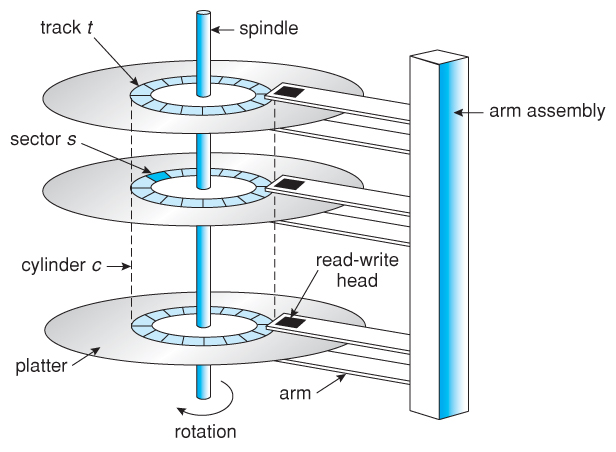
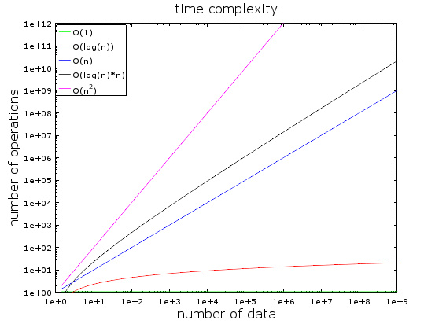
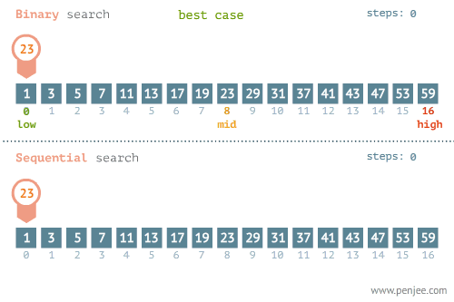
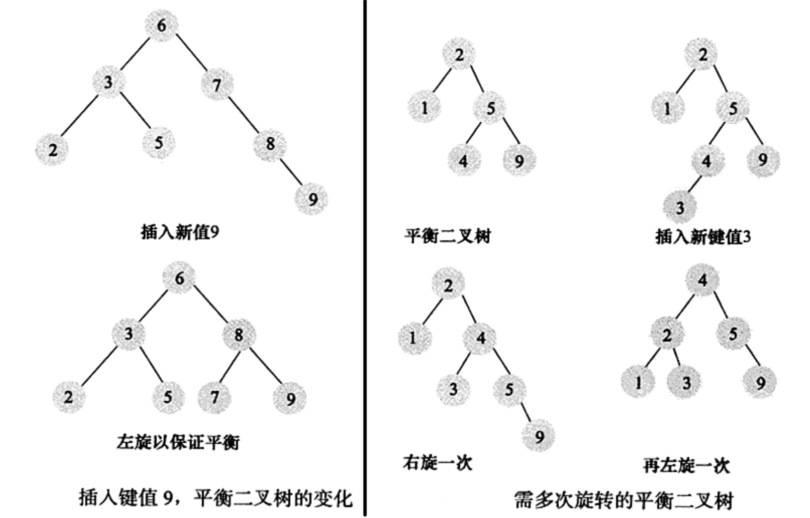
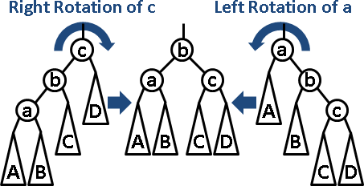
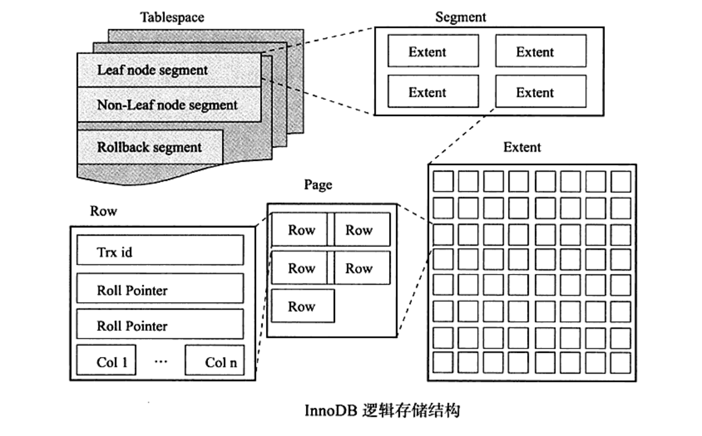
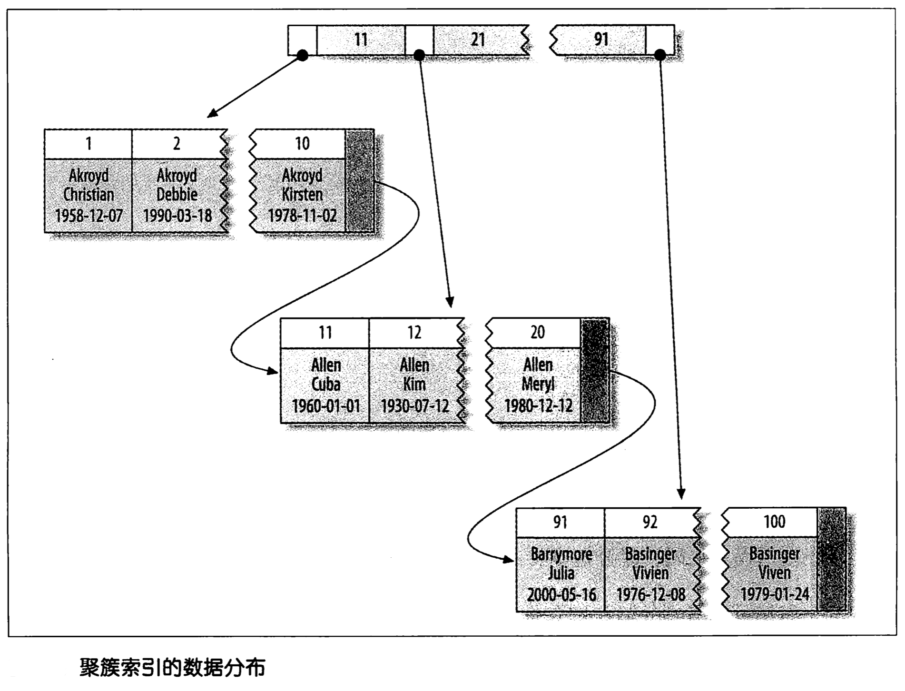
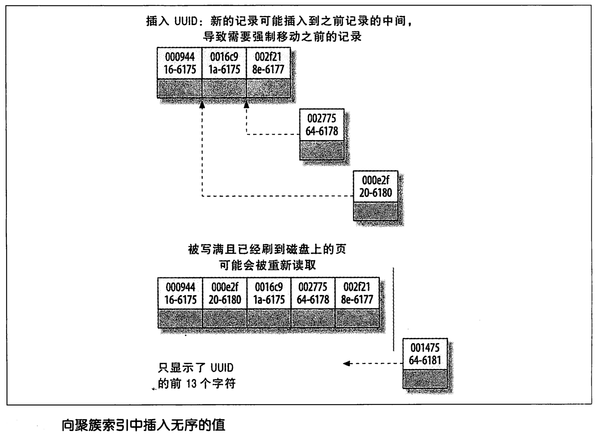
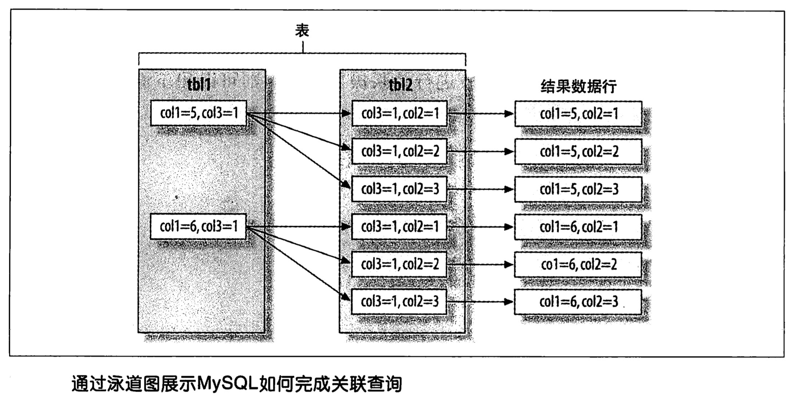

<!DOCTYPE html> <html lang="en"> <head> <meta charset="UTF-8"> <!--[if IE]><meta content="IE=edge" http-equiv="X-UA-Compatible"><![endif]--> <meta content="width=device-width,initial-scale=1" name="viewport"> <meta content="Asciidoctor 1.5.5" name="generator"> <meta content="MySQL 学习笔记。从数据库表结构设计，深入到索引的数据结构，最后以前面的知识做铺垫，讲解如何使用 explain 做 SQL 的查询优化。" name="description"> <meta content="MySQL, InnoDB, MyISAM, 聚簇索引, 平衡二叉树, 优化, SQL, 数据库" name="keywords"> <meta content="D瓜哥" name="author"> <title>MySQL 学习笔记Alpha</title> <link href="//fonts.proxy.ustclug.org/css?family=Open+Sans:300,300italic,400,400italic,600,600italic%7CNoto+Serif:400,400italic,700,700italic%7CDroid+Sans+Mono:400,700" rel="stylesheet"> <link href="styles/asciidoctor.css" rel="stylesheet"> <link href="//cdn.bootcss.com/font-awesome/4.6.3/css/font-awesome.min.css" rel="stylesheet"> <link href="styles/coderay-asciidoctor.css" rel="stylesheet"> </head> <body class="toc2 book toc-left"> <div id="header"> <h1>MySQL 学习笔记<sup>Alpha</sup></h1> <div class="details"> <span class="author" id="author">D瓜哥</span><br> <span class="email" id="email"><a href="http://www.diguage.com/" class="bare">http://www.diguage.com/</a></span><br> <span id="revnumber">v 0.1.0,</span> <span id="revdate">2016-12-11</span> <br><span id="revremark">Alpha</span> </div> <div class="toc2" id="toc"> <div id="toctitle">目录</div> <ul class="sectlevel1"> <li><a href="#_前言">前言</a> <ul class="sectlevel2"> <li><a href="#_友情支持">友情支持</a></li> <li><a href="#_官网及版本库">官网及版本库</a></li> <li><a href="#_特别提醒">特别提醒</a></li> </ul> </li> <li><a href="#_schema_设计">1. Schema 设计</a> <ul class="sectlevel2"> <li><a href="#_数据类型的选择">1.1. 数据类型的选择</a> <ul class="sectlevel3"> <li><a href="#_整数">1.1.1. 整数</a></li> <li><a href="#_实数">1.1.2. 实数</a></li> <li><a href="#_字符串类型">1.1.3. 字符串类型</a> <ul class="sectlevel4"> <li><a href="#_blob和text_类型">1.1.3.1. BLOB和TEXT 类型</a></li> <li><a href="#_使用枚举_enum_代替字符串">1.1.3.2. 使用枚举（ENUM）代替字符串</a></li> </ul> </li> <li><a href="#_日期和时间类型">1.1.4. 日期和时间类型</a></li> <li><a href="#_位数据类型">1.1.5. 位数据类型</a></li> <li><a href="#_选择标识符_键列">1.1.6. 选择标识符（键列）</a></li> <li><a href="#_特殊类型数据">1.1.7. 特殊类型数据</a></li> </ul> </li> <li><a href="#_mysql_schema_设计中的陷阱">1.2. MySQL Schema 设计中的陷阱</a></li> <li><a href="#_范式和反范式">1.3. 范式和反范式</a></li> <li><a href="#_缓存表和汇总表">1.4. 缓存表和汇总表</a> <ul class="sectlevel3"> <li><a href="#_物化视图">1.4.1. 物化视图</a></li> <li><a href="#_计数器表">1.4.2. 计数器表</a></li> </ul> </li> <li><a href="#_加快_code_alter_table_code_操作的速度">1.5. 加快 <code>ALTER TABLE</code> 操作的速度</a> <ul class="sectlevel3"> <li><a href="#_只修改_em_frm_em_文件">1.5.1. 只修改 <em>.frm</em> 文件</a></li> <li><a href="#_快速创建_myisam_索引">1.5.2. 快速创建 MyISAM 索引</a></li> </ul> </li> <li><a href="#_总结">1.6. 总结</a></li> </ul> </li> <li><a href="#_创建索引">2. 创建索引</a> <ul class="sectlevel2"> <li><a href="#_追本溯源">2.1. 追本溯源</a> <ul class="sectlevel3"> <li><a href="#_存储金字塔">2.1.1. 存储金字塔</a></li> <li><a href="#_机械硬盘结构">2.1.2. 机械硬盘结构</a></li> <li><a href="#_局部性原理与磁盘预读">2.1.3. 局部性原理与磁盘预读</a></li> <li><a href="#_时间复杂度">2.1.4. 时间复杂度</a></li> <li><a href="#_归并排序">2.1.5. 归并排序</a></li> <li><a href="#_二分查找">2.1.6. 二分查找</a></li> <li><a href="#_树">2.1.7. 树</a></li> <li><a href="#_二叉查找树">2.1.8. 二叉查找树</a></li> <li><a href="#_平衡二叉查找树">2.1.9. 平衡二叉查找树</a></li> <li><a href="#_b_tree">2.1.10. B+Tree</a></li> <li><a href="#_哈希表">2.1.11. 哈希表</a></li> </ul> </li> <li><a href="#_innodb_逻辑存储结构">2.2. InnoDB 逻辑存储结构。</a> <ul class="sectlevel3"> <li><a href="#_行">2.2.1. 行</a></li> </ul> </li> <li><a href="#_索引基础">2.3. 索引基础</a> <ul class="sectlevel3"> <li><a href="#_索引类型">2.3.1. 索引类型</a> <ul class="sectlevel4"> <li><a href="#_b_tree_索引">2.3.1.1. B-Tree 索引</a></li> <li><a href="#_哈希索引">2.3.1.2. 哈希索引</a></li> <li><a href="#_空间数据索引_r_tree">2.3.1.3. 空间数据索引（R-Tree）</a></li> <li><a href="#_全文索引">2.3.1.4. 全文索引</a></li> <li><a href="#_分形树索引_fractal_tree_index">2.3.1.5. 分形树索引（fractal tree index）</a></li> </ul> </li> </ul> </li> <li><a href="#_索引的优点">2.4. 索引的优点</a></li> <li><a href="#_高性能的索引策略">2.5. 高性能的索引策略</a> <ul class="sectlevel3"> <li><a href="#_独立的列">2.5.1. 独立的列</a></li> <li><a href="#_前缀索引和索引选择性">2.5.2. 前缀索引和索引选择性</a></li> <li><a href="#_多列索引">2.5.3. 多列索引</a></li> <li><a href="#_选择合适的索引列顺序">2.5.4. 选择合适的索引列顺序</a></li> <li><a href="#_聚簇索引">2.5.5. 聚簇索引</a> <ul class="sectlevel4"> <li><a href="#_innodb_和_myisam_的数据分布对比">2.5.5.1. InnoDB 和 MyISAM 的数据分布对比</a></li> <li><a href="#_在_innodb_表中按主键顺序插入行">2.5.5.2. 在 InnoDB 表中按主键顺序插入行</a></li> </ul> </li> <li><a href="#_覆盖索引">2.5.6. 覆盖索引</a></li> <li><a href="#_使用索引扫描来做排序">2.5.7. 使用索引扫描来做排序</a></li> <li><a href="#_压缩_前缀压缩_索引">2.5.8. 压缩（前缀压缩）索引</a></li> <li><a href="#_冗余和重复索引">2.5.9. 冗余和重复索引</a></li> <li><a href="#_未使用的索引">2.5.10. 未使用的索引</a></li> <li><a href="#_索引和锁">2.5.11. 索引和锁</a></li> </ul> </li> <li><a href="#_索引案例学习">2.6. 索引案例学习</a> <ul class="sectlevel3"> <li><a href="#_支持多种过滤条件">2.6.1. 支持多种过滤条件</a></li> </ul> </li> <li><a href="#_维护索引和表">2.7. 维护索引和表</a> <ul class="sectlevel3"> <li><a href="#_找到并修复损坏的表">2.7.1. 找到并修复损坏的表</a></li> <li><a href="#_更新索引统计信息">2.7.2. 更新索引统计信息</a></li> <li><a href="#_减少索引和数据的碎片">2.7.3. 减少索引和数据的碎片</a></li> </ul> </li> <li><a href="#_总结_2">2.8. 总结</a></li> </ul> </li> <li><a href="#_查询性能优化">3. 查询性能优化</a> <ul class="sectlevel2"> <li><a href="#_为什么查询速度会慢">3.1. 为什么查询速度会慢？</a></li> <li><a href="#_慢查询基础_优化数据访问">3.2. 慢查询基础：优化数据访问</a></li> <li><a href="#_重构查询的方式">3.3. 重构查询的方式</a> <ul class="sectlevel3"> <li><a href="#_一个复杂查询还是多个简单查询">3.3.1. 一个复杂查询还是多个简单查询</a></li> <li><a href="#_切分查询">3.3.2. 切分查询</a></li> <li><a href="#_分解关联查询">3.3.3. 分解关联查询</a></li> </ul> </li> <li><a href="#_查询执行的基础">3.4. 查询执行的基础</a> <ul class="sectlevel3"> <li><a href="#_mysql_客户端_服务器通信协议">3.4.1. MySQL 客户端/服务器通信协议</a></li> <li><a href="#_查询缓存">3.4.2. 查询缓存</a></li> <li><a href="#_查询优化处理">3.4.3. 查询优化处理</a> <ul class="sectlevel4"> <li><a href="#_语法解析器和预处理">3.4.3.1. 语法解析器和预处理</a></li> <li><a href="#_查询优化器">3.4.3.2. 查询优化器</a></li> <li><a href="#_数据和索引的统计信息">3.4.3.3. 数据和索引的统计信息</a></li> <li><a href="#_mysql_如何执行关联查询">3.4.3.4. MySQL 如何执行关联查询</a></li> <li><a href="#_执行计划">3.4.3.5. 执行计划</a></li> <li><a href="#_关联查询优化器">3.4.3.6. 关联查询优化器</a></li> <li><a href="#_排序优化">3.4.3.7. 排序优化</a></li> </ul> </li> <li><a href="#_查询执行引擎">3.4.4. 查询执行引擎</a></li> <li><a href="#_返回结果给客户端">3.4.5. 返回结果给客户端</a></li> </ul> </li> <li><a href="#_mysql_查询优化器的局限性">3.5. MySQL 查询优化器的局限性</a> <ul class="sectlevel3"> <li><a href="#_关联子查询">3.5.1. 关联子查询</a> <ul class="sectlevel4"> <li><a href="#_如何用好关联子查询">3.5.1.1. 如何用好关联子查询</a></li> </ul> </li> <li><a href="#__code_union_code_的限制">3.5.2. <code>UNION</code> 的限制</a></li> <li><a href="#_索引合并优化">3.5.3. 索引合并优化</a></li> <li><a href="#_等值传递">3.5.4. 等值传递</a></li> <li><a href="#_并行执行">3.5.5. 并行执行</a></li> <li><a href="#_哈希关联">3.5.6. 哈希关联</a></li> <li><a href="#_松散索引扫描">3.5.7. 松散索引扫描</a></li> <li><a href="#_最大值和最小值优化">3.5.8. 最大值和最小值优化</a></li> <li><a href="#_在同一个表上查询和更新">3.5.9. 在同一个表上查询和更新</a></li> </ul> </li> <li><a href="#_查询优化器的提示_hint">3.6. 查询优化器的提示（hint）</a></li> <li><a href="#_优化特定类型的查询">3.7. 优化特定类型的查询</a> <ul class="sectlevel3"> <li><a href="#_优化_code_count_code_查询">3.7.1. 优化 <code>COUNT()</code> 查询</a> <ul class="sectlevel4"> <li><a href="#__code_count_code_的作用">3.7.1.1. <code>COUNT()</code> 的作用</a></li> <li><a href="#_关于_myisam_的神话">3.7.1.2. 关于 MyISAM 的神话</a></li> <li><a href="#_简单的优化">3.7.1.3. 简单的优化</a></li> <li><a href="#_使用近似值">3.7.1.4. 使用近似值</a></li> <li><a href="#_更复杂的优化">3.7.1.5. 更复杂的优化</a></li> </ul> </li> <li><a href="#_优化关联查询">3.7.2. 优化关联查询</a></li> <li><a href="#_优化子查询">3.7.3. 优化子查询</a></li> <li><a href="#_优化_code_group_by_code_和_code_distinct_code">3.7.4. 优化 <code>GROUP BY</code> 和 <code>DISTINCT</code></a> <ul class="sectlevel4"> <li><a href="#_优化_code_group_by_with_rollup_code">3.7.4.1. 优化 <code>GROUP BY WITH ROLLUP</code></a></li> </ul> </li> <li><a href="#_优化_code_limit_code_分页">3.7.5. 优化 <code>LIMIT</code> 分页</a></li> <li><a href="#_优化_code_sql_calc_found_rows_code">3.7.6. 优化 <code>SQL_CALC_FOUND_ROWS</code></a></li> <li><a href="#_优化_code_union_code_查询">3.7.7. 优化 <code>UNION</code> 查询</a></li> <li><a href="#_静态查询分析">3.7.8. 静态查询分析</a></li> <li><a href="#_使用用户自定义变量">3.7.9. 使用用户自定义变量</a> <ul class="sectlevel4"> <li><a href="#_优化排名语句">3.7.9.1. 优化排名语句</a></li> <li><a href="#_避免重复查询刚刚更新的数据">3.7.9.2. 避免重复查询刚刚更新的数据</a></li> <li><a href="#_确定取值的顺序">3.7.9.3. 确定取值的顺序</a></li> <li><a href="#_编写偷懒的_code_union_code">3.7.9.4. 编写偷懒的 <code>UNION</code></a></li> <li><a href="#_用户自定义变量的其他用处">3.7.9.5. 用户自定义变量的其他用处</a></li> </ul> </li> </ul> </li> <li><a href="#_案例学习">3.8. 案例学习</a> <ul class="sectlevel3"> <li><a href="#_使用_mysql_构建一个队列表">3.8.1. 使用 MySQL 构建一个队列表</a></li> <li><a href="#_计算两点之间的距离">3.8.2. 计算两点之间的距离</a></li> <li><a href="#_使用用户定义函数">3.8.3. 使用用户定义函数</a></li> </ul> </li> <li><a href="#_总结_3">3.9. 总结</a></li> </ul> </li> <li><a href="#_mysql_code_explain_code_详解">4. MySQL <code>explain</code> 详解</a> <ul class="sectlevel2"> <li><a href="#__code_explain_code_语法">4.1. <code>EXPLAIN</code> 语法</a> <ul class="sectlevel3"> <li><a href="#_获取表结构">4.1.1. 获取表结构</a></li> </ul> </li> <li><a href="#__code_explain_code_输出">4.2. <code>explain</code> 输出</a> <ul class="sectlevel3"> <li><a href="#__code_select_type_code">4.2.1. <code>select_type</code></a></li> <li><a href="#__code_partitions_code">4.2.2. <code>partitions</code></a></li> <li><a href="#__code_type_code">4.2.3. <code>type</code></a></li> <li><a href="#__code_possible_keys_code">4.2.4. <code>possible_keys</code></a></li> <li><a href="#__code_key_code">4.2.5. <code>key</code></a></li> <li><a href="#__code_key_len_code">4.2.6. <code>key_len</code></a></li> <li><a href="#__code_ref_code">4.2.7. <code>ref</code></a></li> <li><a href="#__code_rows_code">4.2.8. <code>rows</code></a></li> <li><a href="#__code_filtered_code">4.2.9. <code>filtered</code></a></li> <li><a href="#__code_extra_code">4.2.10. <code>extra</code></a></li> </ul> </li> </ul> </li> <li><a href="#__code_explain_code_实践">5. <code>EXPLAIN</code> 实践</a></li> <li><a href="#_参考资料">附录 A: 参考资料</a></li> <li><a href="#_版权声明">附录 B: 版权声明</a></li> </ul> </div> </div> <div id="content"> <div id="preamble"> <div class="sectionbody"> <script> var _hmt = _hmt || [];
(function() {
  var hm = document.createElement("script");
  hm.src = "https://hm.baidu.com/hm.js?ae7f1fd4c53f019313f5a1db9b0d4803";
  var s = document.getElementsByTagName("script")[0];
  s.parentNode.insertBefore(hm, s);
})(); </script> </div> </div> <div class="sect1"> <h2 id="_前言">前言</h2> <div class="sectionbody"> <div class="paragraph"> <p><strong>本笔记还没有完成，现在还处于 Alpha 版，后续还会持续更新。</strong></p> </div> <div class="sect2"> <h3 id="_友情支持">友情支持</h3> <div class="paragraph"> <p>如果您觉得这个笔记对您有所帮助，看在D瓜哥码这么多字的辛苦上，请友情支持一下，D瓜哥感激不尽，😜</p> </div> <table class="tableblock frame-none grid-all spread"> <colgroup> <col style="width: 50%"> <col style="width: 50%"> </colgroup> <tbody> <tr> <td class="tableblock halign-center valign-top"><p class="tableblock"><span class="image"></span></td> <td class="tableblock halign-center valign-top"><p class="tableblock"><span class="image"></span></td> </tr> </tbody> </table> </div> <div class="sect2"> <h3 id="_官网及版本库">官网及版本库</h3> <div class="paragraph"> <p>本文档的版本库托管在 Github 上，另外单独发布。</p> </div> <div class="dlist"> <dl> <dt class="hdlist1">“地瓜哥”博客网</dt> <dd> <p><a href="http://www.diguage.com/" class="bare">http://www.diguage.com/</a> 。D瓜哥的个人博客。欢迎光临，不过，内容很杂乱，请见谅。不见谅，你来打我啊，😂😂</p> </dd> <dt class="hdlist1">本文档官网</dt> <dd> <p><a href="http://notes.diguage.com/mysql/" class="bare">http://notes.diguage.com/mysql/</a> 。为了方便阅读，这里展示了处理好的文档。阅读请点击这个网址。</p> </dd> <dt class="hdlist1">本文档版本库</dt> <dd> <p><a href="https://github.com/diguage/mysql-notes" class="bare">https://github.com/diguage/mysql-notes</a> 。欢迎大家发送 PR。</p> </dd> </dl> </div> </div> <div class="sect2"> <h3 id="_特别提醒">特别提醒</h3> <div class="paragraph"> <p>有个需要特别注意的地方，这里重点提出：<strong>本文档部分的内容可能会过时！</strong></p> </div> <div class="paragraph"> <p>这个文档绝大部分是参考《高性能 MySQL》写的，可以说就是一个读书笔记。书中反复强调，绝大部分内容是针对 MySQL 5.5 书写的。随着 MySQL 的发展，本文档部分的内容可能会过时。所以，文档如果有错误之处，还请以相应版本的官方文档为准！</p> </div> </div> </div> </div> <div class="sect1"> <h2 id="_schema_设计">1. Schema 设计</h2> <div class="sectionbody"> <div class="paragraph"> <p>良好的逻辑设计和物理设计是高性能的基石。</p> </div> <div class="sect2"> <h3 id="_数据类型的选择">1.1. 数据类型的选择</h3> <div class="arabic olist"> <ol class="arabic"> <li> <p>更小的通常更好</p> </li> <li> <p>简单就好</p> </li> <li> <p>尽量避免 Null</p> </li> </ol> </div> <div class="paragraph"> <p>InnoDB 使用单独的位存储 Null 值，所以对于稀疏数据（多数为 Null，少数非 Null）有很好的空间效率。</p> </div> <div class="paragraph"> <p>MySQL 很多数据类型只是别名，可以用 <code>SHOW CREATE TABLE</code> 查看对应的基本类型。</p> </div> <div class="sect3"> <h4 id="_整数">1.1.1. 整数</h4> <div class="paragraph"> <p>整数类型： <code>TINYINT</code> 、 <code>SMALLINT</code> 、 <code>MEDIUMINT</code> 、 <code>INT</code> 、 <code>BIGINT</code>；分别使用 8、16、24、32、64 位存储空间。存储的范围从 -2<sup>(N-1)</sup> 到 2<sup>(N-1)</sup>-1。</p> </div> <div class="paragraph"> <p>整数类型有可选的 <code>UNSIGNED</code>，表示不允许负值。</p> </div> <div class="paragraph"> <p>有符号和无符号类型使用相同的存储空间，并具有相同的性能，因此可以根据实际情况选择合适的类型。</p> </div> <div class="paragraph"> <p>MySQL 可以为整数类型指定宽度，例如 <code>INT(11)</code>，这实际没有意义：它不会限制值的合法范围。对于存储和计算来说， <code>INT(1)</code> 和 <code>INT(20)</code> 是相同的。</p> </div> </div> <div class="sect3"> <h4 id="_实数">1.1.2. 实数</h4> <div class="paragraph"> <p><code>DECIMAL</code> 类型用于存储精确的小数。CPU 不支持对 <code>DECIMAL</code> 的直接计算。</p> </div> <div class="paragraph"> <p>CPU 直接支持原生浮点计算，所以浮点运算明显更快。</p> </div> <div class="paragraph"> <p>MySQL 5.0 和更高版本中的 <code>DECIMAL</code> 类型运行最多 65 个数字。</p> </div> <div class="listingblock"> <div class="title">代码 1. 测试 <code>DECIMAL</code> 类型的最大数字数</div> <div class="content"> <pre class="CodeRay highlight"><code data-lang="sql"><span class="class">DROP</span> <span class="type">TABLE</span> <span class="keyword">IF</span> <span class="keyword">EXISTS</span> decimal_test;
<span class="class">CREATE</span> <span class="type">TABLE</span> decimal_test (
  col1 <span class="predefined-type">DECIMAL</span>(<span class="integer">65</span>, <span class="integer">10</span>),
  col2 <span class="predefined-type">DECIMAL</span>(<span class="integer">66</span>, <span class="integer">10</span>) <b>(1)</b>
);</code></pre> </div> </div> <div class="arabic colist"> <table> <tr> <td><b>1</b></td> <td>执行时报错，改为65即可执行。</td> </tr> </table> </div> <div class="paragraph"> <p>浮点类型在存储同样范围的值时，通常比 <code>DECIMAL</code> 使用更少的空间。 <code>FLOAT</code> 使用 4 个字节存储； <code>DOUBLE</code> 占用 8 个字节。</p> </div> <div class="paragraph"> <p>MySQL 使用 <code>DOUBLE</code> 作为内部浮点计算的类型。</p> </div> <div class="paragraph"> <p>因为需要额外的空间和计算开销，所以应该尽量只在对小数进行精确计算时才使用 <code>DECIMAL</code> 。</p> </div> <div class="paragraph"> <p>在数据量比较大的时候，可以考虑使用 <code>BIGINT</code> 代替 <code>DECIMAL</code> ，将需要存储的货币单位根据小数的位数乘以相应的倍数即可。</p> </div> </div> <div class="sect3"> <h4 id="_字符串类型">1.1.3. 字符串类型</h4> <div class="paragraph"> <p>从 MySQL 4.1 开始，每个字符串列可以定义自己的字符集和排序规则，或者说校对规则。</p> </div> <div class="dlist"> <dl> <dt class="hdlist1"><code>VARCHAR</code></dt> <dd> <p>用于存储可变长字符串，比定长类型更节省空间。</p> <div class="admonitionblock tip"> <table> <tr> <td class="icon">  </td> <td class="content"> 例外：MySQL表使用 <code>ROW_FORMAT=FIXED</code> 创建的话，每一行都会使用定长存储。 </td> </tr> </table> </div> <div class="paragraph"> <p><code>VARCHAR</code> 需要使用 1 或 2个额外字节记录字符串的长度：如果列的最大长度小于或者等于255字节，则只使用1个字节表示，否则使用 2 个字节。</p> </div> <div class="paragraph"> <p><code>VARCHAR</code> 节省了存储空间，所以对性能也有帮助。但是，行变长时，如果页内没有更多的空间可以存储，MyISAM 会将行拆成不同的片段存储，InnoDB 则需要分裂页来使行可以放进页内。</p> </div> <div class="admonitionblock warning"> <table> <tr> <td class="icon">  </td> <td class="content"> 每页最多能存多少数据？ 2<sup>8</sup> = 256， 2<sup>16</sup> = 65536。数据能否超过65536？如果不能，超过了会怎么样？-- MySQL 中 <code>VARCHAR</code> 类型的最大长度限制为 65535。 </td> </tr> </table> </div> <div class="paragraph"> <p>InnoDB 更灵活，可以把过长的 <code>VARCHAR</code> 存储为 <code>BLOB</code>。</p> </div> <div class="admonitionblock warning"> <table> <tr> <td class="icon">  </td> <td class="content"> 变化的阈值是多少？ </td> </tr> </table> </div> </dd> <dt class="hdlist1"><code>CHAR</code></dt> <dd> <p>定长，根据定义分配足够的空间。当存储 <code>CHAR</code> 值时，MySQL 会删除所有的末尾空格。<code>CHAR</code> 值会根据需要采用空格进行填充以方便比较。</p> <div class="ulist"> <ul> <li> <p><code>CHAR</code> 适合存储很短的字符串，或者所有值都接近同一个长度，比如密码的 MD5 值。</p> </li> <li> <p>对于经常变更的数据， <code>CHAR</code> 也比 <code>VARCHAR</code> 更好，定长不容易产生碎片。</p> </li> <li> <p>非常短的列， <code>CHAR</code> 比 <code>VARCHAR</code> 在存储空间上更有效率。</p> </li> </ul> </div> </dd> </dl> </div> <div class="listingblock"> <div class="title">代码 2. 测试数据两端的空格保留情况</div> <div class="content"> <pre class="CodeRay highlight"><code data-lang="sql"><span class="comment"># 测试 CHAR</span>
<span class="class">DROP</span> <span class="type">TABLE</span> <span class="keyword">IF</span> <span class="keyword">EXISTS</span> char_test;
<span class="class">CREATE</span> <span class="type">TABLE</span> char_test (char_col <span class="predefined-type">CHAR</span>(<span class="integer">10</span>));

<span class="class">INSERT</span> <span class="class">INTO</span> char_test <span class="keyword">VALUES</span> (<span class="string"><span class="delimiter">'</span><span class="content">string1</span><span class="delimiter">'</span></span>), (<span class="string"><span class="delimiter">'</span><span class="content">   string2</span><span class="delimiter">'</span></span>), (<span class="string"><span class="delimiter">'</span><span class="content">string3   </span><span class="delimiter">'</span></span>);

<span class="class">SELECT</span> CONCAT(<span class="string"><span class="delimiter">&quot;</span><span class="content">'</span><span class="delimiter">&quot;</span></span>, char_col, <span class="string"><span class="delimiter">&quot;</span><span class="content">'</span><span class="delimiter">&quot;</span></span>) <span class="keyword">FROM</span> char_test; <b>(1)</b>

<span class="comment"># 测试 VARCHAR</span>
<span class="class">DROP</span> <span class="type">TABLE</span> <span class="keyword">IF</span> <span class="keyword">EXISTS</span> varchar_test;
<span class="class">CREATE</span> <span class="type">TABLE</span> varchar_test (varchar_col <span class="predefined-type">VARCHAR</span>(<span class="integer">10</span>));

<span class="class">INSERT</span> <span class="class">INTO</span> varchar_test <span class="keyword">VALUES</span> (<span class="string"><span class="delimiter">'</span><span class="content">string1</span><span class="delimiter">'</span></span>), (<span class="string"><span class="delimiter">'</span><span class="content">   string2</span><span class="delimiter">'</span></span>), (<span class="string"><span class="delimiter">'</span><span class="content">string3   </span><span class="delimiter">'</span></span>);

<span class="class">SELECT</span> CONCAT(<span class="string"><span class="delimiter">&quot;</span><span class="content">'</span><span class="delimiter">&quot;</span></span>, varchar_col, <span class="string"><span class="delimiter">&quot;</span><span class="content">'</span><span class="delimiter">&quot;</span></span>) <span class="keyword">FROM</span> varchar_test; <b>(1)</b></code></pre> </div> </div> <div class="arabic colist"> <table> <tr> <td><b>1</b></td> <td>注意观察查询结果中字符串两边的空格变化。</td> </tr> </table> </div> <div class="paragraph"> <p><strong>数据如何存储取决于存储引擎。</strong></p> </div> <div class="paragraph"> <p>与 <code>CHAR</code> 和 <code>VARCHAR</code> 类似的类型还有 <code>BINARY</code> 和 <code>VARBINARY</code>，它们存储的是二进制字符串。二进制字符串存储的是字节码而不是字符。MySQL 填充 <code>BINARY</code> 采用的是 <code>\0</code> （零字节）而不是空格，在检索时也不会去掉填充值。</p> </div> <div class="paragraph"> <p>二进制比较的优势并不仅仅体现在大小写敏感上。MySQL 比较 <code>BINARY</code> 字符串时，每次按一个字节，并且根据该字节的数值进行比较。因此，二进制比字符串比较简单很多，所以也更快。</p> </div> <div class="admonitionblock tip"> <table> <tr> <td class="icon">  </td> <td class="content"> 慷慨是不明智的。 </td> </tr> </table> </div> <div class="sect4"> <h5 id="_blob和text_类型">1.1.3.1. BLOB和TEXT 类型</h5> <div class="paragraph"> <p><code>BLOB</code> 和 <code>TEXT</code> 都是为存储很大的数据而设计的字符串数据类型，分别采用二进制和字符串方式存储。</p> </div> <div class="paragraph"> <p>字符串类型： <code>TINYTEXT</code>、 <code>SMALLTEXT</code>、 <code>TEXT</code>、 <code>MEDIUMTEXT</code>、 <code>LONGTEXT</code><br> 二进制类型： <code>TINYBLOB</code>、 <code>SMALLBLOB</code>、 <code>BLOB</code>、 <code>MEDIUMBLOB</code>、 <code>LONGBLOB</code></p> </div> <div class="paragraph"> <p><code>BLOB</code> 是 <code>SMALLBLOB</code> 的同义词； <code>TEXT</code> 是 <code>SMALLTEXT</code> 的同义词。</p> </div> <div class="paragraph"> <p>MySQL 把每个 <code>BLOB</code> 和 <code>TEXT</code> 值当做一个独立的对象处理。InnoDB 会使用专门的“外部”存储区域来进行存储，此时每个值在行内需要 1 ~ 4 个字节存储一个指针，然后在外部存储区域存储实际的值。</p> </div> <div class="paragraph"> <p><code>BLOB</code> 和 <code>TEXT</code> 家族之间仅有的不同是 <code>BLOB</code> 类型存储的是二进制，没有排序规则或字符集，而 <code>TEXT</code> 类型有字符集和排序规则。</p> </div> <div class="paragraph"> <p><code>BLOB</code> 和 <code>TEXT</code> 只对每个列的最前 <code>max_sort_length</code> 字节而不是整个字符串做排序。</p> </div> <div class="paragraph"> <p>MySQL 不能将 <code>BLOB</code> 和 <code>TEXT</code> 列全部长度的字符串进行索引。</p> </div> </div> <div class="sect4"> <h5 id="_使用枚举_enum_代替字符串">1.1.3.2. 使用枚举（ENUM）代替字符串</h5> <div class="paragraph"> <p>枚举列可以把一些不重复的字符串存储成一个预定义的集合。MySQL 在存储枚举时非常紧凑，会根据列表值的数量压缩到一个或者两个字节中。MySQL 在内部会将每个值在列表中的位置保存为整数，并且在表的 <em>.frm</em> 文件中保存 “数字-字符串” 映射关系的 “查找表”。</p> </div> <div class="listingblock"> <div class="title">代码 3. 测试枚举的存储值</div> <div class="content"> <pre class="CodeRay highlight"><code data-lang="sql"><span class="class">DROP</span> <span class="type">TABLE</span> <span class="keyword">IF</span> <span class="keyword">EXISTS</span> enum_test;
<span class="class">CREATE</span> <span class="type">TABLE</span> enum_test (e <span class="predefined-type">ENUM</span> (<span class="string"><span class="delimiter">'</span><span class="content">fish</span><span class="delimiter">'</span></span>, <span class="string"><span class="delimiter">'</span><span class="content">apple</span><span class="delimiter">'</span></span>, <span class="string"><span class="delimiter">'</span><span class="content">dog</span><span class="delimiter">'</span></span>));

<span class="class">INSERT</span> <span class="class">INTO</span> enum_test (e) <span class="keyword">VALUES</span> (<span class="string"><span class="delimiter">'</span><span class="content">fish</span><span class="delimiter">'</span></span>), (<span class="string"><span class="delimiter">'</span><span class="content">dog</span><span class="delimiter">'</span></span>), (<span class="string"><span class="delimiter">'</span><span class="content">apple</span><span class="delimiter">'</span></span>); <b>(1)</b>

<span class="class">SELECT</span> e + <span class="integer">0</span> <span class="keyword">FROM</span> enum_test;

<span class="class">SELECT</span> e <span class="keyword">FROM</span> enum_test <span class="keyword">ORDER</span> <span class="keyword">BY</span> e; <b>(2)</b>

<span class="class">SELECT</span> e <span class="keyword">FROM</span> enum_test <span class="keyword">ORDER</span> <span class="keyword">BY</span> field(e, <span class="string"><span class="delimiter">'</span><span class="content">apple</span><span class="delimiter">'</span></span>, <span class="string"><span class="delimiter">'</span><span class="content">dog</span><span class="delimiter">'</span></span>, <span class="string"><span class="delimiter">'</span><span class="content">fish</span><span class="delimiter">'</span></span>); <b>(3)</b></code></pre> </div> </div> <div class="arabic colist"> <table> <tr> <td><b>1</b></td> <td>三行数据实际存储为整数，而不是字符串。</td> </tr> <tr> <td><b>2</b></td> <td>测试排序性</td> </tr> <tr> <td><b>3</b></td> <td>根据定义的字符串排序</td> </tr> </table> </div> <div class="paragraph"> <p>如果使用数字作为 <code>ENUM</code> 枚举常量，很容易导致混乱。尽量避免这么做。</p> </div> <div class="paragraph"> <p>枚举字段是按照内部存储的整数而不是定义的字符串进行排序的。一种绕过这种限制的方式是按照需要的顺序来定义枚举列。也可以在查询中使用 <code>FIELD()</code> 函数显式地指定排序顺序，但是会导致 MySQL 无法利用索引消除排序。</p> </div> <div class="paragraph"> <p>枚举最不好的地方是，字符串列表是固定的，添加或删除字符串必须使用 <code>ALTER TABLE</code>。在 MySQL 5.1 中支持只在列表末尾添加元素，而不用重建整个表。</p> </div> <div class="paragraph"> <p>把枚举保存为整数，必须查找才能转换为字符串，有开销。尤其和字符串的列关联查询时，甚至不如字符串关联字符性能好。</p> </div> <div class="paragraph"> <p>通用的设计实践：在“查找表”时采用整数主键而避免采用基于字符串进行关联。</p> </div> <div class="paragraph"> <p>根据 <code>SHOW TABLE STATUS</code> 命令输出结果中 <code>Data_length</code> 列的值，把列转换为 <code>ENUM</code> 可以让表的大小缩小.</p> </div> </div> </div> <div class="sect3"> <h4 id="_日期和时间类型">1.1.4. 日期和时间类型</h4> <div class="paragraph"> <p>MySQL 能存储的最小时间粒度为秒。但，也可以使用微秒级的粒度进行临时运算。</p> </div> <div class="dlist"> <dl> <dt class="hdlist1"><code>DATETIME</code></dt> <dd> <p>保存大范围的值，从 1001 年到 9999 年，精度为秒。把日期和时间封装到格式为 YYYYMMDDHHMMSS 的整数中，与时区无关。使用 8 个字节的存储空间。</p> </dd> <dt class="hdlist1"><code>TIMESTAMP</code></dt> <dd> <p>保存从 1970 年 1 月 1 日午夜以来的秒数，和 UNIX 时间戳相同。<code>TIMESTAMP</code> 只使用 4 个字节的存储空间，范围是从 1970 年到 2038 年。</p> </dd> </dl> </div> <div class="paragraph"> <p>MySQL 4.1 以及更新的版本按照 <code>DATETIME</code> 的方式格式化 <code>TIMESTAMP</code> 的值。<code>TIMESTAMP</code> 的存储格式在各个版本都是一样的。</p> </div> <div class="paragraph"> <p><code>TIMESTAMP</code> 显示的值也依赖于时区。MySQL 服务器、操作系统以及客户端连接都有时区设置。因此，存储值为 0 的 <code>TIMESTAMP</code> 在美国东部时区显示为 “1969-12-31 19:00:00”，与格林尼治时间差5个小时。</p> </div> <div class="paragraph"> <p>如果在多个时区存储或访问数据， <code>TIMESTAMP</code> 和 <code>DATETIME</code> 的行为将会很不一样。前者提供的值与时区有关，后者则保留文本表示的日期和时间。</p> </div> <div class="admonitionblock tip"> <table> <tr> <td class="icon">  </td> <td class="content"> 如果在东八区保存为 2016年12月05日17:34:17，在格林尼治显示为多少？ </td> </tr> </table> </div> <div class="paragraph"> <p>默认情况下，如果插入时没有指定第一个 <code>TIMESTAMP</code> 列的值，MySQL 则设置这个列的值为当前时间。</p> </div> <div class="paragraph"> <p><code>TIMESTAMP</code> 列默认为 <code>NOT NULL</code>。</p> </div> <div class="paragraph"> <p>通常应该尽量使用 <code>TIMESTAMP</code> ，因为它比 <code>DATETIME</code> 空间效率更高。</p> </div> <div class="paragraph"> <p>可以使用 <code>BIGINT</code> 类型存储微秒级别的时间戳，或者使用 <code>DOUBLE</code> 存储秒之后的小数部分。</p> </div> </div> <div class="sect3"> <h4 id="_位数据类型">1.1.5. 位数据类型</h4> </div> <div class="sect3"> <h4 id="_选择标识符_键列">1.1.6. 选择标识符（键列）</h4> <div class="paragraph"> <p>更有可能使用标识列与其他值进行比较，或者通过标识列寻找其他列。</p> </div> <div class="paragraph"> <p>选择标识列的类型时，不仅仅需要<strong>考虑存储类型</strong>，还需要<strong>考虑 MySQL 对这种类型怎么执行计算和比较</strong>。</p> </div> <div class="paragraph"> <p>一旦选定一种类型，要确保在所有关联表中都使用同样的类型。类型之间需要精确匹配，包括像 <code>UNSIGNED</code> 这样的属性。混用不同数据类型可能导致性能问题，在比较操作时隐式类型转换也可能导致很难发现的错误。</p> </div> <div class="paragraph"> <p>在可以满足值的范围的需求，并且预留为了增长空间的前提下，应该选择最小的数据类型。</p> </div> <div class="dlist"> <dl> <dt class="hdlist1">整数类型</dt> <dd> <p>整数通常是标识列最好的选择，因为它们很快并且可以使用 <code>AUTO_INCREMENT</code>。</p> </dd> <dt class="hdlist1"><code>ENUM</code> 和 <code>SET</code> 类型</dt> <dd> <p>通常是一个糟糕的选择。 <code>ENUM</code> 和 <code>SET</code> 列适合存储固定信息。</p> </dd> <dt class="hdlist1">字符串类型</dt> <dd> <p>如果可能，应该避免使用字符串作为标识列，因为它们很消耗空间，并且通常比数字类型慢。MyISAM 默认对字符串使用压缩索引，这会导致查询慢很多。</p> <div class="paragraph"> <p>使用完全“随机”的字符串也需要多加注意，例如 MD5()、SHA1()、 UUID()产生的字符串。这些新值会任意分布在很大的空间内，这会导致 <code>INSERT</code> 以及一些 <code>SELECT</code> 语句变得很慢：</p> </div> <div class="ulist"> <ul> <li> <p>插入值会随机地写到索引的不同位置，所以使得 <code>INSERT</code> 语句更慢。这会导致页分裂、磁盘随机访问，以及对于聚簇存储引擎产生聚簇索引碎片。</p> </li> <li> <p><code>SELECT</code> 语句会变得更慢，因为逻辑上相邻的行会分布在磁盘和内存的不同地方。</p> </li> <li> <p>随机值导致缓存对所有类型的查询语句效果都很差，因为会使得缓存赖以工作的局部访问性原理失效。如果真个数据集都一样的“热”，那么缓存任何一部分特别数据到内存都没有好处；如果工作集比内存大，缓存将会有很多刷新和不命中。</p> </li> </ul> </div> </dd> </dl> </div> <div class="paragraph"> <p>如果存储 UUID 值，则应该移除 “-” 符号；更好的做法是，使用 <code>UNHEX()</code> 函数转换 UUID 值为 16 字节的数字，并且存储在一个 <code>BINARY(16)</code> 列中。检索时可以通过 `HEX()`函数来格式化为十六进制格式。</p> </div> <div class="paragraph"> <p>UUID 值还是有一定的顺序的。</p> </div> </div> <div class="sect3"> <h4 id="_特殊类型数据">1.1.7. 特殊类型数据</h4> <div class="ulist"> <ul> <li> <p>低于秒级精度的时间戳</p> </li> <li> <p>IPv4 地址&#8201;&#8212;&#8201;<code>INET_ATON()</code> 和 <code>INET_NTOA()</code>。</p> </li> </ul> </div> </div> </div> <div class="sect2"> <h3 id="_mysql_schema_设计中的陷阱">1.2. MySQL Schema 设计中的陷阱</h3> <div class="dlist"> <dl> <dt class="hdlist1">太多的列</dt> <dd> <p>MySQL 的存储引擎 API 工作时需要在服务器层和存储引擎层之间通过行缓冲格式拷贝数据，然后在服务器层将缓冲内容解码成各个列。从行缓冲中将解码过的列转换成行数据结构的操作代价是非常高的。 MyISAM 定长行结构正好匹配，不需要转换。MyISAM 的变长行结构和 InnoDB 的行结构则总是需要转换。<strong>转换的代价依赖于列的数量。</strong></p> </dd> <dt class="hdlist1">太多的关联</dt> <dd> <p>MySQL 限制了每个关联操作最多只能有 61 张表。一个粗略的经验法则，如果希望查询执行得快速且并发性好，单个查询最好在 12 个表以内做关联。</p> </dd> <dt class="hdlist1">全能的枚举</dt> <dd> <p>注意防止过度使用枚举。修改枚举，就需要 <code>ALTER TABLE</code>，在 5.1 和更新版本中，只有在末尾增加值时，不需要 <code>ALTER TABLE</code>。</p> </dd> <dt class="hdlist1">变相的枚举</dt> <dd> <p>枚举列允许在列中存储一组定义值中的单个值，集合（ <code>SET</code> ）列则允许在列中存储一组定义值中的一个或多个值。比如: <code>CREATE TABLE set_test ( is_default SET ('Y', 'N') NOT NULL DEFAULT 'N' );</code> 真假只有一个，定义为枚举更好。</p> </dd> <dt class="hdlist1">非此发明的 NULL</dt> <dd> <p>建议不要存 NULL。但是不要走极端。当确实需要表示未知值时也不要害怕使用 NULL。处理 NULL 确实不容易，但有时候会比它的替代方案更好。</p> </dd> </dl> </div> </div> <div class="sect2"> <h3 id="_范式和反范式">1.3. 范式和反范式</h3> <div class="dlist"> <dl> <dt class="hdlist1">第一范式</dt> <dd> <p>符合1NF的关系中的每个属性都不可再分。1NF是所有关系型数据库的最基本要求。</p> </dd> </dl> </div> <div class="paragraph"> <p><a href="https://www.zhihu.com/question/24696366/answer/29189700">解释一下关系数据库的第一第二第三范式？ - 刘慰的回答 - 知乎</a></p> </div> <div class="paragraph"> <p><strong>范式化通常带来的好处：</strong></p> </div> <div class="ulist"> <ul> <li> <p>范式化的更新操作通常比反范式化要快。</p> </li> <li> <p>当数据较好地范式化时，就只有很少或者没有重复数据，所以只需要修改更少的数据。</p> </li> <li> <p>范式化的表通常更小，可以更好地存放在内存里，所以执行操作会更快。</p> </li> <li> <p>很少有多余的数据意味着检索列表数据时，更少需要 <code>DISTINCT</code> 或者 <code>GROUP BY</code> 语句。</p> </li> </ul> </div> <div class="paragraph"> <p>范式化设计的 Schema 的缺点是通常需要关联。</p> </div> <div class="paragraph"> <p><strong>反范式的优缺点</strong></p> </div> <div class="ulist"> <ul> <li> <p>反范式化的 Schema 因为所有数据都在一张表中，可以很好地避免关联。</p> </li> <li> <p>单独的表也能使用更有效的索引策略。</p> </li> </ul> </div> <div class="paragraph"> <p><strong>混用范式化和反范式化</strong></p> </div> <div class="paragraph"> <p>完全的范式化和完全的反范式化 Schema 都是实验室里才有的东西。在实际应用中经常需要混用，可能使用部分范式化的 Schema、缓存表，以及其他技巧。</p> </div> <div class="paragraph"> <p>最常见的反范式化数据的方法是复制或者缓存，在不同的表中存储相同的特定列。</p> </div> <div class="paragraph"> <p>从父表冗余一些数据到子表的利益是排序的需要。</p> </div> <div class="paragraph"> <p>缓存衍生值也是有用的。</p> </div> </div> <div class="sect2"> <h3 id="_缓存表和汇总表">1.4. 缓存表和汇总表</h3> <div class="paragraph"> <p>有时提升性能最好的方法是在同一张表中保存衍生的冗余数据；有时也需要创建一张完全独立的汇总表或缓存表。</p> </div> <div class="paragraph"> <p>缓存表表示存储那些可以比较简单地从 Schema 其他表获取数据的表。<br> 汇总表表示保存的是使用 <code>GROUP BY</code> 语句聚合数据的表。</p> </div> <div class="paragraph"> <p>一个有用的技巧是对缓存表使用不同的存储引擎。例如：主表用 InnoDB，使用 MyISAM 作为缓存表的引擎将会得到更小的索引占用空间，并且可以做全文检索。</p> </div> <div class="admonitionblock tip"> <table> <tr> <td class="icon">  </td> <td class="content"> 全文检索还是使用专门的工具，比如 ElasticSearch 更好。 </td> </tr> </table> </div> <div class="paragraph"> <p>在使用缓存表和汇总表时，必须决定是实时维护数据还是定时重建。看需求。定时重建不仅节省资源，还保持表不会有很多碎片，以及完全顺序组织的索引（这会更加高效）。</p> </div> <div class="paragraph"> <p>当重建汇总表和缓存表时，使用“影子表”来保证数据在操作时依然可用。</p> </div> <div class="listingblock"> <div class="content"> <pre class="CodeRay highlight"><code data-lang="sql"><span class="class">DROP</span> <span class="type">TABLE</span> <span class="keyword">IF</span> <span class="keyword">EXISTS</span> my_summary_new, my_summary_old;

<span class="class">CREATE</span> <span class="type">TABLE</span> my_summary_new <span class="keyword">LIKE</span> my_summary;

<span class="comment">-- TODO：执行汇总操作</span>

RENAME <span class="type">TABLE</span> my_summary <span class="keyword">TO</span> my_summary_old, my_summary_new <span class="keyword">TO</span> my_summary;</code></pre> </div> </div> <div class="sect3"> <h4 id="_物化视图">1.4.1. 物化视图</h4> <div class="paragraph"> <p>物化视图是预先计算并且存储在磁盘上的表，可以通过各种各样的策略刷新和更新。</p> </div> <div class="paragraph"> <p>MySQL 并不原生支持物化视图。</p> </div> <div class="paragraph"> <p>Justin Swanhart 的开源工具 Flexviews， <a href="https://github.com/greenlion/swanhart-tools">Swanhart Toolkit</a>。</p> </div> </div> <div class="sect3"> <h4 id="_计数器表">1.4.2. 计数器表</h4> <div class="paragraph"> <p>可以利用 <code>CurrentHashMap</code> 分段锁的思想，将对同一个计算器的修改，打散到多个变量上，然后在求和。</p> </div> <div class="listingblock"> <div class="content"> <pre class="CodeRay highlight"><code data-lang="sql"><span class="class">DROP</span> <span class="type">TABLE</span> <span class="keyword">IF</span> <span class="keyword">EXISTS</span> hit_counter;
<span class="class">CREATE</span> <span class="type">TABLE</span> hit_counter (
  slot <span class="predefined-type">TINYINT</span> <span class="predefined-type">UNSIGNED</span> <span class="keyword">NOT</span> <span class="predefined-constant">NULL</span>  <span class="directive">PRIMARY</span> <span class="type">KEY</span>,
  cnt  <span class="predefined-type">INT</span> <span class="predefined-type">UNSIGNED</span>     <span class="keyword">NOT</span> <span class="predefined-constant">NULL</span>
)<span class="directive">ENGINE</span> = InnoDB;

<span class="class">UPDATE</span> hit_counter <span class="class">SET</span> cnt = cnt + <span class="integer">1</span> <span class="keyword">WHERE</span> slot = RAND() * <span class="integer">100</span>;

<span class="class">SELECT</span> <span class="predefined">SUM</span>(cnt) <span class="keyword">FROM</span> hit_counter;</code></pre> </div> </div> <div class="paragraph"> <p>一个常见需要时每个一段时间开始一个新的计算器（例如，每天一个）。</p> </div> <div class="listingblock"> <div class="content"> <pre class="CodeRay highlight"><code data-lang="sql"><span class="class">DROP</span> <span class="type">TABLE</span> <span class="keyword">IF</span> <span class="keyword">EXISTS</span> daily_hit_counter;
<span class="class">CREATE</span> <span class="type">TABLE</span> daily_hit_counter (
  day  <span class="predefined-type">DATE</span>             <span class="keyword">NOT</span> <span class="predefined-constant">NULL</span>,
  slot <span class="predefined-type">TINYINT</span> <span class="predefined-type">UNSIGNED</span> <span class="keyword">NOT</span> <span class="predefined-constant">NULL</span>,
  cnt  <span class="predefined-type">INT</span> <span class="predefined-type">UNSIGNED</span>     <span class="keyword">NOT</span> <span class="predefined-constant">NULL</span>,
  <span class="directive">PRIMARY</span> <span class="type">KEY</span> (day, slot)
)<span class="directive">ENGINE</span> = InnoDB;

<span class="comment">-- 插入数据</span>
<span class="class">INSERT</span> <span class="class">INTO</span> daily_hit_counter (day, slot, cnt)
<span class="keyword">VALUES</span> (current_date, rand() * <span class="integer">100</span>, <span class="integer">1</span>)
<span class="keyword">ON</span> DUPLICATE <span class="type">KEY</span> <span class="class">UPDATE</span> cnt = cnt + <span class="integer">1</span>;

<span class="comment">-- 定期执行：合并所有结果到 0 号槽，并且删除所有其他的槽：</span>
<span class="class">UPDATE</span> daily_hit_counter <span class="keyword">AS</span> c
  <span class="keyword">INNER</span> <span class="keyword">JOIN</span> (
               <span class="class">SELECT</span>
                 day,
                 <span class="predefined">sum</span>(cnt)  <span class="keyword">AS</span> cnt,
                 <span class="predefined">min</span>(slot) <span class="keyword">AS</span> mslot
               <span class="keyword">FROM</span> daily_hit_counter
               <span class="keyword">GROUP</span> <span class="keyword">BY</span> day
             ) <span class="keyword">AS</span> x <span class="keyword">USING</span> (day)
<span class="class">SET</span> c.cnt = <span class="keyword">if</span>(c.slot = x.mslot, x.cnt, <span class="integer">0</span>),
  c.slot  = <span class="keyword">if</span>(c.slot = x.mslot, <span class="integer">0</span>, c.slot);
<span class="class">DELETE</span> <span class="keyword">FROM</span> daily_hit_counter <span class="keyword">WHERE</span> slot &lt;&gt; <span class="integer">0</span> <span class="keyword">AND</span> cnt = <span class="integer">0</span>;</code></pre> </div> </div> <div class="admonitionblock tip"> <table> <tr> <td class="icon">  </td> <td class="content"> 为了提升度查询的速度，可以建立额外索引；这样会增加些查询的负担，虽然写的慢，但是更显著提高了读操作的性能。 </td> </tr> </table> </div> </div> </div> <div class="sect2"> <h3 id="_加快_code_alter_table_code_操作的速度">1.5. 加快 <code>ALTER TABLE</code> 操作的速度</h3> <div class="paragraph"> <p>MySQL 的 <code>ALTER TABLE</code> 操作的性能对于大表来说是个大问题。 MySQL 执行大部分修改表结构操作的方法是用新的结构创建一个空表，从旧表中查出所有数据插入新表，然后删除旧表。</p> </div> <div class="paragraph"> <p>一般而言，大部分 <code>ALTER TABLE</code> 操作将导致 MySQL 服务中断。有两个技巧可以避免：</p> </div> <div class="ulist"> <ul> <li> <p>先在一台不提供服务的机器上执行 <code>ALTER TABLE</code> 操作，然后和提供服务的主库进行切换；</p> </li> <li> <p>影子拷贝：用要求的表结构创建一张和源表无关的新表，然后通过重命名和删表的操作交换两张表。还有一些第三方工具可以完成：</p> <div class="ulist"> <ul> <li> <p>Facebook <a href="https://launchpad.net/mysqlatfacebook">online schema change</a></p> </li> <li> <p>Shlomi Noach <a href="http://code.openark.org">openark toolkit</a></p> </li> <li> <p><a href="http://www.percona.com/software">Percona Toolkit</a></p> </li> </ul> </div> </li> </ul> </div> <div class="paragraph"> <p>不是所有的 <code>ALTER TABLE</code> 操作都会引起表重建。</p> </div> <div class="listingblock"> <div class="content"> <pre class="CodeRay highlight"><code data-lang="sql"><span class="comment">-- 很慢，N 多次读和 N 多次插入操作</span>
<span class="class">ALTER</span> <span class="type">TABLE</span> film
  MODIFY <span class="type">COLUMN</span> rental_duration <span class="predefined-type">TINYINT</span>(<span class="integer">3</span>) <span class="keyword">NOT</span> <span class="predefined-constant">NULL</span> <span class="directive">DEFAULT</span> <span class="integer">5</span>;

<span class="comment">-- 直接修改 _.frm_ 文件而不设计表数据。操作非常快。</span>
<span class="class">ALTER</span> <span class="type">TABLE</span> film
  <span class="class">ALTER</span> <span class="type">COLUMN</span> rental_duration <span class="class">SET</span> <span class="directive">DEFAULT</span> <span class="integer">5</span>;</code></pre> </div> </div> <div class="admonitionblock tip"> <table> <tr> <td class="icon">  </td> <td class="content"> <code>ALTER TABLE</code> 允许使用 <code>ALTER COLUMN</code>、 <code>MODIFY COLUMN</code> 和 <code>CHANGE COLUMN</code> 语句修改列。这三种操作都是不一样的。 <em>有什么不一样呢？</em> </td> </tr> </table> </div> <div class="sect3"> <h4 id="_只修改_em_frm_em_文件">1.5.1. 只修改 <em>.frm</em> 文件</h4> <div class="paragraph"> <p>下面的这些操作有可能不需要重建表：</p> </div> <div class="ulist"> <ul> <li> <p>移除一个列的 <code>AUTO_INCREMENT</code> 属性；</p> </li> <li> <p>增加、移除，或更改 <code>ENUM</code> 和 <code>SET</code> 常量。</p> </li> </ul> </div> <div class="paragraph"> <p>基本的技术是为想要的表结构创建一个新的 <em>.frm</em> 文件，然后用它替换掉已经存在的那张表的 <em>.frm</em> 文件。步骤如下：</p> </div> <div class="arabic olist"> <ol class="arabic"> <li> <p>创建一张有相同结构的空表，并进行所需要的修改；</p> </li> <li> <p>执行 <code>FLUSH TABLES WITH READ LOCK</code>。这将会关闭所有正在使用的表，并且禁止任何表被打开；</p> </li> <li> <p>交换 <em>.frm</em> 文件；</p> </li> <li> <p>执行 <code>UNLOCK TABLES</code> 来释放第2步的读锁。</p> </li> </ol> </div> </div> <div class="sect3"> <h4 id="_快速创建_myisam_索引">1.5.2. 快速创建 MyISAM 索引</h4> <div class="paragraph"> <p>为了高效地载入数据到 MyISAM 表中，有一个常用的技巧是先禁用索引、载入数据，然后重新启用索引。</p> </div> <div class="listingblock"> <div class="content"> <pre class="CodeRay highlight"><code data-lang="sql"><span class="class">ALTER</span> <span class="type">TABLE</span> load_data DISABLE KEYS;

<span class="comment">-- 载入数据</span>

<span class="class">ALTER</span> <span class="type">TABLE</span> load_data ENABLE KEYS;</code></pre> </div> </div> <div class="paragraph"> <p>不过，这个办法对唯一索引无效，因为 <code>DISABLE KEYS</code> 只对非唯一索引有效。</p> </div> <div class="paragraph"> <p>现代版本的 InnoDB 中有类似的技巧。</p> </div> </div> </div> <div class="sect2"> <h3 id="_总结">1.6. 总结</h3> <div class="ulist"> <ul> <li> <p>尽量避免过度设计；</p> </li> <li> <p>使用小而简单的合适数据类型，除非真的需要，否则应尽可能避免使用 <code>NULL</code>；</p> </li> <li> <p>尽量使用相同的数据类型存储相似或相关的值，尤其是要在关联条件中使用的列；</p> </li> <li> <p>注意可变长字符串，其在临时表和排序时可能导致悲观的按最大长度分配内存；</p> </li> <li> <p>尽量使用整型定义标识列；</p> </li> <li> <p>避免使用 MySQL 已经遗弃的特性，例如指定浮点数的精度，或者整型的显示宽度；</p> </li> <li> <p>小心使用 <code>ENUM</code> 和 <code>SET</code>；</p> </li> <li> <p>最好避免使用 <code>BIT</code>。</p> </li> </ul> </div> </div> </div> </div> <div class="sect1"> <h2 id="_创建索引">2. 创建索引</h2> <div class="sectionbody"> <div class="paragraph"> <p>索引优化应该是对查询性能优化最有效的手段。可以轻松提高几个数量级。</p> </div> <div class="paragraph"> <p>创建一个真正的“最优”的索引经常需要重写查询。</p> </div> <div class="paragraph"> <p>常言道：知其然，知其所以然。学习一门技术的时候，不仅要学怎么使用，还要学习这门技术出现的背景是什么，是为了解决什么问题出现的，技术本身又有什么不足。这样才能更好地理解这门技术。所以，在正式开始讲解索引之前，让我们先看看索引出现的原因以及实现索引时使用的数据结构。</p> </div> <div class="sect2"> <h3 id="_追本溯源">2.1. 追本溯源</h3> <div class="paragraph"> <p>计算机科学分为两块，一块是硬件；另外，一块就是软件。我们从这两方面说起。</p> </div> <div class="paragraph"> <p>计算机中，数据最后还是要落地到存储介质中。所以，我们需要了解一下计算机中的存储介质。</p> </div> <div class="paragraph"> <p>1984 年获得了图灵奖者瑞士计算机科学家尼克劳斯·威茨（Niklaus Wirth）提出一个著名公式 “算法 + 数据结构 = 程序”（Algorithm + Data Structures = Programs），简明扼要地说明了算法、数据结构及程序三者之间的关系。程序设计是一种智力劳动，算法与数据结构是编程之道中的“内功心法”，缺乏算法与数据结构素养，编程实践难以深入，也会限制码农利用计算机解决实际问题的能力。</p> </div> <div class="paragraph"> <p>我们先了解一下硬件相关的基础知识。</p> </div> <div class="sect3"> <h4 id="_存储金字塔">2.1.1. 存储金字塔</h4> <div class="paragraph"> <p>计算机中最重要的存储介质分为几类：硬盘、内存、二级缓存、寄存器。它们之间的对比如下：</p> </div> <div class="imageblock"> <div class="content">  </div> <div class="title">图 1. 存储金字塔</div> </div> <div class="paragraph"> <p>从上面的图中，我们可以看出，<strong>从下往上，速度从慢到快，制造成本也越来越高。</strong>几种有代表性的存储设备的典型访问速度如下：</p> </div> <div class="imageblock"> <div class="content">  </div> <div class="title">图 2. 存储访问时间</div> </div> <div class="paragraph"> <p>从这个图中，我们可以很明显的看出：<strong>高速缓存的访问速度是主存的 10~100 倍，而主存的访问速度则是硬盘的 1～10W 倍。</strong></p> </div> <div class="paragraph"> <p>大概就是走路和坐飞机的差别了。虽然坐飞机是飞一样的感觉，但是走路还是我们最常用的移动方式。数据存储也一样，对于一台独立的计算机，数据最后还是要落地到磁盘上。所以，我们来看看机械硬盘的结构。</p> </div> </div> <div class="sect3"> <h4 id="_机械硬盘结构">2.1.2. 机械硬盘结构</h4> <div class="paragraph"> <p>机械硬盘中的大致结构如下图，类似很多电影和电视剧中的留声机：</p> </div> <div class="imageblock"> <div class="content">  </div> <div class="title">图 3. 机械硬盘单个盘面结构轮廓图</div> </div> <div class="paragraph"> <p>机械硬盘中，每一个磁盘盘面的组成结构如下：</p> </div> <div class="imageblock"> <div class="content">  </div> <div class="title">图 4. 磁盘上的磁道、扇区和簇</div> </div> <div class="paragraph"> <p>英文名词解释：</p> </div> <div class="ulist"> <ul> <li> <p>Spindle Motor 主轴马达</p> </li> <li> <p>Permanent Magnent 永久磁铁</p> </li> <li> <p>Voice Coil 音圈</p> </li> <li> <p>Head 磁头</p> </li> <li> <p>Spinning Hard Disk 旋转的硬盘</p> </li> </ul> </div> <div class="paragraph"> <p>每个机械磁盘都有很多个盘面组成。整个机械磁盘的组成结构如下：</p> </div> <div class="imageblock"> <div class="content">  </div> <div class="title">图 5. 磁盘内部结构</div> </div> <div class="paragraph"> <p>单词解释：</p> </div> <div class="ulist"> <ul> <li> <p>spindle 转轴，主轴</p> </li> <li> <p>track 磁道</p> </li> <li> <p>sector 扇区</p> </li> <li> <p>cylinder 磁柱</p> </li> <li> <p>platter 磁盘</p> </li> <li> <p>head 磁头</p> </li> <li> <p>arm 磁臂</p> </li> <li> <p>机械臂组件</p> </li> </ul> </div> <div class="dlist"> <dl> <dt class="hdlist1">寻道时间</dt> <dd> <p>T-seek 是指将读写磁头移动至正确的磁道上所需要的时间。寻道时间越短，I/O操作越快，目前磁盘的平均寻道时间一般在 3－15ms。</p> </dd> <dt class="hdlist1">旋转延迟</dt> <dd> <p>T-rotation 是指盘片旋转将请求数据所在扇区移至读写磁头下方所需要的时间。旋转延迟取决于磁盘转速，通常使用磁盘旋转一周所需时间的 1/2 表示。比如，7200 rpm 的磁盘平均旋转延迟大约为 60 * 1000 / 7200 / 2 = 4.17ms，而转速为 15000 rpm 的磁盘其平均旋转延迟为 2ms。</p> </dd> <dt class="hdlist1">数据传输时间</dt> <dd> <p>T-transfer 是指完成传输所请求的数据所需要的时间，它取决于数据传输率，其值等于数据大小除以数据传输率。目前 IDE/ATA 能达到 133MB/s，SATA II 可达到 300MB/s 的接口数据传输率，数据传输时间通常远小于前两部分消耗时间。简单计算时可忽略。</p> </dd> </dl> </div> <div class="paragraph"> <p><strong>常见磁盘平均物理寻道时间为：</strong></p> </div> <div class="ulist"> <ul> <li> <p>7200 转/分的 STAT 硬盘平均物理寻道时间是 9ms</p> </li> <li> <p>10000 转/分的 STAT 硬盘平均物理寻道时间是 6ms</p> </li> <li> <p>15000 转/分的 STAT 硬盘平均物理寻道时间是 4ms</p> </li> </ul> </div> <div class="paragraph"> <p><strong>常见硬盘的旋转延迟时间为：</strong></p> </div> <div class="ulist"> <ul> <li> <p>7200 rpm的磁盘平均旋转延迟大约为 60*1000/7200/2 = 4.17ms</p> </li> <li> <p>10000 rpm的磁盘平均旋转延迟大约为 60*1000/10000/2 = 3ms，</p> </li> <li> <p>15000 rpm的磁盘其平均旋转延迟约为 60*1000/15000/2 = 2ms。</p> </li> </ul> </div> <div class="paragraph"> <p>了解磁盘读取数据的原理以各种延迟后，我们再来看看顺序读取和随机读取的差别：</p> </div> <div class="imageblock"> <div class="content">  </div> <div class="title">图 6. 顺序读取和随机读取</div> </div> <div class="paragraph"> <p>因为机械硬盘的磁头移动至正确的磁道上需要时间，随机读写时，磁头不停的移动，时间都花在了磁头寻道上，导致的就是性能不高。所以，对于机械硬盘来说，连续读写性很好，但随机读写性能很差。具体对比如下：</p> </div> <div class="imageblock"> <div class="content">  </div> <div class="title">图 7. 对比在硬盘和内存上的随机读取和顺序读取</div> </div> </div> <div class="sect3"> <h4 id="_局部性原理与磁盘预读">2.1.3. 局部性原理与磁盘预读</h4> <div class="paragraph"> <p>由于存储介质的特性，硬盘本身存取就比主存慢很多，再加上机械运动耗费，硬盘的存取速度往往是主存的几百分分之一，因此为了提高效率，要尽量减少磁盘 I/O。由于磁盘顺序读取的效率很高（不需要寻道时间，只需很少的旋转时间），因此对于具有局部性的程序来说，预读可以提高 I/O 效率。磁盘往往也不是严格按需读取，而是每次都会预读，即使只需要一个字节，磁盘也会从这个位置开始，顺序向后读取一定长度的数据放入内存。这样做的理论依据是计算机科学中著名的局部性原理：</p> </div> <div class="paragraph"> <p><strong>当一个数据被用到时，其附近的数据也通常会马上被使用。</strong></p> </div> <div class="paragraph"> <p>接下来，我们了解一下算法相关的背景知识。</p> </div> </div> <div class="sect3"> <h4 id="_时间复杂度">2.1.4. 时间复杂度</h4> <div class="paragraph"> <p>时间复杂度用来检验某个算法处理一定量的数据要花多长时间。</p> </div> <div class="paragraph"> <p>重要的不是数据量，而是当数据量增加时运算如何增加。</p> </div> <div class="imageblock"> <div class="content">  </div> <div class="title">图 8. 时间复杂度变化</div> </div> <div class="ulist"> <ul> <li> <p>绿：O(1)</p> </li> <li> <p>蓝：O(n)</p> </li> <li> <p>红：O(log(n)) 即使在十亿级数量时也很低</p> </li> <li> <p>粉：O(n<sup>2</sup>) 快速膨胀</p> </li> </ul> </div> <div class="paragraph"> <p>数据量低时，O(1) 和 O(n<sup>2</sup>)的区别可以忽略不计。比如，你有个算法要处理2000条元素。</p> </div> <div class="ulist"> <ul> <li> <p>O(1) 算法会消耗 1 次运算</p> </li> <li> <p>O(log(n)) 算法会消耗 7 次运算</p> </li> <li> <p>O(n) 算法会消耗 2000 次运算</p> </li> <li> <p>O(n*log(n)) 算法会消耗 14,000 次运算</p> </li> <li> <p>O(n<sup>2</sup>) 算法会消耗 4,000,000 次运算</p> </li> </ul> </div> <div class="paragraph"> <p>处理 1,000,000 条元素（这对数据库来说也不算大）。</p> </div> <div class="ulist"> <ul> <li> <p>O(1) 算法会消耗 1 次运算</p> </li> <li> <p>O(log(n)) 算法会消耗 14 次运算</p> </li> <li> <p>O(n) 算法会消耗 1,000,000 次运算</p> </li> <li> <p>O(n*log(n)) 算法会消耗 14,000,000 次运算</p> </li> <li> <p>O(n<sup>2</sup>) 算法会消耗 1,000,000,000,000 次运算</p> </li> </ul> </div> <div class="paragraph"> <p>这里可以明白：</p> </div> <div class="ulist"> <ul> <li> <p>搜索一个好的哈希表会得到 O(1) 复杂度</p> </li> <li> <p>搜索一个均衡的树会得到 O(log(n)) 复杂度</p> </li> <li> <p>搜索一个阵列会得到 O(n) 复杂度</p> </li> <li> <p>最好的排序算法具有 O(n*log(n)) 复杂度</p> </li> <li> <p>糟糕的排序算法具有 O(n<sup>2</sup>) 复杂度</p> </li> </ul> </div> </div> <div class="sect3"> <h4 id="_归并排序">2.1.5. 归并排序</h4> <div class="paragraph"> <p>合并排序基于这样一个技巧：将 2 个大小为 N/2 的已排序序列合并为一个 N 元素已排序序列仅需要 N 次操作。这个方法叫做合并。</p> </div> <div class="imageblock"> <div class="content">  </div> <div class="title">图 9. 归并排序</div> </div> <div class="paragraph"> <p>这个算法有两点特别棒的优势：</p> </div> <div class="ulist"> <ul> <li> <p>可以更改算法，以便于同时使用磁盘空间和少量内存而避免巨量磁盘 I/O。方法是只向内存中加载当前处理的部分。在仅仅100MB的内存缓冲区内排序一个几个GB的表时，这是个很重要的技巧。</p> </li> <li> <p>可以更改算法，以便于在多处理器/多线程/多服务器上运行。 分布式归并排序时 Hadoop 的关键组件之一。</p> </li> </ul> </div> </div> <div class="sect3"> <h4 id="_二分查找">2.1.6. 二分查找</h4> <div class="imageblock"> <div class="content">  </div> <div class="title">图 10. 二分查找-最好情况</div> </div> <div class="imageblock"> <div class="content">  </div> <div class="title">图 11. 二分查找-最坏的情况</div> </div> <div class="paragraph"> <p>二叉树需要讲数组全部加载到内存中。但是，如果数据量特别大，加载不完，怎么办呢？能否只加载一部分数据呢？</p> </div> </div> <div class="sect3"> <h4 id="_树">2.1.7. 树</h4> <div class="paragraph"> <p>树，这种数据结构就能满足我们的需求，我们可以只把树的上面几级保存到内存中，方便操作。如下图：</p> </div> <div class="imageblock"> <div class="content">  </div> <div class="title">图 12. 树</div> </div> <div class="paragraph"> <p>树的节点也可以保持有序状态：</p> </div> <div class="imageblock"> <div class="content">  </div> <div class="title">图 13. 搜索树</div> </div> <div class="paragraph"> <p>我们来看一下最简单的树结构。</p> </div> </div> <div class="sect3"> <h4 id="_二叉查找树">2.1.8. 二叉查找树</h4> <div class="paragraph"> <p>在二叉查找树和在有序数组中查找某一个指定元素的对比如下：</p> </div> <div class="imageblock"> <div class="content">  </div> <div class="title">图 14. 二叉查找树</div> </div> <div class="paragraph"> <p>二叉查找树中每个节点要保证两点：</p> </div> <div class="ulist"> <ul> <li> <p>比保存在左子树的任何键值都要大</p> </li> <li> <p>比保存在右子树的任何键值都要小</p> </li> </ul> </div> <div class="paragraph"> <p>这个查询的成本是 log<sub>2</sub>(n)。</p> </div> <div class="paragraph"> <p><a href="http://www.cs.usfca.edu/~galles/visualization/BST.html">二叉查找树在线演示</a></p> </div> <div class="paragraph"> <p>上面的是理想状况下的情况。但在极端情况下，二叉查找树的查询成本有可能是 n。例如：</p> </div> <div class="imageblock"> <div class="content">  </div> <div class="title">图 15. 最坏情况下的二叉查找树</div> </div> <div class="paragraph"> <p>有没有一种数据结构，能避免这种情况出现呢？</p> </div> </div> <div class="sect3"> <h4 id="_平衡二叉查找树">2.1.9. 平衡二叉查找树</h4> <div class="imageblock"> <div class="content">  </div> <div class="title">图 16. 二叉搜索树对比</div> </div> <div class="paragraph"> <p>平衡二叉搜索树在添加元素时，通过旋转来保证自身的平衡性。</p> </div> <div class="imageblock"> <div class="content">  </div> <div class="title">图 17. 平衡二叉搜索树旋转</div> </div> <div class="paragraph"> <p>不仅能左旋，还可以右旋。左右旋转示意图：</p> </div> <div class="imageblock"> <div class="content">  </div> <div class="title">图 18. 二叉搜索树旋转</div> </div> <div class="paragraph"> <p>对于查找一个特定值这种树挺好用。还有一个问题：如果查找一个范围内的值呢？比如年龄大于 16，小于 29 的美女呢？这个还可以枚举。如果我要查找身高大于 170cm 的美女，怎么搞？</p> </div> </div> <div class="sect3"> <h4 id="_b_tree">2.1.10. B+Tree</h4> <div class="paragraph"> <p>为了解决高效查找某一个范围内的元素的问题，我们引入一个修订后的树：B+树。这也是目前大部分现代数据库索引使用的数据结构。在一个B+树里：</p> </div> <div class="ulist"> <ul> <li> <p>只有最底层的节点（叶子节点）才保存信息（相关表的行位置）</p> </li> <li> <p>其它节点只是在搜索中用来指引到正确节点的。</p> </li> </ul> </div> <div class="imageblock"> <div class="content">  </div> <div class="title">图 19. B+Tree 索引结构</div> </div> <div class="paragraph"> <p>找到了 M 个后续节点，树总共有 N 个节点。对指定节点的搜索成本是 log(N)，跟上一个树相同。但是当你找到这个节点，你得通过后续节点的连接得到 M 个后续节点，这需要 M 次运算。那么这次搜索只消耗了 M+log(N) 次运算，区别于上一个树所用的 N 次运算。</p> </div> <div class="admonitionblock tip"> <table> <tr> <td class="icon">  </td> <td class="content"> B+树种的 B 不是代表二叉（binary），而是代表平衡（balance），因为 B+树是从最早的平衡二叉树演化而来，但是 B+树不是一个二叉树。 </td> </tr> </table> </div> </div> <div class="sect3"> <h4 id="_哈希表">2.1.11. 哈希表</h4> <div class="paragraph"> <p>为了构建一个哈希表，你需要定义：</p> </div> <div class="ulist"> <ul> <li> <p>元素的关键字</p> </li> <li> <p>关键字的哈希函数。关键字计算出来的哈希值给出了元素的位置（叫做哈希桶）。</p> </li> <li> <p>关键字比较函数。一旦你找到正确的哈希桶，你必须用比较函数在桶内找到你要的元素。</p> </li> </ul> </div> <div class="imageblock"> <div class="content">  </div> <div class="title">图 20. 哈希表</div> </div> <div class="paragraph"> <p><strong>真正的挑战是找到好的哈希函数，让哈希桶里包含非常少的元素。如果有了好的哈希函数，在哈希表里搜索的时间复杂度是 O(1)。</strong></p> </div> </div> </div> <div class="sect2"> <h3 id="_innodb_逻辑存储结构">2.2. InnoDB 逻辑存储结构。</h3> <div class="paragraph"> <p>所有数据都被逻辑地存放在一个空间中，称为表空间（tablespace）。表空间由段（segment）、区（extent）、页（page）组成。页在一些文档中有时也被称为块（block）。大致结构如下：</p> </div> <div class="imageblock"> <div class="content">  </div> <div class="title">图 21. InnoDB 逻辑存储结构</div> </div> <div class="sect3"> <h4 id="_行">2.2.1. 行</h4> <div class="paragraph"> <p>InnoDB 存储引擎是面向列的（row-oriented），也就是说数据是按行进行存放的。每个页存放的行记录是有硬性定义的，最多允许存放 16KB / 2-200 行的记录，即 7992 行记录。</p> </div> </div> </div> <div class="sect2"> <h3 id="_索引基础">2.3. 索引基础</h3> <div class="paragraph"> <p>索引类似书籍目录。</p> </div> <div class="paragraph"> <p>在MySQL 中，索引是在存储引擎层而不是服务器层实现的。</p> </div> <div class="sect3"> <h4 id="_索引类型">2.3.1. 索引类型</h4> <div class="sect4"> <h5 id="_b_tree_索引">2.3.1.1. B-Tree 索引</h5> <div class="paragraph"> <p>大部分 MySQL 引擎都支持 B-Tree 索引。</p> </div> <div class="paragraph"> <p>NDB 集群存储引擎内部实际使用了 T-Tree 结构； InnoDB 则使用的是 B+Tree。</p> </div> <div class="paragraph"> <p>MyISAM 使用前缀压缩技术是索引更小；</p> </div> <div class="paragraph"> <p>MyISAM 索引通过数据的物理位置引用被索引的行，而 InnoDB 则根据逐渐引用被索引的行。</p> </div> <div class="paragraph"> <p>B-Tree 通常以为这所有的值都是按顺序存储的，并且每一个叶子页到根的距离相同。如下图：</p> </div> <div class="imageblock"> <div class="content">  </div> <div class="title">图 22. B-Tree 索引结构</div> </div> <div class="paragraph"> <p>B-Tree 索引能够加快访问数据的速度，因为存储引擎不再需要进行全表扫描来获取需要的数据，取而代之的是从索引的根节点开始进行搜索。</p> </div> <div class="imageblock"> <div class="content">  </div> <div class="title">图 23. B-Tree 索引结构概图</div> </div> <div class="admonitionblock warning"> <table> <tr> <td class="icon">  </td> <td class="content"> 问：索引的根节点的值变还是不变？ </td> </tr> </table> </div> <div class="paragraph"> <p>叶子节点比较特别，他们的指针指向的是被索引的数据，而不是其他的节点页。</p> </div> <div class="paragraph"> <p>树的深度和表的大小直接相关。</p> </div> <div class="paragraph"> <p>B-Tree 对索引列是顺序组织存储的，所以很适合查找范围数据。</p> </div> <div class="paragraph"> <p>例如：</p> </div> <div class="listingblock"> <div class="content"> <pre class="CodeRay highlight"><code data-lang="sql"><span class="class">CREATE</span> <span class="type">TABLE</span> people (
  last_name  <span class="predefined-type">VARCHAR</span>(<span class="integer">50</span>)     <span class="keyword">NOT</span> <span class="predefined-constant">NULL</span>,
  first_name <span class="predefined-type">VARCHAR</span>(<span class="integer">50</span>)     <span class="keyword">NOT</span> <span class="predefined-constant">NULL</span>,
  dob        <span class="predefined-type">DATE</span>            <span class="keyword">NOT</span> <span class="predefined-constant">NULL</span>,
  gender     <span class="predefined-type">ENUM</span> (<span class="string"><span class="delimiter">'</span><span class="content">m</span><span class="delimiter">'</span></span>, <span class="string"><span class="delimiter">'</span><span class="content">f</span><span class="delimiter">'</span></span>) <span class="keyword">NOT</span> <span class="predefined-constant">NULL</span>,
  <span class="type">KEY</span> (last_name, first_name, dob)
);</code></pre> </div> </div> <div class="paragraph"> <p>三个列组成的联合索引的结构如下：</p> </div> <div class="imageblock"> <div class="content">  </div> <div class="title">图 24. B-Tree 联合索引</div> </div> <div class="paragraph"> <p>注意：索引对多个值进行排序的依据是 <code>CREATE TABLE</code> 语句中定义索引时列的顺序。</p> </div> <div class="paragraph"> <p>B-Tree 索引有效的查询：</p> </div> <div class="dlist"> <dl> <dt class="hdlist1">全值匹配</dt> <dd> <p>全值匹配指的是和索引中的所有列进行匹配。</p> </dd> <dt class="hdlist1">匹配最左前缀</dt> <dd> <p>只使用索引前面的列。</p> </dd> <dt class="hdlist1">匹配列前缀</dt> <dd> <p>也可以只匹配某一列的值的开头部分。</p> </dd> <dt class="hdlist1">匹配范围值</dt> <dd> <p>比如只匹配名字</p> </dd> <dt class="hdlist1">精确匹配某一列并范围匹配另外一列</dt> <dd> <p>精确匹配第一列，范围匹配第二列。</p> </dd> <dt class="hdlist1">只访问索引的查询</dt> <dd> <p>查询只需要访问索引，而无须访问数据行。“覆盖索引”。</p> </dd> </dl> </div> <div class="paragraph"> <p>是因为索引树种的节点是有序的，除了查找之外，还可以用于查询中的 <code>ORDER BY</code> 操作。一般来说，<strong>如果 B-Tree 可以按照某种方式查找到值，那么也可以按照这种方式用于排序。所以，如果 <code>ORDER BY</code> 子句满足前面列出的几种查询类型，则这个索引页可以满足对应的排序需求。</strong></p> </div> <div class="paragraph"> <p>B-Tree 索引的限制：</p> </div> <div class="ulist"> <ul> <li> <p>如果不是按照索引的最左列开始查找，则无法使用索引。</p> </li> <li> <p>不能跳过索引中的列。</p> </li> <li> <p>如果查询中有某个列的范围查询，则其右边所有列都无法使用索引优化查找。</p> </li> </ul> </div> <div class="paragraph"> <p>再次提醒：索引列的顺序是多么重要，这些限制都和索引列的顺序有关。<strong>在优化性能的时候，可能需要使用相同的列但顺序不同的索引来满足不同类型的查询需求。</strong></p> </div> <div class="paragraph"> <p>B+树索引并不能找到一个给定键值的具体行。B+树索引能找到的只是被查找数据行所在的页。然后数据库通过把页读入到内存，再在内存中进行查找，最后得到要查找的数据。</p> </div> </div> <div class="sect4"> <h5 id="_哈希索引">2.3.1.2. 哈希索引</h5> <div class="paragraph"> <p>哈希索引（hash index）基于哈希表实现，只有精确匹配查询索引所有列的查询才有效。</p> </div> <div class="paragraph"> <p>在 MySQL 中，只有 Memory 引擎显式支持哈希索引。 Memory 引擎是支持 非唯一哈希索引的。</p> </div> <div class="listingblock"> <div class="content"> <pre class="CodeRay highlight"><code data-lang="sql"><span class="class">CREATE</span> <span class="type">TABLE</span> hash_test (
  fname <span class="predefined-type">VARCHAR</span>(<span class="integer">50</span>) <span class="keyword">NOT</span> <span class="predefined-constant">NULL</span>,
  lname <span class="predefined-type">VARCHAR</span>(<span class="integer">50</span>) <span class="keyword">NOT</span> <span class="predefined-constant">NULL</span>,
  <span class="type">KEY</span> <span class="keyword">USING</span> HASH (fname) <b>(1)</b>
) <span class="directive">ENGINE</span> = MEMORY; <b>(2)</b></code></pre> </div> </div> <div class="arabic colist"> <table> <tr> <td><b>1</b></td> <td>建立哈希索引的方式</td> </tr> <tr> <td><b>2</b></td> <td>指定引擎的方式</td> </tr> </table> </div> <div class="paragraph"> <p>如果多个列的哈希值相同，索引会以链表的方式存放多个记录指针到同一个哈希条目中。</p> </div> <div class="paragraph"> <p>哈希索引的限制：</p> </div> <div class="ulist"> <ul> <li> <p>哈希索引只包含哈希值和行指针，而不存储字段值，所以不能使用索引中的值来避免读取行。</p> </li> <li> <p>哈希索引数据并不是按照索引值顺序存储的，所以也就无法用于排序。</p> </li> <li> <p>哈希索引也不支持部分索引列匹配查找，因为哈希索引始终是使用索引列的全部内容来计算哈希值的。</p> </li> <li> <p>哈希索引只支持等值比较查询，包括 <code>=</code>、 <code>IN()</code>、 <code>&lt;&#8658;</code>(注意 <code>&lt;&gt;</code> 和 <code>&lt;&#8658;</code> 是不同的操作)。</p> </li> <li> <p>访问哈希索引的数据非常快，除非有很多哈希冲突。哈希冲突时使用链表来解决哈希冲突。</p> </li> <li> <p>如果哈希冲突很多的话，一些所以维护操作的代价也会很高。冲突越多，代价越大。</p> </li> </ul> </div> <div class="paragraph"> <p>因为这些限制，哈希索引只适用于某些特定的场合。而一旦适合哈希索引，则它带来的性能提升将非常显著。</p> </div> <div class="paragraph"> <p>除了 Memory 索引外，NDB 集群引擎也支持唯一哈希索引，且在 NDB 集群引擎中作用非常特殊。</p> </div> <div class="paragraph"> <p>InnoDB 引擎有一个特殊的功能叫“自适应哈希索引（adaptive hash index）”。当 InnoDB 注意到某些索引值使用得特别频繁时，它会在内存中基于 B-Tree 索引之上再创建一个哈希索引，这样就让 B-Tree 索引也具有哈希索引的一些优点，比如快速的哈希查找。这是一个完全自动的、内部的行为，用户无法控制或者配置，如有必要，可以关闭。</p> </div> <div class="paragraph"> <p><strong>创建自定义哈希索引</strong></p> </div> <div class="paragraph"> <p>如果存储引擎不支持哈希索引，可以模拟 InnoDB 一样创建哈希索引。思路：在 B-Tree 基础上创建一个伪哈希索引。并不是真正的哈希索引，本质还是使用 B-Tree 进行查找，但它使用哈希值而不是键本身进行查找。需要做的就是在查询的 <code>WHERE</code> 子句中手动指定使用哈希函数。</p> </div> <div class="listingblock"> <div class="title">代码 4. 以 URL 列为例的自定义哈希索引</div> <div class="content"> <pre class="CodeRay highlight"><code data-lang="sql"><span class="class">SELECT</span> id
<span class="keyword">FROM</span> url
<span class="keyword">WHERE</span> url=<span class="string"><span class="delimiter">'</span><span class="content">http://www.diguage.com/</span><span class="delimiter">'</span></span>;

<span class="comment">-- 创建自定义哈希索引</span>
<span class="comment">-- 注意：这里需要在 url_crc 字段上创建索引</span>
<span class="class">SELECT</span> id
<span class="keyword">FROM</span> url
<span class="keyword">WHERE</span> url=<span class="string"><span class="delimiter">'</span><span class="content">http://www.diguage.com/</span><span class="delimiter">'</span></span>
    <span class="keyword">AND</span> url_crc=CRC32(<span class="string"><span class="delimiter">'</span><span class="content">http://www.diguage.com/</span><span class="delimiter">'</span></span>);

<span class="comment">-- 另外一种方式就是对完整的 URL 字符串做索引，那样会非常慢。</span></code></pre> </div> </div> <div class="paragraph"> <p>自定义哈希索引的缺陷是需要维护哈希值。可以手动维护，也可以使用触发器实现。示例如下：</p> </div> <div class="listingblock"> <div class="title">代码 5. 基于触发器的自定义哈希索引</div> <div class="content"> <pre class="CodeRay highlight"><code data-lang="sql"><span class="class">DROP</span> <span class="type">TABLE</span> <span class="keyword">IF</span> <span class="keyword">EXISTS</span> url;
<span class="class">CREATE</span> <span class="type">TABLE</span> url (
  id      <span class="predefined-type">INT</span> <span class="predefined-type">UNSIGNED</span> <span class="keyword">NOT</span> <span class="predefined-constant">NULL</span> <span class="directive">AUTO_INCREMENT</span>,
  url     <span class="predefined-type">VARCHAR</span>(<span class="integer">255</span>) <span class="keyword">NOT</span> <span class="predefined-constant">NULL</span>,
  url_crc <span class="predefined-type">INT</span> <span class="predefined-type">UNSIGNED</span> <span class="keyword">NOT</span> <span class="predefined-constant">NULL</span> <span class="directive">DEFAULT</span> <span class="integer">0</span>,
  <span class="directive">PRIMARY</span> <span class="type">KEY</span> (id),
  <span class="type">KEY</span> (url_crc)  <b>(1)</b>
);


DELIMITER //

<span class="comment">-- 插入触发器</span>
<span class="class">CREATE</span> <span class="type">TRIGGER</span> url_crc_ins
<span class="keyword">BEFORE</span> <span class="class">INSERT</span> <span class="keyword">ON</span> url
<span class="keyword">FOR</span> <span class="keyword">EACH</span> <span class="type">ROW</span> <span class="class">BEGIN</span>
  <span class="class">SET</span> new.url_crc = crc32(new.url);
<span class="keyword">END</span>;

<span class="comment">-- 更新触发器</span>
<span class="class">CREATE</span> <span class="type">TRIGGER</span> url_crc_upd
<span class="keyword">BEFORE</span> <span class="class">UPDATE</span> <span class="keyword">ON</span> url
<span class="keyword">FOR</span> <span class="keyword">EACH</span> <span class="type">ROW</span> <span class="class">BEGIN</span>
  <span class="class">SET</span> new.url_crc = crc32(new.url);
<span class="keyword">END</span>;

<span class="class">INSERT</span> <span class="class">INTO</span> url (url) <span class="keyword">VALUES</span> (<span class="string"><span class="delimiter">'</span><span class="content">http:</span><span class="char">\/</span><span class="char">\/</span><span class="content">www.diguage.com/</span><span class="delimiter">'</span></span>);

<span class="class">SELECT</span> *
<span class="keyword">FROM</span> url; <b>(2)</b>

<span class="class">UPDATE</span> url
<span class="class">SET</span> url = <span class="string"><span class="delimiter">'</span><span class="content">http:</span><span class="char">\/</span><span class="char">\/</span><span class="content">www.diguage.com</span><span class="delimiter">'</span></span>
<span class="keyword">WHERE</span> id = <span class="integer">1</span>;

<span class="class">SELECT</span> *
<span class="keyword">FROM</span> url; <b>(2)</b>

<span class="class">SELECT</span> id
<span class="keyword">FROM</span> url
<span class="keyword">WHERE</span> url_crc = crc32(<span class="string"><span class="delimiter">'</span><span class="content">http:</span><span class="char">\/</span><span class="char">\/</span><span class="content">www.diguage.com/</span><span class="delimiter">'</span></span>)
      <span class="keyword">AND</span> url = <span class="string"><span class="delimiter">'</span><span class="content">http:</span><span class="char">\/</span><span class="char">\/</span><span class="content">www.diguage.com/</span><span class="delimiter">'</span></span>; <b>(3)</b></code></pre> </div> </div> <div class="arabic colist"> <table> <tr> <td><b>1</b></td> <td>这个索引必须创建。</td> </tr> <tr> <td><b>2</b></td> <td>注意查看查询结果中的 <code>url_crc</code> 字段的值。</td> </tr> <tr> <td><b>3</b></td> <td>为避免冲突问题，使用哈希索引查询时，必须在 <code>WHERE</code> 子句中包含常量值。</td> </tr> </table> </div> <div class="paragraph"> <p>生日悖论，出现哈希冲突的概率的增长速度可能比想象的要快得多。</p> </div> <div class="listingblock"> <div class="content"> <pre class="CodeRay highlight"><code data-lang="sql"><span class="class">SELECT</span>
  CRC32(<span class="string"><span class="delimiter">'</span><span class="content">gnu</span><span class="delimiter">'</span></span>),
  CRC32(<span class="string"><span class="delimiter">'</span><span class="content">codding</span><span class="delimiter">'</span></span>);</code></pre> </div> </div> <div class="admonitionblock tip"> <table> <tr> <td class="icon">  </td> <td class="content"> 可以把哈希索引的实现原理对比 <code>HashMap</code> 的代码实现。 </td> </tr> </table> </div> <div class="paragraph"> <p>采用这种方式，记住<strong>不要使用 <code>SHA1()</code> 和 <code>MD5()</code> 作为哈希函数。</strong>因为这两个函数计算出来的哈希值是非常长的字符串，会浪费大量空间，更新时也会更慢。 <code>SHA1()</code> 和 <code>MD5()</code> 设计目标是最大限度消除冲突，但这里并不需要这样高的要求。简单哈希函数的冲突在一个可以接受的范围，同时又能够提供更好的性能。</p> </div> <div class="paragraph"> <p>如果数据表非常大， <code>CRC32()</code> 会出现大量的哈希冲突，则可以实现一个简单的 64 位哈希函数。一个简单的办法可以使用 <code>MD5()</code> 函数返回值的一部分来作为自定义函数。性能稍差，但实现简单。</p> </div> <div class="listingblock"> <div class="content"> <pre class="CodeRay highlight"><code data-lang="sql"><span class="class">SELECT</span> CONV(<span class="keyword">RIGHT</span>(MD5(<span class="string"><span class="delimiter">'</span><span class="content">http:</span><span class="char">\/</span><span class="char">\/</span><span class="content">www.diguage.com/</span><span class="delimiter">'</span></span>), <span class="integer">16</span>), <span class="integer">16</span>, <span class="integer">10</span>) <span class="keyword">AS</span> hash64;</code></pre> </div> </div> </div> <div class="sect4"> <h5 id="_空间数据索引_r_tree">2.3.1.3. 空间数据索引（R-Tree）</h5> <div class="paragraph"> <p>MyISAM 表支持空间索引，可以用作地理数据存储。空间索引会从所有唯独来索引数据。查询时，可以有效地使用任意维度来组合查询。必须使用 MySQL 的 GIS 相关函数如 <code>MBRCONTAINS()</code> 等来维护数据。</p> </div> <div class="paragraph"> <p>开源关系数据库系统中对 GIS 的解决方案做得比较好的是 PostgreSQL 的 PostGIS。</p> </div> </div> <div class="sect4"> <h5 id="_全文索引">2.3.1.4. 全文索引</h5> <div class="paragraph"> <p>全文索引时一种特殊类型的索引，它查找的是文本中的关键词，而不是直接比较索引中的值。</p> </div> <div class="paragraph"> <p>全文索引更类似于搜索引擎做的事情，而不是简单的 <code>WHERE</code> 条件匹配。</p> </div> <div class="paragraph"> <p>全文索引适用于 <code>MATCH AGAINST</code> 操作，而不是普通的 <code>WHERE</code> 条件查询。</p> </div> </div> <div class="sect4"> <h5 id="_分形树索引_fractal_tree_index">2.3.1.5. 分形树索引（fractal tree index）</h5> <div class="paragraph"> <p>这是一类比较新开发的数据结构，既有 B-Tree 的很多优点，也避免了 B-Tree 的一些缺点。</p> </div> </div> </div> </div> <div class="sect2"> <h3 id="_索引的优点">2.4. 索引的优点</h3> <div class="paragraph"> <p>索引可以快速定位到表的指定位置；可以用作 <code>ORDER BY</code> 和 <code>GROUP BY</code> 操作；某些查询只使用索引就能够完成全部查询。</p> </div> <div class="paragraph"> <p>索引的三个有点：</p> </div> <div class="arabic olist"> <ol class="arabic"> <li> <p>索引大大减少了服务器需要扫描的数据量。</p> </li> <li> <p>索引可以帮助服务器避免排序和临时表。</p> </li> <li> <p>索引可以将随机 I/O 变为顺序 I/O 。</p> </li> </ol> </div> <div class="paragraph"> <p>关于索引推荐阅读 Tapio Lahdenmaki 和 Michael Leach 编写的 <a href="https://book.douban.com/subject/26419771/">数据库索引设计与优化</a>，该书详细介绍了如何计算索引的成本和作用、如何评估查询速度、如何分析索引维护的代价和其带来的好处等。</p> </div> <div class="paragraph" id="three-star-system"> <p>Tapio Lahdenmaki 和 Michael Leach 在书中介绍了如何评价一个索引是否适合某个查询的“三星系统”（three-star system）：</p> </div> <div class="arabic olist"> <ol class="arabic"> <li> <p>索引将相关的记录放到一起则获得一星；</p> </li> <li> <p>如果索引中的数据顺序和查找中的排列顺序一致则获得二星；</p> </li> <li> <p>如果索引中的列包含了查询中需要的全部列则获得“三星”。</p> </li> </ol> </div> <div class="sidebarblock"> <div class="content"> <div class="title">索引时最好的解决方案吗？</div> <div class="paragraph"> <p>索引不总是最好的工具。只有当索引帮助存储引擎快速查找到记录带来的好处大于其带来的额外工作时，索引才是有效的。对于非常小的表，大部分情况下简单全表扫描更高效。对于中到大型的表，索引就非常有效。但对于特大型的表，建立和使用索引的代价将随之增长。这时就需要分区技术。</p> </div> <div class="paragraph"> <p>如果表的数量特别多，可以建立一个元数据信息表，用于查询需要用到的某些特性。例如</p> </div> <div class="paragraph"> <p>对于 TB 级别的数据，定位单条记录的意义不大，所以需要经常会使用块级别元数据技术来替代索引。</p> </div> </div> </div> </div> <div class="sect2"> <h3 id="_高性能的索引策略">2.5. 高性能的索引策略</h3> <div class="paragraph"> <p>正确地创建和使用索引时实现高性能查询的基础。</p> </div> <div class="sect3"> <h4 id="_独立的列">2.5.1. 独立的列</h4> <div class="paragraph"> <p>“独立的列”是指索引列不能是表达式的一部分，也不能是函数的参数。</p> </div> <div class="paragraph"> <p>应该养成简化 <code>WHERE</code> 条件的习惯，始终将索引列单独放在比较符合的一侧。</p> </div> </div> <div class="sect3"> <h4 id="_前缀索引和索引选择性">2.5.2. 前缀索引和索引选择性</h4> <div class="paragraph"> <p>当索引很长的字符列，会让索引变得大且慢，一个策略是前面提到过的模拟哈希索引。</p> </div> <div class="paragraph"> <p>通常可以索引开始的部分字符，可以大大节约索引空间，从而提高索引效率。但这样会降低索引的选择性。</p> </div> <div class="paragraph"> <p>索引的选择性是指，不重复的索引值（也称为基数，cardinality）和数据表的记录总数（#T）的比值，范围从 1/#T 到1之间。索引的选择性越高则查询效率越高，因为选择性高的索引可以让 MySQL 在查找时过滤掉更多的行。唯一索引的选择性是 1，这是最好的索引选择性，性能也是最好的。</p> </div> <div class="paragraph"> <p>一般情况下某个列前缀的选择性也是足够高的，足以满足查询性能。对于 <code>BLOB</code>、 <code>TEXT</code> 或者很长的 <code>VARCHAR</code> 类型的列，必须使用前缀索引。</p> </div> <div class="paragraph"> <p>诀窍在于要选择足够长的前缀以保证较高的选择性，同时又不能太长（以便节约空间）。前缀应该足够长，以是的前缀索引的选择性接近于索引整个列。换句话说，前缀的“基数”应该接近于完整列的“基数”。</p> </div> <div class="paragraph"> <p>为了觉得前缀的合适长度，需要找到最常见的值的列表，然后和最常见的前缀列表进行比较。</p> </div> <div class="listingblock"> <div class="title">代码 6. 使用 SQL 语句来查看前缀长度的选择性</div> <div class="content"> <pre class="CodeRay highlight"><code data-lang="sql"><span class="class">SELECT</span>
  <span class="predefined">COUNT</span>(<span class="keyword">DISTINCT</span> <span class="keyword">LEFT</span>(last_name, <span class="integer">3</span>)) / <span class="predefined">COUNT</span>(*) <span class="keyword">AS</span> nam3,
  <span class="predefined">COUNT</span>(<span class="keyword">DISTINCT</span> <span class="keyword">LEFT</span>(last_name, <span class="integer">4</span>)) / <span class="predefined">COUNT</span>(*) <span class="keyword">AS</span> nam4,
  <span class="predefined">COUNT</span>(<span class="keyword">DISTINCT</span> <span class="keyword">LEFT</span>(last_name, <span class="integer">5</span>)) / <span class="predefined">COUNT</span>(*) <span class="keyword">AS</span> nam5,
  <span class="predefined">COUNT</span>(<span class="keyword">DISTINCT</span> <span class="keyword">LEFT</span>(last_name, <span class="integer">6</span>)) / <span class="predefined">COUNT</span>(*) <span class="keyword">AS</span> nam6,
  <span class="predefined">COUNT</span>(<span class="keyword">DISTINCT</span> <span class="keyword">LEFT</span>(last_name, <span class="integer">7</span>)) / <span class="predefined">COUNT</span>(*) <span class="keyword">AS</span> nam7
<span class="keyword">FROM</span> employees;</code></pre> </div> </div> <div class="paragraph"> <p>前缀索引时一种能使索引更小、更快的有效办法；也有缺点，MySQL 无法使用前缀索引做 <code>ORDER BY</code> 和 <code>GROUP BY</code>，也无法使用前缀索引做覆盖索引。</p> </div> <div class="paragraph"> <p>一个常见的场景是针对很长的十六进制唯一 ID 使用前缀索引。例如 SessionID。</p> </div> <div class="admonitionblock note"> <table> <tr> <td class="icon">  </td> <td class="content"> 有时后缀索引(suffix index)也有用途。 MySQL 原生不支持反向索引，但可以把字符串反转后存储，并基于此建立前缀索引。可以通过触发器来维护这种索引。 </td> </tr> </table> </div> </div> <div class="sect3"> <h4 id="_多列索引">2.5.3. 多列索引</h4> <div class="paragraph"> <p>一个常见的错误就是，为每个列创建独立的索引，或者按照错误的顺序创建多列索引。</p> </div> <div class="paragraph"> <p>在多个列上山里独立的单列索引大部分情况下并不能提高 MySQL 的查询性能。 MySQL 5.0 和更新版本引入了一种“索引合并”（index merge）的策略，一定程度上可以使用表上的多个单列索引来定位指定的行。</p> </div> <div class="paragraph"> <p>索引合并测试有时候是一种优化的结果，但实际上更多时候说明了表上的索引建的很糟糕：</p> </div> <div class="ulist"> <ul> <li> <p>当出现服务器对多个索引做相交操作时（通常有多个 <code>AND</code> 条件），通常意味着需要一个包含所有相关列的多列索引，而不是多个独立的单列索引。</p> </li> <li> <p>当服务器需要多多个索引做联合操作时（通常有多个 <code>OR</code> 条件），通常需要耗费大量 CPU 和内存资源在算法的缓存、排序和合并操作上。特别是当有些索引的选择性不高，需要合并扫描返回的大量数据的时候。</p> </li> <li> <p>更重要的是，优化器不会把这些计算的“查询成本”中，优化器只关心随机页面读取。这使得查询的成本被“低估”。</p> </li> </ul> </div> <div class="paragraph"> <p>如果在 <code>EXPLAIN</code> 中看到有索引合并，应该好好检查一下查询和表的结构，看是不是已经是最优的。</p> </div> </div> <div class="sect3"> <h4 id="_选择合适的索引列顺序">2.5.4. 选择合适的索引列顺序</h4> <div class="paragraph"> <p>最容易引起困惑的问题就是索引列的顺序。正确的顺序依赖于使用该索引的查询，并且同时需要考虑如何更好地满足排序和分组的需要。本节内容适用于 B-Tree 索引。</p> </div> <div class="paragraph"> <p>在一个多列 B-Tree 索引中，索引列的顺序意味着索引首先按照最左列进行排序，其次是第二列，以此类推。所以，索引可以按照升序或者降序进行扫描，以满足精确符合列顺序的 <code>ORDER BY</code>、 <code>GROUP BY</code> 和 <code>DISTINCT</code> 等子句的查询需求。</p> </div> <div class="paragraph"> <p>在 Lahdenmaki 和 Leach 的<a href="#three-star-system">“三星索引”</a>系统中，列顺序也决定了一个索引是否能够成为一个真正的“三星索引”。</p> </div> <div class="paragraph"> <p>对于如何选择索引的列顺序有一个经验法则：将选择性最高的列放到索引最前列。通常不如避免随机 IO 和排序那么重要。</p> </div> <div class="paragraph"> <p>当不需要考虑排序和分组时，将选择性最高的列放到索引最前列通常是很好的。</p> </div> <div class="admonitionblock tip"> <table> <tr> <td class="icon">  </td> <td class="content"> <div class="paragraph"> <p>这就是在思考建立联合索引时的一个指导原则！选择方法如下：</p> </div> <div class="listingblock"> <div class="content"> <pre class="CodeRay highlight"><code data-lang="sql">USE sakila; <b>(1)</b>

<span class="class">SELECT</span>
  <span class="predefined">sum</span>(staff_id = <span class="integer">2</span>),
  <span class="predefined">sum</span>(customer_id = <span class="integer">584</span>)
<span class="keyword">FROM</span> payment;</code></pre> </div> </div> <div class="arabic colist"> <table> <tr> <td><b>1</b></td> <td>这里使用了 MySQL 官方提供的 sakila 示例数据库。</td> </tr> </table> </div> <div class="paragraph"> <p>根据执行结果，结合上面提到的指导原则，应该讲结果值更小的列放在前面。</p> </div> <div class="admonitionblock warning"> <table> <tr> <td class="icon">  </td> <td class="content"> <div class="paragraph"> <p>这里有个地方需要注意：上面查询的结构非常依赖于选定的具体值。对其他查询可能就不适用。</p> </div> </td> </tr> </table> </div> <div class="paragraph"> <p>经验法则考虑的是全局基数和选择性，而不是某个具体查询。</p> </div> <div class="listingblock"> <div class="content"> <pre class="CodeRay highlight"><code data-lang="sql"><span class="class">SELECT</span>
  <span class="predefined">COUNT</span>(<span class="keyword">DISTINCT</span> staff_id) / <span class="predefined">COUNT</span>(*)    <span class="keyword">AS</span> staff_id_selectivity,
  <span class="predefined">COUNT</span>(<span class="keyword">DISTINCT</span> customer_id) / <span class="predefined">COUNT</span>(*) <span class="keyword">AS</span> customer_id_selectivity,
  <span class="predefined">COUNT</span>(*)
<span class="keyword">FROM</span> payment;</code></pre> </div> </div> <div class="paragraph"> <p>根据执行结构，选择数字比较高的列作为索引列的第一列。</p> </div> </td> </tr> </table> </div> <div class="paragraph"> <p>性能不只是依赖于所有索引列的选择性（整体基数），也和查询条件的具体值有关，也就是和值的分布有关。</p> </div> <div class="paragraph"> <p>可能需要根据那些运行效率最高的查询来调整索引列的顺序。</p> </div> <div class="paragraph"> <p>尽管关于选择性和基数的经验法则值得去研究和分析，但一定要记住别忘了 <code>WHERE</code> 子句中的排序、分组和范围条件等其他因素，这些因素可能对查询的性能早晨非常大的影响。</p> </div> </div> <div class="sect3"> <h4 id="_聚簇索引">2.5.5. 聚簇索引</h4> <div class="paragraph"> <p>聚簇索引并不是一种单独的索引类型，而是一种数据存储方式。InnoDB 的聚簇索引实际上在同一结构中保存了 B-Tree 索引和数据行。</p> </div> <div class="paragraph"> <p>当表有聚簇索引时，它的数据行实际上存放在索引的叶子页（leaf page）中。术语“聚簇”表示数据行和相邻的键值紧凑地存储在一起。因此，一个表只有一个聚簇索引（不过，覆盖索引可以模拟多个聚簇索引的情况）。</p> </div> <div class="imageblock"> <div class="content">  </div> <div class="title">图 25. 聚簇索引的数据分布</div> </div> <div class="paragraph"> <p>InnoDB 通过主键聚集数据。如果没有定义主键， InnoDB 会选择一个唯一的非空索引代替；如果没有这样的索引， InnoDB 会隐式定义哥主键来作为聚簇索引。</p> </div> <div class="paragraph"> <p>聚集的数据的一些重要的优点：</p> </div> <div class="ulist"> <ul> <li> <p>可以把相关数据保存在一起。例如，根据用户ID来聚集数据，可以顺序读取某个用户的全部邮件。</p> </li> <li> <p>数据访问更快。聚簇索引将索引和数据保存在同一个 B-Tree 中，因此从聚簇索引中获取数据通常比非聚簇索引中查找要快。</p> </li> <li> <p>使用覆盖索引扫描的查询可以直接使用页节点中的主键值。</p> </li> </ul> </div> <div class="paragraph"> <p>聚集数据的一些缺点：</p> </div> <div class="ulist"> <ul> <li> <p>聚簇数据最大限度提高了 I/O 密集型应用的性能，但如果数据全部都放在内存中，则访问的顺序就没那么重要了，聚簇索引也就没什么优势了。</p> </li> <li> <p>插入速度严重依赖于插入顺序。按照主键的顺序插入是加载数据到 InnoDB 表中速度最快的方式。但如果不是按照主键顺序加载数据，那么在加载完成后最好使用 <code>OPTIMIZE TABLE</code> 命令重新组织一下表。</p> </li> <li> <p>更新聚簇索引列的代价很高，因为会强制 InnoDB 将每个被更新的行移动到新的位置。</p> </li> <li> <p>基于聚簇索引的表在插入新行，或者主键被更新导致需要移动行的时候，可能面临“页分裂”的问题。页分裂会导致表占用更多的磁盘空间。</p> </li> <li> <p>聚簇索引可能导致全表扫描变慢，尤其是行比较稀疏，或者由于页分裂导致数据存储不连续的时候。</p> </li> <li> <p>二级索引（非聚簇索引）可能给想象的要更大，因为在二级索引的叶子节点包含了引用行的主键列。</p> </li> <li> <p>二级索引访问需要两次索引查找，而不是一次。</p> </li> </ul> </div> <div class="paragraph"> <p>二级索引叶子节点保存的不是指向行的物理位置的指针，而是行的主键值。二级索引要两次 B-Tree 查找而不是一次，对于 InnoDB，自适应哈希索引能够减少这样的重复工作。<em>为什么能减少？</em></p> </div> <div class="sect4"> <h5 id="_innodb_和_myisam_的数据分布对比">2.5.5.1. InnoDB 和 MyISAM 的数据分布对比</h5> <div class="paragraph"> <p>为了方便讲解，分别使用 InnoDB 和 MyISAM 引擎建立结构如下的表，并按主键随机顺序插入主键值在 1 ~ 10000 的10000条数据：</p> </div> <div class="listingblock"> <div class="content"> <pre class="CodeRay highlight"><code data-lang="sql"><span class="class">CREATE</span> <span class="type">TABLE</span> layout_test (
  col1 <span class="predefined-type">INT</span> <span class="keyword">NOT</span> <span class="predefined-constant">NULL</span>,
  col2 <span class="predefined-type">INT</span> <span class="keyword">NOT</span> <span class="predefined-constant">NULL</span>,
  <span class="directive">PRIMARY</span> <span class="type">KEY</span> (col1),
  <span class="type">KEY</span> (col2)
); <b>(1)</b></code></pre> </div> </div> <div class="arabic colist"> <table> <tr> <td><b>1</b></td> <td>请在建立的时候指定引擎类型</td> </tr> </table> </div> <div class="paragraph"> <p><strong>MyISAM 的数据分布</strong></p> </div> <div class="paragraph"> <p>MyISAM 按照数据插入的顺序存储在磁盘上。如图：</p> </div> <div class="imageblock"> <div class="content">  </div> <div class="title">图 26. MyISAM 表 layout_test 的数据分布</div> </div> <div class="paragraph"> <p>在行旁边显示了行号，从 0 开始递增。因为行是定长的，所以 MyISAM 可以从表的开头跳过所需要的字节找到需要的行。（MyISAM 是根据定长还是变长的行使用不同策略来确定行号。）</p> </div> <div class="imageblock"> <div class="content">  </div> <div class="title">图 27. MyISAM 表 layout_test 的主键索引分布</div> </div> <div class="paragraph"> <p>这里有两点需要注意：</p> </div> <div class="arabic olist"> <ol class="arabic"> <li> <p>主键叶子节点存放的指向数据行的指针。</p> </li> <li> <p>主键和其他索引没有什么区别。</p> </li> </ol> </div> <div class="imageblock"> <div class="content">  </div> <div class="title">图 28. MyISAM 表 layout_test 的主键索引分布</div> </div> <div class="imageblock"> <div class="content">  </div> <div class="title">图 29. MyISAM 表 layout_test 的二级索引分布</div> </div> <div class="paragraph"> <p>事实上， MyISAM 中主键索引和其他索引在结构上没有什么不同。主键索引就是一个名为 PRIMARY 的唯一非空索引。</p> </div> <div class="paragraph"> <p><strong>InnoDB 的数据分布</strong></p> </div> <div class="paragraph"> <p>InnoDB 支持聚簇索引，所以使用不同的方式存储同样的数据。</p> </div> <div class="imageblock"> <div class="content">  </div> <div class="title">图 30. InnoDB 表 layout_test 的主键索引分布</div> </div> <div class="paragraph"> <p>注意：该图显示了整个表，而不是只有索引。在 InnoDB 中，聚簇索引“就是”表。</p> </div> <div class="paragraph"> <p>聚簇索引的每一个叶子节点都包含了主键值、事务 ID、用于事务和 MVCC 的回滚指针以及所有的剩余列。如果主键是一个列前缀索引， InnoDB 也会包含完整的主键列和剩下的其他列。</p> </div> <div class="imageblock"> <div class="content">  </div> <div class="title">图 31. InnoDB 表 layout_test 的主键索引分布</div> </div> <div class="admonitionblock note"> <table> <tr> <td class="icon">  </td> <td class="content"> 前文说 InnoDB 把 <code>BLOB</code> 类型的会放在单独区域，如果主键是 <code>BLOB</code> 类型的列前缀索引，该如何存储？ </td> </tr> </table> </div> <div class="paragraph"> <p>InnoDB 的二级索引和聚簇索引很不相同。 InnoDB 二级索引的叶子节点存储的不是“行指针”，而是主键值，并以此作为指向行的“指针”。这样的策略减少了当出现行移动或者数据页分裂时二级索引的维护。使用主键值当做指针会让二级索引占用更多的空间，换来的好处是， InnoDB 在移动行时无须更新二级索引中的这个“指针”。</p> </div> <div class="admonitionblock tip"> <table> <tr> <td class="icon">  </td> <td class="content"> 对比来看， MyISAM 在更新时，如果出现行移动，则要更新所有的二级索引的行指针。 </td> </tr> </table> </div> <div class="imageblock"> <div class="content">  </div> <div class="title">图 32. InnoDB 表 layout_test 的二级索引分布</div> </div> <div class="paragraph"> <p>注意两点：</p> </div> <div class="arabic olist"> <ol class="arabic"> <li> <p>每个叶子节点都包含了索引列，紧接着是主键索引。</p> </li> <li> <p>非叶子节点包含了索引列和一个指向下级节点的指针。这对聚簇索引和二级索引都是用。</p> </li> </ol> </div> <div class="imageblock"> <div class="content">  </div> <div class="title">图 33. 聚簇和非聚簇表对比</div> </div> </div> <div class="sect4"> <h5 id="_在_innodb_表中按主键顺序插入行">2.5.5.2. 在 InnoDB 表中按主键顺序插入行</h5> <div class="paragraph"> <p>保证数据行是按顺序写入，对于根据主键做关联操作的性能也会更好。</p> </div> <div class="paragraph"> <p>最好避免随机的（不连续且值的分布范围非常大）聚簇索引，特别是对于 I/O 密集型的应用。随机主键使得聚簇索引的插入变得完全随机，这是最坏的情况，使得数据没有任何聚集特性。</p> </div> <div class="imageblock"> <div class="content">  </div> <div class="title">图 34. 向聚簇索引插入顺序的索引值</div> </div> <div class="paragraph"> <p>因为主键的值时顺序的，所以 InnoDB 把每一条记录都存储在上一条记录的后面。当达到页的最大填充因子时（InnoDB 默认的最大填充因子是页大小的 15/16，留出部分空间用于以后修改），下一条记录都会写入新的页中。一旦数据按照这种顺序的方式加载，主键页就会近似于被顺序的记录填满。</p> </div> <div class="imageblock"> <div class="content">  </div> <div class="title">图 35. 向聚簇索引插入无序的索引值</div> </div> <div class="paragraph"> <p>因为主键值不一定比之前插入的大，所以 InnoDB 无法简单地总是把新行插入到索引的最后，而是需要为新的行寻找合适的位置&#8201;&#8212;&#8201;通常是已有数据的中间位置&#8201;&#8212;&#8201;并且分开空间。这会增加很多额外的工作，并导致数据分布不够优化。缺点：</p> </div> <div class="ulist"> <ul> <li> <p>写入的目标页可能已经刷到磁盘上并从缓存中移除，或者是还没有被加载到缓存中， InnoDB 在插入之前不得不先找到并从磁盘读取目标页到内存中。这将导致大量的随机 I/O。</p> </li> <li> <p>因为写入是乱序的， InnoDB 不得不频繁地做页分裂操作，以便为新的行分配空间。页分裂会导致移动大量数据，一次插入最少需要修改三个页而不是一个页。 <em>为什么最少是三个页？</em></p> </li> <li> <p>由于频繁的页分裂，页会变得稀疏并被不规则地填充，所以最终数据会有碎片。</p> </li> </ul> </div> <div class="paragraph"> <p>在把随机值载入到聚簇索引以后，也许需要做一次 <code>OPTIMIZE TABLE</code> 来重建表并优化页的填充。</p> </div> <div class="literalblock"> <div class="content"> <pre>.顺序主键也会造成更坏的结果
****
对于高并发工作负载，在 InnoDB 中按主键顺序插入可能会造成明显的争用。主键的上界会成为“热点”。并发插入可能导致间隙锁竞争。另一个热点可能是 `AUTO_INCREMENT` 锁机制。
****</pre> </div> </div> </div> </div> <div class="sect3"> <h4 id="_覆盖索引">2.5.6. 覆盖索引</h4> <div class="paragraph"> <p>设计优秀的索索引应该考虑到整个查询，而不单单是 <code>WHERE</code> 条件部分。</p> </div> <div class="paragraph"> <p>如果一个索引包含（或者说覆盖）所有需要查询的字段的值，则称之为“覆盖索引”。</p> </div> <div class="paragraph"> <p>覆盖索引时非常有用的工具，能够极大地提高性能。优点如下：</p> </div> <div class="ulist"> <ul> <li> <p>索引条目通常远小于数据行大小，所以如果只需要读取索引，则 MySQL 就会极大地减少数据访问量。</p> </li> <li> <p>因为索引时按照列值顺序存储的（至少在单个页内是如此），所以对于 I/O 密集型的范围查询会比随机从磁盘读取每一行数据的 I/O 要少得多。</p> </li> <li> <p>一些存储引擎如 MyISAM 在内存中只缓存索引，数据则依赖于操作系统来缓存，因此要访问数据需要一次系统调用。这可能会导致严重的性能问题。</p> </li> <li> <p>由于 InnoDB 的聚簇索引，覆盖索引对 InnoDB 表特别有用。如果二级主键能够覆盖查询，则可以避免对主键索引的二次查询。</p> </li> </ul> </div> <div class="paragraph"> <p>不是所有的索引都可以成为覆盖索引。覆盖索引必须要存储索引列的值，而哈希索引、空间索引和全文索引等都不存储索引列的值，所以 MySQL 只能使用 B-Tree 索引做覆盖索引。也不是所有的存储引擎都支持覆盖索引，比如 Memory 不支持。</p> </div> <div class="paragraph"> <p>索引覆盖查询还有很多陷阱可能会导致无法实现优化。 MySQL 查询优化器会在执行查询前判断是否有一个索引能进行覆盖。</p> </div> <div class="admonitionblock warning"> <table> <tr> <td class="icon">  </td> <td class="content"> 这里思考一下，什么样的查询才是覆盖索引？需要满足什么条件？从 SQL 语句的组成来看。 </td> </tr> </table> </div> <div class="paragraph"> <p>从下面的查询来看：</p> </div> <div class="listingblock"> <div class="content"> <pre class="CodeRay highlight"><code data-lang="sql"><span class="class">SELECT</span> *
<span class="keyword">FROM</span> products
<span class="keyword">WHERE</span> actor = <span class="string"><span class="delimiter">'</span><span class="content">SEAN CARREY</span><span class="delimiter">'</span></span>
      <span class="keyword">AND</span> title <span class="keyword">LIKE</span> <span class="string"><span class="delimiter">'</span><span class="content">%APOLLO%</span><span class="delimiter">'</span></span>;</code></pre> </div> </div> <div class="paragraph"> <p>这里索引无法覆盖该查询，有两个原因：</p> </div> <div class="ulist"> <ul> <li> <p>没有任何索引能够覆盖这个查询。查询从表中选择了所有的行，而没有任何索引覆盖了所有的列。</p> </li> <li> <p>MySQL 不能在索引中执行 <code>LIKE</code> 操作。这是底层存储引擎 API 的限制。MySQL 能在索引中做最左前缀匹配的 <code>LIKE</code> 比较。</p> </li> </ul> </div> <div class="paragraph"> <p>可以重新查询并巧妙地设计索引，先将索引扩展至覆盖三个数据列（actor、title、prod_id），然后如下方式重写查询：</p> </div> <div class="listingblock"> <div class="content"> <pre class="CodeRay highlight"><code data-lang="sql"><span class="class">SELECT</span> *
<span class="keyword">FROM</span> products
  <span class="keyword">JOIN</span> (<span class="class">SELECT</span> prod_id
        <span class="keyword">FROM</span> products
        <span class="keyword">WHERE</span> actor = <span class="string"><span class="delimiter">'</span><span class="content">SEAN CARREY</span><span class="delimiter">'</span></span>
              <span class="keyword">AND</span> title <span class="keyword">LIKE</span> <span class="string"><span class="delimiter">'</span><span class="content">%APOLLO%</span><span class="delimiter">'</span></span>) <span class="keyword">AS</span> t1
    <span class="keyword">ON</span> t1.prod_id = products.prod_id;</code></pre> </div> </div> <div class="paragraph"> <p>这种方式叫做延迟关联（deferred join），因为延迟了对列的访问。在查询的第一阶段 MySQL 可以使用覆盖索引，在 <code>FROM</code> 子句的子查询中找到匹配的 <code>prod_id</code>，然后根据这些 <code>prod_id</code> 值在外层查询匹配获取需要的所有列值。</p> </div> <div class="paragraph"> <p>这种优化方式在数据量很大，符合条件的数据很小时，优化效果明显；在数据量很大，符合条件的数据很大时，效果不明显，因为大部分时间是花在读取和发送数据了；如果数据量很小，子查询反而会拖慢查询。</p> </div> <div class="admonitionblock tip"> <table> <tr> <td class="icon">  </td> <td class="content"> 以前觉得写 SQL 语句就是个技术活，现在来看，它还是一门艺术，一门需要思考的艺术！ </td> </tr> </table> </div> <div class="paragraph"> <p>这里还有一点需要特别点出： InnoDB 的二级索引中还存放的是指向数据行的主键 ID。所以，除了索引列外，还有主键 ID 也可以在覆盖索引中使用。</p> </div> <div class="sidebarblock"> <div class="content"> <div class="title">未来 MySQL 版本的改进</div> <div class="paragraph"> <p>上面提到限制主要是因为存储引擎 API 不允许 MySQL 将过滤条件传到存储引擎层导致的。MySQL 5.6 中包含了在存储引擎 API 上所做的一个重要的改进，其被称为“索引条件推送”（index condition pushdown），可以大大改善现在的查询执行方式，如此一来上面介绍的很多技巧也就不再需要了。</p> </div> </div> </div> </div> <div class="sect3"> <h4 id="_使用索引扫描来做排序">2.5.7. 使用索引扫描来做排序</h4> <div class="paragraph"> <p>MySQL 有两种方式可以生成有序的结果：通过排序操作；或者按索引顺序扫描。</p> </div> <div class="paragraph"> <p>MySQL 可以使用同一个索引既满足排序，又用于查找行。设计索引时应该尽可能地同时满足这两种任务。</p> </div> <div class="paragraph"> <p>只有当索引的列顺序和 <code>ORDER BY</code> 子句的顺序完全一致，并且所有列的排序方向（倒序或正序）都一样时， MySQL 才能够使用索引来对结果做排序。如果查询需要关联多张表，则只有当 <code>ORDER BY</code> 子句引用的字段全部为第一个表时，才能使用索引做排序。 <code>ORDER BY</code> 子句和查找型查询的限制是一样的：需要满足索引的最左前缀的要求；否则， MySQL 都需要执行排序操作，而无法利用索引排序。</p> </div> <div class="admonitionblock tip"> <table> <tr> <td class="icon">  </td> <td class="content"> 如果需要安装不同方向做排序，一个技巧是存储该列值的反转串或者相反数。 </td> </tr> </table> </div> <div class="paragraph"> <p>还有一种情况下 <code>ORDER BY</code> 子句可以不满足索引的最左前缀的要求，就是前导列为常量的时候。可以在 <code>WHERE</code> 子句或者 <code>JOIN</code> 子句中对这些列指定了常量，就可以 “弥补” 索引的不足。</p> </div> <div class="paragraph"> <p>使用索引做排序的一个最重要的用法是当查询同时有 <code>ORDER BY</code> 和 <code>LIMIT</code> 子句的时候。</p> </div> </div> <div class="sect3"> <h4 id="_压缩_前缀压缩_索引">2.5.8. 压缩（前缀压缩）索引</h4> <div class="paragraph"> <p>MyISAM 使用前缀压缩来减少索引的大小，可让更多索引放入内存中，某些情况可以极大提高性能。默认只压缩字符串，通过参数设置可以对整数做压缩。</p> </div> <div class="paragraph"> <p>MyISAM 压缩每个索引块的方法是，先完全保存索引块中的第一个值，然后将其他值和第一个值进行比较得到相同前缀的字节数和剩余的不同后缀部分，把这部分存储起来即可。</p> </div> <div class="paragraph"> <p>压缩块使用更少的空间，代价是某些操作可能更慢。 MyISAM 查找时无法再索引块使用二分查找而只能从头开始扫描。正序的扫描速度还不错，但是如果是倒序扫描，就惨了！</p> </div> <div class="paragraph"> <p>对于 CPU 密集型应用，压缩使得 MyISAM 在索引查找上要慢好几倍。</p> </div> <div class="paragraph"> <p>可以在 <code>CREATE TABLE</code> 语句汇总指定 <code>PACK_KEYS</code> 参数来控制索引压缩的方式。</p> </div> </div> <div class="sect3"> <h4 id="_冗余和重复索引">2.5.9. 冗余和重复索引</h4> <div class="paragraph"> <p>重复索引指在相同的列上按照相同的顺序创建的相同类型的索引。</p> </div> <div class="paragraph"> <p>MySQL 的唯一限制和主键限制都是通过索引实现的。</p> </div> <div class="paragraph"> <p>冗余索引和重复索引有一些不同。如果创建了索引（A，B），再创建索引（A）就是冗余索引。</p> </div> <div class="paragraph"> <p>还有一种情况是将一个索引扩展为（A，ID），其中 ID 是主键，对于 InnoDB 来说主键列已经包含在二级索引中，这也是冗余。</p> </div> <div class="paragraph"> <p>大多数情况下都不需要冗余索引，应该尽快扩展已有的索引而不是创建新索引。但有时处于性能的考虑需要冗余，因为扩展已有的索引会导致其变得太大，从而影响其他使用该索引的查询的性能。</p> </div> <div class="paragraph"> <p>有时为了覆盖查询，也需要扩展索引。</p> </div> <div class="paragraph"> <p>一般来说，增加新索引将会对导致 <code>INSERT</code>、 <code>UPDATE</code>、 <code>DELETE</code> 等操作的速度变慢，特别是当新增加索引后导致达到了内存瓶颈的时候。</p> </div> <div class="paragraph"> <p>解决冗余索引和重复索引的方法很简单，删除这些索引即可，但首先要做的是找出这样的索引。</p> </div> <div class="paragraph"> <p>在决定哪些索引可以被删除的时候要非常小心。要考虑查询、排序等。可以使用 Percona 工具箱中的 <code>pt-upgrade</code> 工具来检查计划中的索引变更。</p> </div> </div> <div class="sect3"> <h4 id="_未使用的索引">2.5.10. 未使用的索引</h4> <div class="paragraph"> <p>除了冗余索引和重复索引，可能还会有一些服务器永远不用的索引，完全是累赘，建议考虑删除。</p> </div> <div class="ulist"> <ul> <li> <p>最简单有效的办法是在 Percona Server 或者 MariaDB 中先打开 <code>userstates</code> 变量，让服务器运行一段时间，再通过查询 <code>INFORMATION_SCHEMA.INDEX_STATISTICS</code> 就能查到每个索引的使用频率。</p> </li> <li> <p>Percona Toolkit 的 <code>pt-index-usage</code> 读取查询日志，并对日志中的查询进行 <code>EXPLAIN</code> 查找，然后打印出关于索引和查询的报告。</p> </li> </ul> </div> </div> <div class="sect3"> <h4 id="_索引和锁">2.5.11. 索引和锁</h4> <div class="paragraph"> <p>索引可以让查询锁定更少的行。锁定超过需要的行会增加锁争用并减少并发性。</p> </div> <div class="paragraph"> <p>InnoDB 只有在访问行的时候才会对其加锁，而索引能够减少 InnoDB 访问的行数，从而减少锁的数量。</p> </div> <div class="paragraph"> <p>InnoDB 在二级索引上使用共享（读）锁，但访问主键索引需要排他（写）锁。</p> </div> </div> </div> <div class="sect2"> <h3 id="_索引案例学习">2.6. 索引案例学习</h3> <div class="paragraph"> <p>第一件需要考虑的事情是需要使用索引来排序，还是先检索数据再排序。使用索引排序会严格限制索引和查询的设计。</p> </div> <div class="sect3"> <h4 id="_支持多种过滤条件">2.6.1. 支持多种过滤条件</h4> <div class="paragraph"> <p>需要看看哪些列拥有很多不同的取值，哪些列在 <code>WHERE</code> 子句中出现得最频繁。有更多不同值的列上创建索引的选择性会更好。</p> </div> </div> </div> <div class="sect2"> <h3 id="_维护索引和表">2.7. 维护索引和表</h3> <div class="paragraph"> <p>维护表有三个主要目的：</p> </div> <div class="arabic olist"> <ol class="arabic"> <li> <p>找到并修复损坏的表。</p> </li> <li> <p>维护准确的索引统计信息。</p> </li> <li> <p>减少碎片。</p> </li> </ol> </div> <div class="sect3"> <h4 id="_找到并修复损坏的表">2.7.1. 找到并修复损坏的表</h4> <div class="paragraph"> <p>损坏的索引导会导致查询返回错误的结果或者莫须有的主键冲突等问题，严重时甚至还会导致数据库的崩溃。</p> </div> <div class="paragraph"> <p><code>CHECK TABLE</code> 通常能够找出大多数表和索引的错误。</p> </div> <div class="paragraph"> <p><code>REPAIR TABLE</code> 来修复损坏的表。</p> </div> <div class="paragraph"> <p>如果存储引擎不支持，也可以通过一个不做任何操作的 <code>ALTER</code> 操作来重建表。</p> </div> <div class="paragraph"> <p>如果 InnoDB 引擎的表出现了损坏，那一定是发生了严重的错误，需要立刻调查一下原因。</p> </div> <div class="paragraph"> <p>如果遇到数据损坏，最重要的是找出是什么导致了损坏，而不只是简单地修复，否则很有可能还会不断损坏。</p> </div> </div> <div class="sect3"> <h4 id="_更新索引统计信息">2.7.2. 更新索引统计信息</h4> <div class="ulist"> <ul> <li> <p><code>records_in_range()</code> 通过向存储引擎传入两个边界值获取在这个范围大概有多少记录。</p> </li> <li> <p><code>info()</code> 返回各种类型的数据，包括索引的基数（每个键值有多少条记录）。</p> </li> </ul> </div> <div class="paragraph"> <p>MySQL 优化器使用的是基于成功的模型，而衡量成本的主要指标就是一个查询需要扫描多少行。如果信息不准确，优化器可能做出错误的决定。</p> </div> <div class="paragraph"> <p><code>ANALYZE TABLE</code> 来重新生成统计信息。</p> </div> <div class="paragraph"> <p><code>SHOW INDEX FROM</code> 来查看索引的基数（Cardinality）。</p> </div> <div class="paragraph"> <p>InnoDB 的统计信息值得深入研究。 InnoDB 引擎通过抽样的方式来计算统计信息，首先随机地读取少量的索引页面，然后以此为样本计算索引的统计信息。</p> </div> <div class="paragraph"> <p>InnoDB 会在表首次打开，或者执行 <code>ANALYZE TABLE</code>，抑或表的大小发生非常大的变化时计算索引的统计信息。</p> </div> </div> <div class="sect3"> <h4 id="_减少索引和数据的碎片">2.7.3. 减少索引和数据的碎片</h4> <div class="paragraph"> <p>B-Tree 索引可能会碎片化，这会降低查询的效率。碎片化的索引可能会以很差或者无序的方式存储在磁盘上。</p> </div> <div class="paragraph"> <p>根据设计，B-Tree 需要随机磁盘访问才能定位到叶子页，所以随机访问是不可避免的。然而，如果叶子页在物理分布上是顺序且紧密的，那么查询的性能就会更好。否则，对于范围查询、索引覆盖扫描等操作来说，速度可能会降低很多倍；对于索引覆盖扫描这一点更加明显。</p> </div> <div class="paragraph"> <p>如果叶子页在物理分布上是顺序且紧密的，那么查询的性能就会更好。</p> </div> <div class="paragraph"> <p>数据存储的碎片化有三种类型：</p> </div> <div class="dlist"> <dl> <dt class="hdlist1">行碎片（Row fragementation）</dt> <dd> <p>指的是数据行被存储为多个地方的多个片段中。即使查询只从索引中访问一行记录，行碎片也会导致性能下降。</p> </dd> <dt class="hdlist1">行间碎片（Intra-row fragementation）</dt> <dd> <p>指逻辑上顺序的页，或者行在磁盘上不是顺序存储的。对全表扫描或聚簇索引扫描之类的操作有很大的影响。</p> </dd> <dt class="hdlist1">剩余空间碎片（Free space fragementation）</dt> <dd> <p>指数据页中有大量的空余空间。会导致服务器读取大量不需要的数据，从而造成浪费。</p> </dd> </dl> </div> <div class="paragraph"> <p>对于 MyISAM 表，这三类碎片化都可能发生。但 InnoDB 不会出现短小的行碎片；InnoDB 会移动短小的行并重写到一个片段中。</p> </div> <div class="paragraph"> <p><code>OPTIMIZE TABLE</code> 或者导出再导入的方式重新整理数据。</p> </div> <div class="paragraph"> <p>对不支持 <code>OPTIMIZE TABLE</code> 的存储引擎，可以通过一个不做任何操作的 <code>ALTER TABLE</code> 操作来重建表。只需要将表的存储引擎修改为当前的引擎即可：</p> </div> <div class="listingblock"> <div class="content"> <pre class="CodeRay highlight"><code data-lang="sql"><span class="class">ALTER</span> <span class="type">TABLE</span> &lt;<span class="type">table</span>&gt; <span class="directive">ENGINE</span>=&lt;<span class="directive">engine</span>&gt;;</code></pre> </div> </div> </div> </div> <div class="sect2"> <h3 id="_总结_2">2.8. 总结</h3> <div class="paragraph"> <p>在选择索引和编写利用这些索引的查询时，有三个原则始终需要记住：</p> </div> <div class="arabic olist"> <ol class="arabic"> <li> <p>单行访问时很慢的。最好读取的块中能包含尽可能多所需要的行。</p> </li> <li> <p>按顺序访问范围数据是很快的。</p> <div class="olist loweralpha"> <ol class="loweralpha" type="a"> <li> <p>顺序 I/O 不需要多次磁盘寻道，所以比随机 I/O 要快很多</p> </li> <li> <p>如果服务器能够按需要顺序读取数据，那么久不再需要额外的排序操作，并且 <code>GROUP BY</code> 查询也无须再做排序和将行按组进行聚合计算了。</p> </li> </ol> </div> </li> <li> <p>索引覆盖查询很快。</p> </li> </ol> </div> <div class="paragraph"> <p>这与上完提到的 <a href="#three-star-system">“三星索引”</a> 是一致的。</p> </div> </div> </div> </div> <div class="sect1"> <h2 id="_查询性能优化">3. 查询性能优化</h2> <div class="sectionbody"> <div class="paragraph"> <p>查询优化、索引优化、库表结构优化需要齐头并进，一个不落。</p> </div> <div class="sect2"> <h3 id="_为什么查询速度会慢">3.1. 为什么查询速度会慢？</h3> <div class="paragraph"> <p>真正重要的是响应时间。</p> </div> <div class="paragraph"> <p>查询的生命周期大致可以按照顺序来看：从客户端，到服务器，然后在服务器上进行解析，生成执行计划，执行，并返回结果给客户端。在完成这些任务的时候，查询需要在不同的地方花费时间，包括网络，CPU 计算，生成统计信息和执行计划、锁等待（互斥等待）等操作，尤其是向地城存储引擎检索数据的调用，这些调用需要在内存操作、CPU 操作和内存不足时导致的 I/O 操作上消耗时间。</p> </div> <div class="paragraph"> <p>了解查询的生命周期、清楚查询的时间消耗情况对于优化查询有很大的意义。</p> </div> </div> <div class="sect2"> <h3 id="_慢查询基础_优化数据访问">3.2. 慢查询基础：优化数据访问</h3> <div class="paragraph"> <p>查询性能低下最基本的原因是访问的数据太多。</p> </div> <div class="paragraph"> <p>对于低效的查询，下面两步分析总是有效的：</p> </div> <div class="arabic olist"> <ol class="arabic"> <li> <p>确认应用程序是否在检索大量超过需要的数据。访问了太多的行，有时也可能访问太多的列。</p> </li> <li> <p>确认 MySQL 服务器层是否在分析大量超过需要的数据行。</p> </li> </ol> </div> <div class="paragraph"> <p>查询大量不需要的数据的典型案例：</p> </div> <div class="arabic olist"> <ol class="arabic"> <li> <p>查询不需要的记录</p> <div class="ulist"> <ul> <li> <p>最简单有效的解决方法就是在这样的查询后面加上 <code>LIMIT</code>。</p> </li> </ul> </div> </li> <li> <p>多表关联时返回全部列</p> </li> <li> <p>总是取出全部列</p> <div class="ulist"> <ul> <li> <p>每次看到 <code>SELECT *</code> 时都需要用怀疑的眼光审视，是不是真的需要返回全部的列！</p> </li> </ul> </div> </li> <li> <p>重复查询相同的数据</p> </li> </ol> </div> <div class="paragraph"> <p>最简单的衡量查询开销的三个指标如下：</p> </div> <div class="ulist"> <ul> <li> <p>响应时间</p> </li> <li> <p>扫描的行数</p> </li> <li> <p>返回的行数</p> </li> </ul> </div> <div class="paragraph"> <p>这三个指标都会记录到 MySQL 的慢日志中，所以检查慢日志记录是找出扫描行数过多的查询的好办法。</p> </div> <div class="admonitionblock tip"> <table> <tr> <td class="icon">  </td> <td class="content"> 可以写一个脚本来分析 MySQL 的日志，进而找出比较慢的查询。 </td> </tr> </table> </div> <div class="dlist"> <dl> <dt class="hdlist1">响应时间</dt> <dd> <p>响应时间只是表面上的一个值；但，响应时间仍然是最重要的指标。</p> <div class="paragraph"> <p>响应时间是两部分之和：服务时间和排队时间。</p> </div> <div class="dlist"> <dl> <dt class="hdlist1">服务时间</dt> <dd> <p>指数据库处理这个查询真正花了多长时间。</p> </dd> <dt class="hdlist1">排队时间</dt> <dd> <p>指服务器因为等待某些资源而没有真正执行查询的时间&#8212;&#8203;可能是等 I/O 操作完成，也可能是等待行锁等待。</p> <div class="paragraph"> <p>一般最常见和重要的等待是 I/O 和锁等待。</p> </div> </dd> </dl> </div> </dd> </dl> </div> <div class="paragraph"> <p><a href="https://book.douban.com/subject/26419771/">数据库索引设计与优化</a> 一书讲述了一种估算查询的响应时间方法：快速上限估计。概括地说，了解这个查询需要哪些索引以及它的执行计划是什么，然后计算大概需要多少个顺序和随机 I/O，再用其乘以在具体硬件条件下一次 I/O 的消耗时间。最后把这些消耗都加起来，就可以获得一个大概参考值来判断当前响应时间是不是一个合理的值。</p> </div> <div class="dlist"> <dl> <dt class="hdlist1">扫描的行数和返回的行数</dt> <dd> <p>并不是所有的行的访问代价是相同的。较短的行的访问速度更快，内存中的行也比磁盘中的行的访问速度要快得多。</p> <div class="paragraph"> <p>理想情况下扫描的行数和返回的行数应该是相同的。扫描的行数对返回的行数比率通常很小，一般在 1:1 和 10:1 之间。</p> </div> </dd> <dt class="hdlist1">扫描的行数和访问类型</dt> <dd> <p>在评估查询开销的时候，需要考虑一下从表中找到某一行数据的成本。</p> <div class="paragraph"> <p>在 <code>EXPLAIN</code> 语句中的 <code>type</code> 列反应了访问类型。访问类型有很多种，从全表扫描到索引扫描、范围扫描、唯一索引查询、常数引用等。</p> </div> </dd> </dl> </div> <div class="paragraph"> <p>如果查询没有办法找到合适的访问类型，那么解决的最好办法通常就是增加一个合适的索引。索引让 MySQL 以最高效、扫描行数最少的方式找到需要的记录。</p> </div> <div class="listingblock"> <div class="content"> <pre class="CodeRay highlight"><code data-lang="sql">USE sakila;

EXPLAIN
<span class="class">SELECT</span> *
<span class="keyword">FROM</span> film_actor
<span class="keyword">WHERE</span> film_id = <span class="integer">1</span>;

mysql&gt; EXPLAIN <span class="class">SELECT</span> * <span class="keyword">FROM</span> film_actor <span class="keyword">WHERE</span> film_id = <span class="integer">1</span> <span class="error">\</span>G <b>(1)</b>
*************************** <span class="error">1</span>. <span class="type">row</span> ***************************
           id: <span class="integer">1</span>
  select_type: SIMPLE
        <span class="type">table</span>: film_actor
   partitions: <span class="predefined-constant">NULL</span>
         type: ref
possible_keys: idx_fk_film_id
          <span class="type">key</span>: idx_fk_film_id
      key_len: <span class="integer">2</span>
          ref: const
         rows: <span class="integer">10</span>
     filtered: <span class="float">100.00</span>
        Extra: <span class="predefined-constant">NULL</span>
<span class="integer">1</span> <span class="type">row</span> <span class="keyword">in</span> <span class="class">set</span>, <span class="integer">1</span> warning (<span class="float">0.00</span> sec)

<span class="class">ALTER</span> <span class="type">TABLE</span> film_actor
  <span class="class">DROP</span> <span class="directive">FOREIGN</span> <span class="type">KEY</span> fk_film_actor_film;

<span class="class">ALTER</span> <span class="type">TABLE</span> film_actor
  <span class="class">DROP</span> <span class="type">KEY</span> idx_fk_film_id;

EXPLAIN
<span class="class">SELECT</span> *
<span class="keyword">FROM</span> film_actor
<span class="keyword">WHERE</span> film_id = <span class="integer">1</span>;

mysql&gt; EXPLAIN <span class="class">SELECT</span> * <span class="keyword">FROM</span> film_actor <span class="keyword">WHERE</span> film_id = <span class="integer">1</span> <span class="error">\</span>G <b>(2)</b>
*************************** <span class="error">1</span>. <span class="type">row</span> ***************************
           id: <span class="integer">1</span>
  select_type: SIMPLE
        <span class="type">table</span>: film_actor
   partitions: <span class="predefined-constant">NULL</span>
         type: <span class="keyword">ALL</span>
possible_keys: <span class="predefined-constant">NULL</span>
          <span class="type">key</span>: <span class="predefined-constant">NULL</span>
      key_len: <span class="predefined-constant">NULL</span>
          ref: <span class="predefined-constant">NULL</span>
         rows: <span class="integer">5462</span>
     filtered: <span class="float">10.00</span>
        Extra: <span class="keyword">Using</span> <span class="keyword">where</span>
<span class="integer">1</span> <span class="type">row</span> <span class="keyword">in</span> <span class="class">set</span>, <span class="integer">1</span> warning (<span class="float">0.00</span> sec)</code></pre> </div> </div> <div class="arabic colist"> <table> <tr> <td><b>1</b></td> <td>从下面的结果也能看出，MySQL 在索引 idx_fk_film_id 上使用了 <code>ref</code> 访问类型来执行 SQL。</td> </tr> <tr> <td><b>2</b></td> <td>删除索引后，访问类型变成了一个全表扫描（ <code>ALL</code> ），现在 MySQL 预估需要扫描 5073 条记录来完成这个查询。 <code>Using where</code> 表示 MySQL 将通过 <code>WHERE</code> 条件来筛选存储引擎返回的记录。</td> </tr> </table> </div> <div class="paragraph"> <p>一般 MySQL 能够使用如下三种方式应用 <code>WHERE</code> 条件，从好到坏以此为：</p> </div> <div class="ulist"> <ul> <li> <p>在索引中使用 <code>WHERE</code> 条件来过滤不匹配的记录。这是在存储引擎层完成的。</p> </li> <li> <p>使用索引覆盖扫描（在 <code>Extra</code> 列中出现了 <code>Using index</code>）来返回记录，直接从索引中过滤掉不需要的记录并返回命中的结果。这是在 MySQL 服务器层完成的，但无须再回表查询记录。</p> </li> <li> <p>从数据表中返回数据，然后过滤掉不满足条件的记录（在 <code>Extra</code> 列中出现 <code>Using Where</code>）。这在 MySQL 服务器层完成，MySQL 需要先从数据表读出记录然后过滤。</p> </li> </ul> </div> <div class="paragraph"> <p>好的索引可以让查询使用合适的访问类型，尽可能地值扫描需要的数据行。但也不是说增加索引就能让扫描的行数等于返回的行数。例如 <code>COUNT(*)</code> 查询。</p> </div> <div class="paragraph"> <p>不幸的是，MySQL 不会告诉我们生成结果实际上需要扫描多少行数据，而只会告诉我们生成结果时一共扫描了多少行数据。扫描的行数中的大部分都很可能是被 <code>WHERE</code> 条件过滤掉的，对最终的结果集并没有贡献。理解一个查询需要扫描多少行和实际需要使用的行数需要先去理解这个查询背后的逻辑和思想。</p> </div> <div class="paragraph"> <p>如果发现查询需要扫描大量的数据但只返回少数的行，那么通常可以尝试下面的技巧去优化它：</p> </div> <div class="ulist"> <ul> <li> <p>使用索引覆盖扫描，把所有需要用到的列都放到索引中，这样存储引擎无须回表获取对应行就可以返回结果了。</p> </li> <li> <p>改变库表结构。例如使用单独的汇总表。</p> </li> <li> <p>重写这个复杂的查询，让 MySQL 优化器能够以更优化的方式执行这个查询。</p> </li> </ul> </div> </div> <div class="sect2"> <h3 id="_重构查询的方式">3.3. 重构查询的方式</h3> <div class="paragraph"> <p>在优化有问题的查询时，目标应该是找到一个更优的方法获取实际需要的结果&#8212;&#8203;而不一定总是需要从 MySQL 获取一模一样的结果集。</p> </div> <div class="sect3"> <h4 id="_一个复杂查询还是多个简单查询">3.3.1. 一个复杂查询还是多个简单查询</h4> <div class="paragraph"> <p>设计查询的时候一个需要考虑的重要问题是，是否需要将一个复杂的查询分成多个简单的查询。</p> </div> <div class="paragraph"> <p>MySQL 从设计上让连接和断开连接都 很轻量级，在返回一个小的查询结果方面很高效。</p> </div> <div class="paragraph"> <p>MySQL 内部每秒能够扫描内存中上百万行数据。</p> </div> <div class="paragraph"> <p>在应用设计的时候，如果一个查询能够胜任时还写成多个独立查询是不明智的。</p> </div> </div> <div class="sect3"> <h4 id="_切分查询">3.3.2. 切分查询</h4> <div class="paragraph"> <p>有时候对于一个大查询我们需要“分而治之”，将大查询切分成小查询，每个查询功能完全一样，只完成一小部分，每次只返回一小部分查询结果。例如删除旧的数据。</p> </div> <div class="admonitionblock tip"> <table> <tr> <td class="icon">  </td> <td class="content"> 这个原则不仅仅适用于数据库，在很多地方都适用。 </td> </tr> </table> </div> </div> <div class="sect3"> <h4 id="_分解关联查询">3.3.3. 分解关联查询</h4> <div class="paragraph"> <p>可以对每一个表进行一次单表查询，然后将结果在应用程序中进行关联。</p> </div> <div class="paragraph"> <p>用分解关联查询的方式重构查询有如下的优势：</p> </div> <div class="ulist"> <ul> <li> <p>让缓存的效率更高。</p> </li> <li> <p>将查询分解后，执行单个查询可以减少锁的竞争。</p> </li> <li> <p>在应用层做关联，可以更容易对数据库进行拆分，更容易做到高性能和可扩展。</p> </li> <li> <p>查询本身效率也可能会有所提升。</p> </li> <li> <p>可以减少冗余记录的查询。</p> </li> <li> <p>这样做相当于在应用中实现了哈希关联，而不是使用 MySQL 的嵌套循环关联。某些场景哈希关联的效率要高很多。</p> </li> </ul> </div> </div> </div> <div class="sect2"> <h3 id="_查询执行的基础">3.4. 查询执行的基础</h3> <div class="paragraph"> <p>当希望 MySQL 能够以更高的性能运行查询时，最好的办法就是弄清楚 MySQL 是如何优化和执行查询的。</p> </div> <div class="imageblock"> <div class="content">  </div> <div class="title">图 36. 查询执行路径</div> </div> <div class="paragraph"> <p>当我们向 MySQL 发送一个请求的时候， MySQL 执行如下操作：</p> </div> <div class="arabic olist"> <ol class="arabic"> <li> <p>客户端发送一条查询给服务器。</p> </li> <li> <p>服务器先检查查询缓存，如果命中了缓存，则立刻返回存储在缓存中的结果。否则进入下一阶段。</p> </li> <li> <p>服务器进行 SQL 解析、预处理，再由优化器生成对应的执行计划。</p> </li> <li> <p>MySQL 根据优化器生成的执行计划，调用存储引擎的 API 来执行查询。</p> </li> <li> <p>将结果返回给客户端。</p> </li> </ol> </div> <div class="sect3"> <h4 id="_mysql_客户端_服务器通信协议">3.4.1. MySQL 客户端/服务器通信协议</h4> <div class="paragraph"> <p>一般来说，不需要去理解 MySQL 通信协议的内部实现细节，只需要大致理解通信协议是如何工作的。MySQL 客户端和服务器之间的通信心意是“半双工”的，这意味着，在任何一个时刻，要么是由服务器向客户端发送数据，要么是由客户端向服务器发送数据，这两个动作不能同时发生。所以，我们无法也无须将一个消息切分成小块独立来发送。</p> </div> <div class="paragraph"> <p>通信简单，也有很多限制。一个明显的限制是，这意味着没法进行流量控制。一旦一段开始发送消息，另一段要接收完整个消息才能响应它。</p> </div> <div class="paragraph"> <p>客户端用一个独立的数据包将查询传给服务器。</p> </div> <div class="paragraph"> <p>相反的，一般服务器响应给用户的数据通常很多，由多个数据包组成。当服务器开始响应客户端请求时，客户端必须完整地接收整个返回结果，而不能简单地只取前面几条结果，然后让服务器停止发送数据。这也是在必要的时候一定要在查询中加上 <code>LIMIT</code> 限制的原因。</p> </div> <div class="paragraph"> <p>当客户端从服务器取数据时，看起来是一个拉数据的过程，但实际上是 MySQL 在向客户端推送数据的过程。客户端没法让服务器停下来。</p> </div> <div class="paragraph"> <p>多数连接 MySQL 的库函数都可以获得全部结果集并缓存到内存里，还可以逐行获取需要的数据。默认一般是获得全部结果集并缓存到内存中。</p> </div> <div class="paragraph"> <p>当使用多数连接 MySQL 的库函数从 MySQL 获取数据时，其结果看起来都像是从 MySQL 服务器获取数据，而实际上都是从这个库函数的缓存获取数据。</p> </div> <div class="admonitionblock note"> <table> <tr> <td class="icon">  </td> <td class="content"> 这里的意思是，处理 <code>ResultSet</code> 时，数据已经从 MySQL 服务器上读取过来数据，然后直接从 <code>ResultSet</code> 中取数据。 </td> </tr> </table> </div> <div class="dlist"> <dl> <dt class="hdlist1">查询状态</dt> <dd> <p>对于一个 MySQL 连接，或者说一个线程，任何时刻都有一个状态，该状态表示了 MySQL 当前正在做什么。有很多方式查看当前的状态，最简单的是使用 <code>SHOW FULL PROCESSLIST</code> 命令。</p> <div class="dlist"> <dl> <dt class="hdlist1">Sleep</dt> <dd> <p>线程正在等待客户端发送新的请求。</p> </dd> <dt class="hdlist1">Query</dt> <dd> <p>线程正在执行查询或者正在将结果发送给客户端。</p> </dd> <dt class="hdlist1">Locked</dt> <dd> <p>在 MySQL 服务器层，该线程正在等待表锁。在存储引擎级别实现的锁，例如 InnoDB 的行锁，并不会体现在线程状态中。</p> </dd> <dt class="hdlist1">Analyzing and statistics</dt> <dd> <p>线程正在收集存储引擎的统计信息，并生成查询的执行计划。</p> </dd> <dt class="hdlist1">Copying to tmp table [on disk]</dt> <dd> <p>线程正在执行查询，并且将结果集都复制到一个临时表中，这种状态一般要么是在做 <code>GROUP BY</code> 操作，要么是文件排序操作，或者是 <code>UNION</code> 操作。如果这个状态后面还有 <code>on disk</code> 标记，那表示 MySQL 正在将一个内存临时表放到磁盘上。</p> </dd> <dt class="hdlist1">Sorting result</dt> <dd> <p>线程正在对结果集进行排序。</p> </dd> <dt class="hdlist1">Sending data</dt> <dd> <p>这表示多种情况：线程可能在多个状态之间传送数据，或者在生成结果集，或者在向客户端返回数据。</p> </dd> </dl> </div> </dd> </dl> </div> </div> <div class="sect3"> <h4 id="_查询缓存">3.4.2. 查询缓存</h4> <div class="paragraph"> <p>在解析一个查询语句之前，如果查询缓存是打开的，那么 MySQL 会优先检查这个查询是否命中查询缓存中的数据。检查是通过对大小写敏感的哈希查找实现的。不匹配则进行下一阶段处理。</p> </div> <div class="paragraph"> <p>命中缓存，那么在返回结果前 MySQL 会检查一次用户权限。如果没有问题，则直接从缓存中拿到结果返回给客户端。这种情况下，查询不会被解析，不用生成执行计划，不会执行。</p> </div> </div> <div class="sect3"> <h4 id="_查询优化处理">3.4.3. 查询优化处理</h4> <div class="paragraph"> <p>查询的生命周期的下一步是将一个 SQL 转换成一个执行计划，MySQL 再按照这个执行计划和存储引擎进行交互。这包含多个子阶段： 解析 SQL、预处理、优化 SQL 执行计划。</p> </div> <div class="sect4"> <h5 id="_语法解析器和预处理">3.4.3.1. 语法解析器和预处理</h5> <div class="paragraph"> <p>首先，MySQL 通过关键字将 SQL 语句进行解析，并生成一课对应的“解析树”。MySQL 解析器将使用 MySQL 语法规则验证和解析查询。</p> </div> <div class="paragraph"> <p>预处理器则根据一些 MySQL 规则进一步检查解析树是否合法。</p> </div> <div class="paragraph"> <p>下一步预处理器会验证权限。通常很快，除非有非常多的权限配置。</p> </div> </div> <div class="sect4"> <h5 id="_查询优化器">3.4.3.2. 查询优化器</h5> <div class="paragraph"> <p>一条查询可以有很多种执行方式，最后都返回相同的结果。优化器的作用就是找到这其中最好的执行计划。</p> </div> <div class="paragraph"> <p>MySQL 使用基于成本的优化器，它将尝试预测一个查询使用某种执行计划时的成本，并选择其中成本最小的一个。可以通过查询当前会话的 <code>Last_query_cost</code> 的值来得知 MySQL 计算的当前查询的成本。</p> </div> <div class="listingblock"> <div class="content"> <pre class="CodeRay highlight"><code data-lang="sql"><span class="class">SELECT</span> SQL_NO_CACHE <span class="predefined">count</span>(*)
<span class="keyword">FROM</span> film_actor;

<span class="class">SHOW</span> STATUS <span class="keyword">LIKE</span> <span class="string"><span class="delimiter">'</span><span class="content">Last_query_cost</span><span class="delimiter">'</span></span>; <b>(1)</b></code></pre> </div> </div> <div class="arabic colist"> <table> <tr> <td><b>1</b></td> <td>在不同机器上，结果可能不一样。</td> </tr> </table> </div> <div class="paragraph"> <p>这是根据一系列的统计信息计算得来的：每个表或者索引的页面个数、索引的基数（索引中不同值的数量）、索引和数据行的长度、索引分布情况。</p> </div> <div class="paragraph"> <p>优化器在评估成本的时候并不考虑任何层面的缓存，它假设读取任何数据都需要一次磁盘 I/O。</p> </div> <div class="paragraph"> <p>导致 MySQL 优化器选择错误的执行计划的原因：</p> </div> <div class="ulist"> <ul> <li> <p>统计信息不准确。 MySQL 依赖存储引擎提供的统计信息来评估成本，但是有的存储引擎提供的信息是准确的，有的偏差可能非常大。</p> </li> <li> <p>执行计划中的成本估算不等同于实际执行的成本。所以即使统计信息精确，优化器给出的执行计划也可能不是最优的。</p> </li> <li> <p>MySQL 的最优可能和你想的最优不一样。由此可见，根据执行成本选择执行计划并不是完美的模型。</p> </li> <li> <p>MySQL 从不考虑其他并发执行的查询，这可能会影响到当前查询的速度。</p> </li> <li> <p>MySQL 也并不是任何时候都是基于成本的优化。例如全文检索。</p> </li> <li> <p>MySQL 不会考虑不受其控制的操作的成本。</p> </li> <li> <p>优化器有时无法去估算所有可能的执行计划。</p> </li> </ul> </div> <div class="paragraph"> <p>MySQL 的查询优化器是一个非常复杂的部件，它使用了很多优化策略来生成一个最优的执行计划。优化策略可以简单地分为两种，一种是静态优化，一种是动态优化。静态优化可以直接对解析树进行分析，并完成优化。静态优化不依赖于特别的数值。静态优化在第一次完成后就一直有效，即使使用不同的参数值重复执行查询也不会发生变化。可以认为这是一种“编译时优化”。</p> </div> <div class="paragraph"> <p>动态优化则和查询的上下文有关，也可能和很多其他因素有关，需要在每次查询时都重新评估，可以认为是“运行时优化”。有时甚至在查询的执行过程中也会重新优化。</p> </div> <div class="paragraph"> <p>MySQL 能够处理的优化类型：</p> </div> <div class="dlist"> <dl> <dt class="hdlist1">重新定义关联表的顺序</dt> <dd> <p>数据表的关联并不总是安装在查询中指定的顺序进行。决定关联的顺序是优化器很重要的一部分功能。</p> </dd> <dt class="hdlist1">将外连接转化成内连接</dt> <dd> <p>并不是所有的 <code>OUTER JOIN</code> 语句都必须以外连接的方式执行。</p> </dd> <dt class="hdlist1">使用等价变换规则</dt> <dd> <p>MySQL 可以使用一些等价变换来简化并规范表达式。可以科比能够一些比较，移除一些恒成立和一些恒不成立的判断等等。</p> </dd> <dt class="hdlist1">优化 <code>COUNT()</code>、<code>MIN()</code> 和 <code>MAX()</code></dt> <dd> <p>索引和列是否可为空通常可以帮助 MySQL 优化这类表达式。例如：从 B-Tree 索引中取最大值或者最小值；没有任何 <code>WHERE</code> 条件的 <code>COUNT(*)</code> 查询。</p> </dd> <dt class="hdlist1">预估并转化为常数表达式</dt> <dd> <p>当 MySQL 检测到一个表达式可以转化为常数的时候，就会一直把该表达式作为常数进行优化处理。</p> <div class="paragraph"> <p>让人惊讶的是，在优化阶段，有时候甚至一个查询也能够转化为一个常数。例如：在索引列上执行 <code>MIN()</code>；甚至主键或者唯一键查找语句。</p> </div> <div class="listingblock"> <div class="content"> <pre class="CodeRay highlight"><code data-lang="sql">EXPLAIN
<span class="class">SELECT</span>
  f.film_id,
  fa.actor_id
<span class="keyword">FROM</span> film f
  <span class="keyword">INNER</span> <span class="keyword">JOIN</span> film_actor fa <span class="keyword">USING</span> (film_id)
<span class="keyword">WHERE</span> f.film_id = <span class="integer">1</span> <span class="error">\</span>G

*************************** <span class="error">1</span>. <span class="type">row</span> ***************************
           id: <span class="integer">1</span>
  select_type: SIMPLE
        <span class="type">table</span>: f
   partitions: <span class="predefined-constant">NULL</span>
         type: const
possible_keys: <span class="directive">PRIMARY</span>
          <span class="type">key</span>: <span class="directive">PRIMARY</span>
      key_len: <span class="integer">2</span>
          ref: const
         rows: <span class="integer">1</span>
     filtered: <span class="float">100.00</span>
        Extra: <span class="keyword">Using</span> <span class="type">index</span>
*************************** <span class="error">2</span>. <span class="type">row</span> ***************************
           id: <span class="integer">1</span>
  select_type: SIMPLE
        <span class="type">table</span>: fa
   partitions: <span class="predefined-constant">NULL</span>
         type: ref
possible_keys: idx_fk_film_id
          <span class="type">key</span>: idx_fk_film_id
      key_len: <span class="integer">2</span>
          ref: const
         rows: <span class="integer">10</span>
     filtered: <span class="float">100.00</span>
        Extra: <span class="keyword">Using</span> <span class="type">index</span></code></pre> </div> </div> <div class="paragraph"> <p>MySQL 分两步来执行查询。第一步从 <code>film</code> 表找到需要的行。因为在 <code>film_id</code> 字段上有主键索引，所以 MySQL 优化器知道这只会返回一行数据，优化器在生成执行计划的时候，就已经通过索引信息知道将返回多少行数据。因为优化器已经明确知道有多少个值（ <code>WHERE</code> 条件中的值）需要做索引查询，所以这里的表访问类型是 <code>const</code>。<br> 第二步，MySQL 将第一步中返回的 <code>film_id</code> 列当做一个已知取值的列来处理。因为优化器清楚再第一步执行完成后，该值就会是明确的了。注意到正如第一步中一样，使用 <code>film_actor</code> 字段对表的访问类型也是 <code>const</code>。P212</p> </div> <div class="paragraph"> <p>另一种会看到常数条件的情况是通过等式将常数值从一个表传给另一个表，这可以通过 <code>WHERE</code>、<code>USING</code> 或者 <code>ON</code> 语句来限制某列值为常数。</p> </div> </dd> <dt class="hdlist1">覆盖索引扫描</dt> <dd> <p>当索引中的列包含所有查询中需要使用的列的时候， MySQL 就可以使用索引返回需要的数据，而无须查询对应的数据行。</p> </dd> <dt class="hdlist1">子查询优化</dt> <dd> <p>MySQL 在某些情况下可以将子查询转换成一种效率更高的形式，从而减少多个查询多次对数据进行访问。</p> </dd> <dt class="hdlist1">提前终止查询</dt> <dd> <p>在发现已经满足查询需求的时候，MySQL 总是能够立刻终止查询。例如：<code>LIMIT</code> 子句；再例如，发现一个不成立的条件。</p> <div class="listingblock"> <div class="content"> <pre class="CodeRay highlight"><code data-lang="sql">EXPLAIN
<span class="class">SELECT</span> film_id
<span class="keyword">FROM</span> film
<span class="keyword">WHERE</span> film_id = <span class="integer">-1</span> <span class="error">\</span>G
*************************** <span class="error">1</span>. <span class="type">row</span> ***************************
           id: <span class="integer">1</span>
  select_type: SIMPLE
        <span class="type">table</span>: <span class="predefined-constant">NULL</span>
   partitions: <span class="predefined-constant">NULL</span>
         type: <span class="predefined-constant">NULL</span>
possible_keys: <span class="predefined-constant">NULL</span>
          <span class="type">key</span>: <span class="predefined-constant">NULL</span>
      key_len: <span class="predefined-constant">NULL</span>
          ref: <span class="predefined-constant">NULL</span>
         rows: <span class="predefined-constant">NULL</span>
     filtered: <span class="predefined-constant">NULL</span>
        Extra: no matching <span class="type">row</span> <span class="keyword">in</span> const <span class="type">table</span></code></pre> </div> </div> <div class="paragraph"> <p>从这个例子看到，查询在优化阶段就已经终止。</p> </div> </dd> <dt class="hdlist1">等值传播</dt> <dd> <p>如果两个列的值通过等式关联，那么 MySQL 能够把其中一个列的 <code>WHERE</code> 条件传递到另一列上。</p> </dd> <dt class="hdlist1">列表 <code>IN()</code> 的比较</dt> <dd> <p>在很多数据库系统中，<code>IN()</code> 完全等同于多个 <code>OR</code> 条件的子句，因为这两者是完全等价的。而 MySQL 将 <code>IN()</code> 列表中的数据先进行排序，然后通过二分查找的方式来确定列表中的值是否满足条件，这是 O(log <em>n</em>) 复杂度；转化成 <code>OR</code> 查询则为 O(<em>n</em>)。</p> </dd> </dl> </div> <div class="paragraph"> <p><strong>不要自以为比优化器更聪明！</strong></p> </div> </div> <div class="sect4"> <h5 id="_数据和索引的统计信息">3.4.3.3. 数据和索引的统计信息</h5> <div class="paragraph"> <p>不同的存储引擎可能会存储不同的统计信息（也可以按照不同的格式存储统计信息）。</p> </div> <div class="paragraph"> <p>MySQL 查询优化器在生成查询的执行计划时，需要向存储引擎获取相应的统计信息。存储引擎则提供给优化器对应的统计信息，包括：每个表或者索引有多少个页面、每个表的每个索引的基数是多少、数据行和索引长度、索引的分布信息等等</p> </div> </div> <div class="sect4"> <h5 id="_mysql_如何执行关联查询">3.4.3.4. MySQL 如何执行关联查询</h5> <div class="paragraph"> <p>MySQL 认为任何一个查询都是一次“关联”&#8201;&#8212;&#8201;并不仅仅是一个查询需要到两个表匹配才叫关联，所以在 MySQL 中，每一个查询，每一个片段（包括子查询，甚至基于单表的 <code>SELECT</code>）都可能使关联。</p> </div> <div class="paragraph"> <p>对于 <code>UNION</code> 查询，MySQL 先将一系列的单个查询结果放到一个临时表中，然后再重新读出临时表数据来完成 <code>UNION</code> 查询。</p> </div> <div class="paragraph"> <p>MySQL 关联执行的策略：MySQL 对任何关联都执行嵌套循环关联操作，即 MySQL 先在一个表中循环取出单条数据，然后再嵌套循环到下一个表中寻找匹配的行，依次下去，知道找到所有表中匹配的行位置。然后根据各个表匹配的行，返回查询中需要的各个列。MySQL 会尝试在最后一个关联表中找到所有匹配的行，如果最后一个关联表无法找到更多的行以后，MySQL 返回到上一层次关联表，看是否能够找到更多的匹配记录，以此类推迭代执行。可以使用如下代码来解释：</p> </div> <div class="listingblock"> <div class="content"> <pre class="CodeRay highlight"><code data-lang="sql"><span class="comment">-- 内关联查询 ----------------------------------------------------</span>
<span class="class">SELECT</span>
  tbl1.col1,
  tbl2.col2
<span class="keyword">FROM</span> tbl1
  <span class="keyword">INNER</span> <span class="keyword">JOIN</span> tbl2 <span class="keyword">USING</span> (col3)
<span class="keyword">WHERE</span> tbl1.col1 <span class="keyword">IN</span> (<span class="integer">5</span>, <span class="integer">6</span>);

<span class="comment">-- 用伪代码来解释 MySQL 关联执行的策略则是如下：</span>
outer_iter = iteratro <span class="keyword">over</span> tbl1 <span class="keyword">WHERE</span> col1 <span class="keyword">IN</span> (<span class="integer">5</span>, <span class="integer">6</span>)
outer_row = outer_iter.next
while outer_row
    inner_iter = iteratro <span class="keyword">over</span> tbl2 <span class="keyword">WHERE</span> col3 = outer_row.col3
    inner_row  = inner_iter.next
    while inner_row
        output [outer_row.col1, inner_row.col2]
        inner_row = inner_iter.next
    <span class="keyword">end</span>
    outer_row = outer_iter.next
<span class="keyword">end</span>

<span class="comment">-- 左外关联查询 --------------------------------------------------</span>

<span class="class">SELECT</span>
  tbl1.col1,
  tbl2.col2
<span class="keyword">FROM</span> tbl1
  <span class="keyword">LEFT</span> <span class="keyword">OUTER</span> <span class="keyword">JOIN</span> tbl2 <span class="keyword">USING</span> (col3)
<span class="keyword">WHERE</span> tbl1.col1 <span class="keyword">IN</span> (<span class="integer">5</span>, <span class="integer">6</span>);

<span class="comment">-- 用伪代码来解释 MySQL 关联执行的策略则是如下：</span>
outer_iter = iteratro <span class="keyword">over</span> tbl1 <span class="keyword">WHERE</span> col1 <span class="keyword">IN</span> (<span class="integer">5</span>, <span class="integer">6</span>)
outer_row = outer_iter.next
while outer_row
    inner_iter = iteratro <span class="keyword">over</span> tbl2 <span class="keyword">WHERE</span> col3 = outer_row.col3
    inner_row  = inner_iter.next
    <span class="keyword">if</span> inner_row
        while inner_row
            output [outer_row.col1, inner_row.col2]
            inner_row = inner_iter.next
        <span class="keyword">end</span>
    <span class="keyword">else</span>
        output [outer_row.col1, <span class="predefined-constant">NULL</span>]
    <span class="keyword">end</span>
    outer_row = outer_iter.next
<span class="keyword">end</span></code></pre> </div> </div> <div class="paragraph"> <p>可视化查询执行计划的方法是根据优化器执行的路径绘制出对应的“泳道图”。</p> </div> <div class="imageblock"> <div class="content">  </div> <div class="title">图 37. 关联查询泳道图</div> </div> <div class="paragraph"> <p>从本质上来说，MySQL 对所有的类型的查询都以同样的方式运行。例如：子查询先放到一个临时表；<code>UNION</code> 也用类似的临时表。</p> </div> <div class="admonitionblock tip"> <table> <tr> <td class="icon">  </td> <td class="content"> 在 MySQL 5.6 和 MariaDB 中有了重大改变，这两个版本都引入了更加复杂的执行计划。 </td> </tr> </table> </div> </div> <div class="sect4"> <h5 id="_执行计划">3.4.3.5. 执行计划</h5> <div class="paragraph"> <p>MySQL 生成查询的一棵指令树，然后通过存储引擎执行完成这颗指令树并返回结果。最终的执行计划包含了重构查询的全部信息。</p> </div> <div class="paragraph"> <p>如果读某个查询执行 <code>EXPLAIN EXTENDED</code> 后，再执行 <code>SHOW WARNINGS</code>，就可以看到重构出的查询。</p> </div> </div> <div class="sect4"> <h5 id="_关联查询优化器">3.4.3.6. 关联查询优化器</h5> <div class="paragraph"> <p>MySQL 优化器最重要的一部分就是关联查询优化，它决定了多个表关联时的顺序。关联查询优化器通过评估不同关联顺序时的成本来选择一个代价最小的关联顺序。</p> </div> <div class="listingblock"> <div class="content"> <pre class="CodeRay highlight"><code data-lang="sql">EXPLAIN
<span class="class">SELECT</span>
  film.film_id,
  film.title,
  film.release_year,
  actor.actor_id,
  actor.first_name,
  actor.last_name
<span class="keyword">FROM</span> film
  <span class="keyword">INNER</span> <span class="keyword">JOIN</span> film_actor <span class="keyword">USING</span> (film_id)
  <span class="keyword">INNER</span> <span class="keyword">JOIN</span> actor <span class="keyword">USING</span> (actor_id) <span class="error">\</span>G

*************************** <span class="error">1</span>. <span class="type">row</span> ***************************
           id: <span class="integer">1</span>
  select_type: SIMPLE
        <span class="type">table</span>: actor
   partitions: <span class="predefined-constant">NULL</span>
         type: <span class="keyword">ALL</span>
possible_keys: <span class="directive">PRIMARY</span>
          <span class="type">key</span>: <span class="predefined-constant">NULL</span>
      key_len: <span class="predefined-constant">NULL</span>
          ref: <span class="predefined-constant">NULL</span>
         rows: <span class="integer">200</span>
     filtered: <span class="float">100.00</span>
        Extra: <span class="predefined-constant">NULL</span>
*************************** <span class="error">2</span>. <span class="type">row</span> ***************************
           id: <span class="integer">1</span>
  select_type: SIMPLE
        <span class="type">table</span>: film_actor
   partitions: <span class="predefined-constant">NULL</span>
         type: ref
possible_keys: <span class="directive">PRIMARY</span>,idx_fk_film_id
          <span class="type">key</span>: <span class="directive">PRIMARY</span>
      key_len: <span class="integer">2</span>
          ref: sakila.actor.actor_id
         rows: <span class="integer">27</span>
     filtered: <span class="float">100.00</span>
        Extra: <span class="keyword">Using</span> <span class="type">index</span>
*************************** <span class="error">3</span>. <span class="type">row</span> ***************************
           id: <span class="integer">1</span>
  select_type: SIMPLE
        <span class="type">table</span>: film
   partitions: <span class="predefined-constant">NULL</span>
         type: eq_ref
possible_keys: <span class="directive">PRIMARY</span>
          <span class="type">key</span>: <span class="directive">PRIMARY</span>
      key_len: <span class="integer">2</span>
          ref: sakila.film_actor.film_id
         rows: <span class="integer">1</span>
     filtered: <span class="float">100.00</span>
        Extra: <span class="predefined-constant">NULL</span>
<span class="integer">3</span> rows <span class="keyword">in</span> <span class="class">set</span>, <span class="integer">1</span> warning (<span class="float">0.00</span> sec)</code></pre> </div> </div> <div class="paragraph"> <p>从这个执行计划就能能看出这个查询是从 <code>actor</code> 开始查询的。对比一下：</p> </div> <div class="listingblock"> <div class="content"> <pre class="CodeRay highlight"><code data-lang="sql">EXPLAIN
<span class="class">SELECT</span> STRAIGHT_JOIN
  film.film_id,
  film.title,
  film.release_year,
  actor.actor_id,
  actor.first_name,
  actor.last_name
<span class="keyword">FROM</span> film
  <span class="keyword">INNER</span> <span class="keyword">JOIN</span> film_actor <span class="keyword">USING</span> (film_id)
  <span class="keyword">INNER</span> <span class="keyword">JOIN</span> actor <span class="keyword">USING</span> (actor_id) <span class="error">\</span>G

*************************** <span class="error">1</span>. <span class="type">row</span> ***************************
           id: <span class="integer">1</span>
  select_type: SIMPLE
        <span class="type">table</span>: film
   partitions: <span class="predefined-constant">NULL</span>
         type: <span class="keyword">ALL</span>
possible_keys: <span class="directive">PRIMARY</span>
          <span class="type">key</span>: <span class="predefined-constant">NULL</span>
      key_len: <span class="predefined-constant">NULL</span>
          ref: <span class="predefined-constant">NULL</span>
         rows: <span class="integer">1000</span>
     filtered: <span class="float">100.00</span>
        Extra: <span class="predefined-constant">NULL</span>
*************************** <span class="error">2</span>. <span class="type">row</span> ***************************
           id: <span class="integer">1</span>
  select_type: SIMPLE
        <span class="type">table</span>: film_actor
   partitions: <span class="predefined-constant">NULL</span>
         type: ref
possible_keys: <span class="directive">PRIMARY</span>,idx_fk_film_id
          <span class="type">key</span>: idx_fk_film_id
      key_len: <span class="integer">2</span>
          ref: sakila.film.film_id
         rows: <span class="integer">5</span>
     filtered: <span class="float">100.00</span>
        Extra: <span class="keyword">Using</span> <span class="type">index</span>
*************************** <span class="error">3</span>. <span class="type">row</span> ***************************
           id: <span class="integer">1</span>
  select_type: SIMPLE
        <span class="type">table</span>: actor
   partitions: <span class="predefined-constant">NULL</span>
         type: eq_ref
possible_keys: <span class="directive">PRIMARY</span>
          <span class="type">key</span>: <span class="directive">PRIMARY</span>
      key_len: <span class="integer">2</span>
          ref: sakila.film_actor.actor_id
         rows: <span class="integer">1</span>
     filtered: <span class="float">100.00</span>
        Extra: <span class="predefined-constant">NULL</span></code></pre> </div> </div> <div class="paragraph"> <p>如果优化器给出的并不是最优的关联顺序，可以使用 <code>STRAIGHT_JOIN</code> 关键字重新查询，让优化器按照你认为的最优的关联顺序执行。绝大多数时候，优化器做出的选择都比普通人的判断更准确。</p> </div> <div class="paragraph"> <p>关联优化器会尝试在所有的关联顺序中选择一个成本最小的来生成执行计划树。</p> </div> <div class="paragraph"> <p>糟糕的是，如果有超过 n 个表关联，那么需要检查 n 的阶乘种关联关系，称之为所有可能的执行计划的 “搜索空间”，搜索空间的增长非常快。当搜索空间非常大的时候，优化器不可能逐一评估每一种关联顺序的成本，优化器选择使用“贪婪”搜索的方式查找“最优”的关联顺序。</p> </div> </div> <div class="sect4"> <h5 id="_排序优化">3.4.3.7. 排序优化</h5> <div class="paragraph"> <p>无论如何排序都是一个成本很高的操作，所以从性能角度考虑，应尽可能避免排序或者尽可能避免对大量数据进行排序。</p> </div> <div class="paragraph"> <p>如果需要排序的数量小于“排序缓冲区”，MySQL 使用内存进行“快速排序”操作。如果内存不够排序，那么 MySQL 会先将数据分块，对每个独立的块使用“快速排序”进行排序，并将各个块的排序结果存放在磁盘上，然后将各个排好序的块进行合并，最后返回排序结果。</p> </div> <div class="paragraph"> <p>MySQL 有如下两种排序算法：</p> </div> <div class="dlist"> <dl> <dt class="hdlist1">两次传输排序（旧版本使用）</dt> <dd> <p>读取行指针和需要排序的字段，对其进行排序，然后再根据排序结果读取所需要的数据行。</p> <div class="paragraph"> <p>需要两次数据传输，即需要从数据表中读取两次数据，第二次读取数据的时候，因为是读取排序列进行排序后的所有记录，会产生大量的随机 I/O。</p> </div> <div class="paragraph"> <p>优点：在排序的时候存储尽可能少的数据，让“排序缓冲区”中可能容纳尽可能多的行数进行排序。</p> </div> </dd> <dt class="hdlist1">单次传输排序（新版本使用）</dt> <dd> <p>先读取查询所需要的所有列，然后再根据给定列进行排序，最后直接返回排序结果。</p> <div class="paragraph"> <p>在 MySQL 4.1 和后续更新的版本才引入。</p> </div> <div class="paragraph"> <p>优点：不需要读取两次数据，对于 I/O 密集型的应用，效率高很多，只需一次顺序 I/O 读取所有的数据，无须任何的随机 I/O。</p> </div> <div class="paragraph"> <p>缺点：如果返回的列非常多、非常大，会额外占用大量的空间。</p> </div> </dd> </dl> </div> <div class="admonitionblock note"> <table> <tr> <td class="icon">  </td> <td class="content"> 可以通过调整 <code>max_length_for_sort_data</code> 来影响 MySQL 排序算法的选择。 </td> </tr> </table> </div> <div class="admonitionblock tip"> <table> <tr> <td class="icon">  </td> <td class="content"> MySQL 在进行文件排序的时候需要使用的临时存储空间可能会比想象的要大得多。 </td> </tr> </table> </div> <div class="paragraph"> <p>如果 <code>ORDER BY</code> 子句中的所有列都来自关联的第一个表，那么 MySQL 在关联处理第一个表的时候就进行文件排序。如果是这样，那么在 MySQL 的 <code>EXPLAIN</code> 结果中可以看到 <code>Extra</code> 字段会有 <code>Using filesort</code>。除此之外的所有情况，MySQL 都会先将管理的结果存放到一个临时表中，然后在所有的关联都结束后，再进行文件排序。这时，在 MySQL 的 <code>EXPLAIN</code> 结果的 <code>Extra</code> 字段可以看到 <code>Using temporary; Using filesort</code>。<code>LIMIT</code> 会在排序后应用。</p> </div> <div class="paragraph"> <p>MySQL 5.6 当还需要返回部分查询结果时，不再对所有结果进行排序。</p> </div> <div class="admonitionblock tip"> <table> <tr> <td class="icon">  </td> <td class="content"> 从这句话中也可以看出，如果可以，尽量使用一张表中的字段。 </td> </tr> </table> </div> </div> </div> <div class="sect3"> <h4 id="_查询执行引擎">3.4.4. 查询执行引擎</h4> <div class="paragraph"> <p>查询执行阶段不是那么复杂：MySQL 只是简单地根据执行计划给出的指令逐步执行。</p> </div> <div class="paragraph"> <p>存储引擎接口有着非常丰富的功能，但底层接口却只有几十个，这些接口像“搭积木”一样能够完成查询的大部分操作。</p> </div> </div> <div class="sect3"> <h4 id="_返回结果给客户端">3.4.5. 返回结果给客户端</h4> <div class="paragraph"> <p>查询执行的最后一个阶段是将结果返回给客户端。</p> </div> <div class="paragraph"> <p>如果查询可以被缓存，那么 MySQL 在这个阶段也会将结果存放到查询缓存中。</p> </div> <div class="paragraph"> <p>MySQL 将结果集返回客户端是一个增量、逐步返回的过程。</p> </div> </div> </div> <div class="sect2"> <h3 id="_mysql_查询优化器的局限性">3.5. MySQL 查询优化器的局限性</h3> <div class="paragraph"> <p>MySQL 的万能“嵌套循环”并不是对每种查询都是最优的。MySQL 查询优化器只对少部分查询不适用，往往可以通过改写查询让 MySQL 高效地完成工作。</p> </div> <div class="sect3"> <h4 id="_关联子查询">3.5.1. 关联子查询</h4> <div class="paragraph"> <p>MySQL 的子查询实现得非常糟糕。最糟糕的一类查询是 <code>WHERE</code> 条件中包含 <code>IN()</code> 的子查询语句。</p> </div> <div class="listingblock"> <div class="content"> <pre class="CodeRay highlight"><code data-lang="sql"><span class="comment">-- 原始写法</span>
<span class="class">SELECT</span> *
<span class="keyword">FROM</span> film
<span class="keyword">WHERE</span> film_id <span class="keyword">IN</span> (
  <span class="class">SELECT</span> film_id
  <span class="keyword">FROM</span> film_actor
  <span class="keyword">WHERE</span> actor_id = <span class="integer">1</span>);

<span class="comment">-- 改进后的写法</span>
<span class="class">SELECT</span> film.*
<span class="keyword">FROM</span> film
  <span class="keyword">INNER</span> <span class="keyword">JOIN</span> film_actor <span class="keyword">USING</span> (film_id)
<span class="keyword">WHERE</span> actor_id = <span class="integer">1</span>;

<span class="comment">-- 书上提到的第二种写法，但是书上前后矛盾，</span>
<span class="comment">-- 查看执行计划也发现，这种写法有问题。</span>
<span class="class">SELECT</span> *
<span class="keyword">FROM</span> film
<span class="keyword">WHERE</span> <span class="keyword">EXISTS</span>(
    <span class="class">SELECT</span> *
    <span class="keyword">FROM</span> film_actor
    <span class="keyword">WHERE</span> actor_id = <span class="integer">1</span>
          <span class="keyword">AND</span> film_actor.film_id = film.film_id);</code></pre> </div> </div> <div class="admonitionblock tip"> <table> <tr> <td class="icon">  </td> <td class="content"> 在 MySQL 5.7 中，上面第一种 SQL 存在的问题已经得到解决。可以和第二种有同样的表现。 </td> </tr> </table> </div> <div class="sect4"> <h5 id="_如何用好关联子查询">3.5.1.1. 如何用好关联子查询</h5> <div class="paragraph"> <p>并不是所有关联子查询的性能都会很差。先测试，然后做出自己的判断。很多时候，关联子查询是一种非常合理、自然，甚至是性能最好的写法。</p> </div> <div class="listingblock"> <div class="content"> <pre class="CodeRay highlight"><code data-lang="sql">EXPLAIN
<span class="class">SELECT</span>
  film_id,
  language_id
<span class="keyword">FROM</span> film
<span class="keyword">WHERE</span> <span class="keyword">NOT</span> <span class="keyword">EXISTS</span>(
    <span class="class">SELECT</span> *
    <span class="keyword">FROM</span> film_actor
    <span class="keyword">WHERE</span> film_actor.film_id = film.film_id);

*************************** <span class="error">1</span>. <span class="type">row</span> ***************************
           id: <span class="integer">1</span>
  select_type: <span class="directive">PRIMARY</span>
        <span class="type">table</span>: film
   partitions: <span class="predefined-constant">NULL</span>
         type: <span class="type">index</span>
possible_keys: <span class="predefined-constant">NULL</span>
          <span class="type">key</span>: idx_fk_language_id
      key_len: <span class="integer">1</span>
          ref: <span class="predefined-constant">NULL</span>
         rows: <span class="integer">1000</span>
     filtered: <span class="float">100.00</span>
        Extra: <span class="keyword">Using</span> <span class="keyword">where</span>; <span class="keyword">Using</span> <span class="type">index</span> <b>(2)</b>
*************************** <span class="error">2</span>. <span class="type">row</span> ***************************
           id: <span class="integer">2</span>
  select_type: DEPENDENT SUBQUERY  <b>(1)</b>
        <span class="type">table</span>: film_actor
   partitions: <span class="predefined-constant">NULL</span>
         type: ref
possible_keys: idx_fk_film_id
          <span class="type">key</span>: idx_fk_film_id
      key_len: <span class="integer">2</span>
          ref: sakila.film.film_id
         rows: <span class="integer">5</span>
     filtered: <span class="float">100.00</span>
        Extra: <span class="keyword">Using</span> <span class="type">index</span>  <b>(3)</b>


<span class="comment">-- 使用左外链接“优化”后的 SQL</span>
EXPLAIN
<span class="class">SELECT</span>
  film.film_id,
  film.language_id
<span class="keyword">FROM</span> film
  <span class="keyword">LEFT</span> <span class="keyword">OUTER</span> <span class="keyword">JOIN</span> film_actor <span class="keyword">USING</span> (film_id)
<span class="keyword">WHERE</span> film_actor.film_id <span class="keyword">IS</span> <span class="predefined-constant">NULL</span> <span class="error">\</span>G

*************************** <span class="error">1</span>. <span class="type">row</span> ***************************
           id: <span class="integer">1</span>
  select_type: SIMPLE
        <span class="type">table</span>: film
   partitions: <span class="predefined-constant">NULL</span>
         type: <span class="type">index</span>
possible_keys: <span class="predefined-constant">NULL</span>
          <span class="type">key</span>: idx_fk_language_id
      key_len: <span class="integer">1</span>
          ref: <span class="predefined-constant">NULL</span>
         rows: <span class="integer">1000</span>
     filtered: <span class="float">100.00</span>
        Extra: <span class="keyword">Using</span> <span class="type">index</span> <b>(2)</b>
*************************** <span class="error">2</span>. <span class="type">row</span> ***************************
           id: <span class="integer">1</span>
  select_type: SIMPLE  <b>(1)</b>
        <span class="type">table</span>: film_actor
   partitions: <span class="predefined-constant">NULL</span>
         type: ref
possible_keys: idx_fk_film_id
          <span class="type">key</span>: idx_fk_film_id
      key_len: <span class="integer">2</span>
          ref: sakila.film.film_id
         rows: <span class="integer">5</span>
     filtered: <span class="float">100.00</span>
        Extra: <span class="keyword">Using</span> <span class="keyword">where</span>; <span class="keyword">Not</span> <span class="keyword">exists</span>; <span class="keyword">Using</span> <span class="type">index</span> <b>(3)</b></code></pre> </div> </div> <div class="arabic colist"> <table> <tr> <td><b>1</b></td> <td>表 film_actor 的访问类型一个是 <code>DEPENDENT SUBQUERY</code>，另外一个是 <code>SIMPLE</code>。这是由于语句的写法不同导致的，一个是普通查询，一个是子查询。对于底层存储引擎接口来说，没有任何不同。</td> </tr> <tr> <td><b>2</b></td> <td>对于 film 表，第二个查询的 <code>Extra</code> 中没有 <code>Using where</code>，但不重要，第二个查询的 <code>USING</code> 子句和第一个查询的 <code>WHERE</code> 子句实际上是完全一样的。</td> </tr> <tr> <td><b>3</b></td> <td>第二个表 film_actor 的执行计划的 <code>Extra</code> 列有 <code>Not exists</code>。这是提前终止算法（early-termination algorithm），MySQL 通过使用 <code>Not exists</code> 优化来避免在表 film_actor 的索引中读取额外的行。这完全等效于直接编写 <code>NOT EXISTS</code> 子查询。</td> </tr> </table> </div> <div class="paragraph"> <p>综上，从理论上来讲，MySQL 将使用完全相同的执行计划来完成这个查询。</p> </div> <div class="paragraph"> <p><strong>再次强调：应该用测试来验证对子查询的执行计划和响应时间的假设！</strong></p> </div> </div> </div> <div class="sect3"> <h4 id="__code_union_code_的限制">3.5.2. <code>UNION</code> 的限制</h4> <div class="paragraph"> <p>MySQL 无法将限制条件从外层“下推”到内层。例如，无法将 <code>LIMIT</code> “下推”到 <code>UNION</code> 的各个子句。</p> </div> </div> <div class="sect3"> <h4 id="_索引合并优化">3.5.3. 索引合并优化</h4> <div class="paragraph"> <p>在 MySQL 5.0 和更新的版本中，当 <code>WHERE</code> 子句中包含多个复杂条件的时候，MySQL 能够访问单个表的多个索引以合并和交叉过滤的方式来定位需要查找的行。</p> </div> </div> <div class="sect3"> <h4 id="_等值传递">3.5.4. 等值传递</h4> <div class="paragraph"> <p>某些时候，等值传递会带来一些意想不到的额外消耗。例如，一个非常大的 <code>IN()</code> 列表。</p> </div> </div> <div class="sect3"> <h4 id="_并行执行">3.5.5. 并行执行</h4> <div class="paragraph"> <p>MySQL 无法利用多核特性来并行执行查询。</p> </div> </div> <div class="sect3"> <h4 id="_哈希关联">3.5.6. 哈希关联</h4> <div class="paragraph"> <p>MariaDB 已经实现了真正的哈希关联。</p> </div> </div> <div class="sect3"> <h4 id="_松散索引扫描">3.5.7. 松散索引扫描</h4> <div class="paragraph"> <p>MySQL 并不支持松散索引扫描。通常，MySQL 的索引扫描需要先定义一个起点和终点，即使需要的数据只是这段索引中很少数的几个，MySQL 仍需要扫描这段索引中每一个条目。</p> </div> <div class="paragraph"> <p>例如：所以字段是（a, b），查询 b 字段区间值。可以逐个 a 去定位指点 b，这样效果就会很好。</p> </div> <div class="paragraph"> <p>MySQL 5.0 之后的版本，在某些特殊的场景下是可以使用松散索引扫描的，例如，在一个分组查询中需要找到分组的最大值和最小值：</p> </div> <div class="listingblock"> <div class="content"> <pre class="CodeRay highlight"><code data-lang="sql">EXPLAIN
<span class="class">SELECT</span>
  actor_id,
  <span class="predefined">max</span>(film_id)
<span class="keyword">FROM</span> film_actor
<span class="keyword">GROUP</span> <span class="keyword">BY</span> actor_id <span class="error">\</span>G

*************************** <span class="error">1</span>. <span class="type">row</span> ***************************
           id: <span class="integer">1</span>
  select_type: SIMPLE
        <span class="type">table</span>: film_actor
   partitions: <span class="predefined-constant">NULL</span>
         type: range
possible_keys: <span class="directive">PRIMARY</span>,idx_fk_film_id
          <span class="type">key</span>: <span class="directive">PRIMARY</span>
      key_len: <span class="integer">2</span>
          ref: <span class="predefined-constant">NULL</span>
         rows: <span class="integer">201</span>
     filtered: <span class="float">100.00</span>
        Extra: <span class="keyword">Using</span> <span class="type">index</span> <span class="keyword">for</span> <span class="keyword">group</span>-<span class="keyword">by</span></code></pre> </div> </div> <div class="paragraph"> <p>在 <code>EXPLAIN</code> 的 <code>Extra</code> 字段显示 “Using index for group-by”，表示这里将使用松散索引扫描。如果 MySQL 能写上 “loose index probe”，相信会更好理解。</p> </div> <div class="paragraph"> <p>一个简单的绕过问题的办法就是给前面的列加上可能的常数值。</p> </div> <div class="paragraph"> <p>在 MySQL 5.6 之后的版本，关于松散索引扫描的一些限制会通过“索引条件下推（index condition pushdown）”的方式来解决。</p> </div> </div> <div class="sect3"> <h4 id="_最大值和最小值优化">3.5.8. 最大值和最小值优化</h4> <div class="paragraph"> <p>对于 <code>MIN()</code> 和 <code>MAX()</code> 查询，MySQL 的优化做得并不好。</p> </div> <div class="listingblock"> <div class="content"> <pre class="CodeRay highlight"><code data-lang="sql"><span class="class">SELECT</span> <span class="predefined">MIN</span>(actor_id)
<span class="keyword">FROM</span> actor
<span class="keyword">WHERE</span> first_name = <span class="string"><span class="delimiter">'</span><span class="content">PENELOPE</span><span class="delimiter">'</span></span>;</code></pre> </div> </div> <div class="paragraph"> <p><code>first_name</code> 字段没有索引，会做一次全表扫描。如能使用主键扫描，当 MySQL 读到第一个满足条件的记录的时候，就是我们需要的最小值了。可以通过查看 <code>SHOW STATUS</code> 的全表扫描计数器来验证这点。</p> </div> <div class="paragraph"> <p>一个曲线的优化方法是移除 <code>MIN()</code>，然后使用 <code>LIMIT</code> 来重写查询：</p> </div> <div class="listingblock"> <div class="content"> <pre class="CodeRay highlight"><code data-lang="sql"><span class="class">SELECT</span> actor_id
<span class="keyword">FROM</span> actor
USE <span class="type">INDEX</span> (<span class="directive">PRIMARY</span>)
<span class="keyword">WHERE</span> first_name = <span class="string"><span class="delimiter">'</span><span class="content">PENELOPE</span><span class="delimiter">'</span></span>
LIMIT <span class="integer">1</span>;</code></pre> </div> </div> <div class="paragraph"> <p>这个 SQL 已经无法表达她的本意了。</p> </div> <div class="paragraph"> <p>一般我们通过 SQL 告诉服务器我们需要什么数据，由服务器来决定如何最优地获取数据。</p> </div> <div class="paragraph"> <p>有时候为了获得更高的性能，我们不得不放弃一些原则。</p> </div> </div> <div class="sect3"> <h4 id="_在同一个表上查询和更新">3.5.9. 在同一个表上查询和更新</h4> <div class="paragraph"> <p>MySQL 不允许对同一张表同时进行查询和更新。</p> </div> <div class="listingblock"> <div class="content"> <pre class="CodeRay highlight"><code data-lang="sql"><span class="comment">-- 书上没有给表的定义，根据上下文 SQL 自行添加</span>
<span class="class">DROP</span> <span class="type">TABLE</span> <span class="keyword">IF</span> <span class="keyword">EXISTS</span> tbl;
<span class="class">CREATE</span> <span class="type">TABLE</span> tbl (
  id   <span class="predefined-type">INTEGER</span> <span class="directive">AUTO_INCREMENT</span> <span class="directive">PRIMARY</span> <span class="type">KEY</span>,
  type <span class="predefined-type">TINYINT</span>,
  cnt  <span class="predefined-type">INTEGER</span> <span class="directive">DEFAULT</span> <span class="integer">0</span>
);

<span class="class">UPDATE</span> tbl <span class="keyword">AS</span> outer_tbl
<span class="class">SET</span> cnt = (
  <span class="class">SELECT</span> <span class="predefined">count</span>(*)
  <span class="keyword">FROM</span> tbl <span class="keyword">AS</span> inner_tbl
  <span class="keyword">WHERE</span> inner_tbl.type = outer_tbl.type
);  <b>(1)</b>

<span class="class">UPDATE</span> tbl
  <span class="keyword">INNER</span> <span class="keyword">JOIN</span> (
               <span class="class">SELECT</span>
                 type,
                 <span class="predefined">count</span>(*) <span class="keyword">AS</span> cnt
               <span class="keyword">FROM</span> tbl
               <span class="keyword">GROUP</span> <span class="keyword">BY</span> type
             ) <span class="keyword">AS</span> der <span class="keyword">USING</span> (type)
<span class="class">SET</span> tbl.cnt = der.cnt; <b>(2)</b></code></pre> </div> </div> <div class="arabic colist"> <table> <tr> <td><b>1</b></td> <td>报错 “[HY000][1093] You can&#8217;t specify target table 'outer_tbl' for update in FROM clause”</td> </tr> <tr> <td><b>2</b></td> <td>通过使用生成表的形式来绕过上面的限制。</td> </tr> </table> </div> </div> </div> <div class="sect2"> <h3 id="_查询优化器的提示_hint">3.6. 查询优化器的提示（hint）</h3> <div class="paragraph"> <p>如果对查询优化器选择的执行计划不满意，可以使用优化器提供的几个提示来控制最终的执行计划。</p> </div> <div class="dlist"> <dl> <dt class="hdlist1">HIGH_PRIORITY 和 LOW_PRIORITY</dt> <dd> <p>当多个语句同事访问某一个表的时候，哪些语句的优先级相对高些、哪些语句的优先级相对低些。</p> <div class="paragraph"> <p>这两个提示只对使用表锁的存储引擎有效，千万不要在 InnoDB 或者其他有细粒度锁机制和并发控制的引擎中使用。</p> </div> </dd> <dt class="hdlist1">DELAYED</dt> <dd> <p>只对 <code>INSERT</code> 和 <code>REPLACE</code> 有效。</p> <div class="paragraph"> <p>MySQL 会将使用该提示的语句立即返回给客户端，并将插入的行数据放入到缓冲区，然后在表空闲时批量将数据写入。</p> </div> <div class="paragraph"> <p>并不是所有的存储引擎都支持；该提示会导致函数 <code>LAST_INSERT_ID()</code> 无法正常工作。</p> </div> </dd> <dt class="hdlist1">STRAIGHT_JOIN</dt> <dd> <p>放置在 <code>SELECT</code> 语句的 <code>SELECT</code> 关键字之后：是让查询中所有的表按照在语句中出现的顺序进行关联；</p> <div class="paragraph"> <p>放置在任何两个关联表的名字之间：固定其前后两个表的关联顺序。</p> </div> </dd> <dt class="hdlist1">SQL_SMALL_RESULT 和 SQL_BIG_RESULT</dt> <dd> <p>只对 <code>SELECT</code> 语句有效。</p> <div class="paragraph"> <p>告诉优化器对 <code>GROUP BY</code> 和 <code>DISTINCT</code> 查询如何使用临时表及排序。</p> </div> <div class="paragraph"> <p><code>SQL_SMALL_RESULT</code> 告诉优化器结果集很小，可以将结果集放在内存中的索引临时表，以避免排序操作。<br> <code>SQL_BIG_RESULT</code> 告诉优化器结果集可能会非常大，建议使用磁盘临时表做排序操作。</p> </div> </dd> <dt class="hdlist1">SQL_BUFFER_RESULT</dt> <dd> <p>告诉优化器将查询结果放入到一个临时表，然后尽可能快地释放表锁。使用服务端缓存无须在客户端上消耗太多内存，可以尽快释放对应的表锁。代价是，服务器端需要更多的内存。</p> </dd> <dt class="hdlist1">SQL_CACHE 和 SQL_NO_CACHE</dt> <dd> <p>告诉 MySQL 这个结果集释放应该缓存在查询缓存中。</p> </dd> <dt class="hdlist1">SQL_CALC_FOUND_ROWS</dt> <dd> <p>让 MySQL 返回的结果集包含更多的信息。查询中加上该提示 MySQL 会计算除去 <code>LIMIT</code> 子句后这个查询要返回的结果集的总数，而实际上只返回 <code>LIMIT</code> 要求的结果集。可以通过函数 <code>FOUND_ROW()</code> 获取这个值。</p> </dd> <dt class="hdlist1">FOR UPDATE 和 LOCK IN SHARE MODE</dt> <dd> <p>主要控制 <code>SELECT</code> 语句的锁机制，但只对实现了行级锁的存储引擎有效。该提示会对符合查询条件的数据行加锁。对 <code>INSERT&#8230;&#8203;SELECT</code> 语句在 MySQL 5.0 和更新版本会默认给这些记录加上锁。</p> <div class="paragraph"> <p>唯一内置的支持这两个提示的引擎就是 InnoDB。这两个提示会让某些优化无法正常使用，例如索引覆盖扫描。InnoDB 不能在不访问主键的情况下排他性地锁定行，因为行的版本信息保存在主键中。</p> </div> </dd> <dt class="hdlist1">USE INDEX、IGNORE INDEX 和 FORCE INDEX</dt> <dd> <p>告诉优化器使用或者不使用哪些索引来查询记录。在 MySQL 5.1 和之后的版本可以通过新增选项 <code>FOR ORDER BY</code> 和 <code>FOR GROUP BY</code> 来指定是否对排序和分组有效。</p> </dd> </dl> </div> <div class="paragraph"> <p>在 MySQL 5.0 和更新版本中，新增了一些参数用来控制优化器的行为：</p> </div> <div class="dlist"> <dl> <dt class="hdlist1">optimizer_search_depth</dt> <dd> <p>控制优化器在穷举执行计划时的限度。如果查询长时间处于 “Statistics” 状态，那么可以考虑调低此参数。</p> </dd> <dt class="hdlist1">optimizer_prune_level</dt> <dd> <p>默认打开。让优化器根据需要扫描的行数来决定是否跳过某些执行计划。</p> </dd> <dt class="hdlist1">optimizer_switch</dt> <dd> <p>包含了一些开启/关闭优化器特性的标志位。</p> </dd> </dl> </div> <div class="sidebarblock"> <div class="content"> <div class="title">MySQL 升级后的验证</div> <div class="paragraph"> <p>在优化器面前耍一些“小聪明”是不好的。设置的“优化器提示”很可能会让新版的优化策略失效。</p> </div> <div class="paragraph"> <p>在 MySQL 5.6 中，优化器的改进也是近些年来最大的一次改进。</p> </div> <div class="paragraph"> <p>升级操作建议仔细检查各个细节，以防止一些边界情况影响你的应用程序。</p> </div> <div class="paragraph"> <p>使用 Percona Toolkit 中的 <code>pt-upgrade</code> 工具，就可以检查在新版中运行的 SQL 是否与老版本一样，返回相同的结果。</p> </div> </div> </div> </div> <div class="sect2"> <h3 id="_优化特定类型的查询">3.7. 优化特定类型的查询</h3> <div class="sect3"> <h4 id="_优化_code_count_code_查询">3.7.1. 优化 <code>COUNT()</code> 查询</h4> <div class="sect4"> <h5 id="__code_count_code_的作用">3.7.1.1. <code>COUNT()</code> 的作用</h5> <div class="paragraph"> <p><code>COUNT()</code> 是一个特殊的函数，有两种非常不同的作用：可以统计某个列值的数量，也可以统计行数。在统计列值时要求是非空的（不统计 <code>NULL</code>）。</p> </div> <div class="paragraph"> <p>当 MySQL 确认括号内的表达式值不可能为空时，实际就是在统计行数。 <code>COUNT(*)</code> 不会扩展成所有的列；它会忽略所有的列而直接统计所有的行数。</p> </div> <div class="paragraph"> <p>一个常见错误是：在括号内指定了一个列却希望统计结果集的行数。如果统计结果集的行数，最好使用 <code>COUNT(*)</code> ，意义清晰，性能也很好。</p> </div> </div> <div class="sect4"> <h5 id="_关于_myisam_的神话">3.7.1.2. 关于 MyISAM 的神话</h5> <div class="paragraph"> <p>一个容易产生的误解：MyISAM 的 <code>COUNT()</code> 函数总是非常快，不过这是有前提条件的，即只有没有任何 <code>WHERE</code> 条件的 <code>COUNT(*)</code> 才非常快。MySQL 利用存储引擎的特性直接获取这个值。</p> </div> <div class="paragraph"> <p>如果 MySQL 知道某个列 col 不可能为 <code>NULL</code> 值，那么 MySQL 内部会将 <code>COUNT(col)</code> 表达式转化为 <code>COUNT(*)</code>。</p> </div> <div class="paragraph"> <p>当统计带 <code>WHERE</code> 子句的结果集行数，可以是统计某个列值的数量时，MyISAM 的 <code>COUNT()</code> 和其他存储引擎没有任何不同。</p> </div> </div> <div class="sect4"> <h5 id="_简单的优化">3.7.1.3. 简单的优化</h5> <div class="listingblock"> <div class="content"> <pre class="CodeRay highlight"><code data-lang="sql"><span class="comment">-- 书中没有建表语句，根据上下文 SQL 创建</span>
<span class="class">DROP</span> <span class="type">TABLE</span> <span class="keyword">IF</span> <span class="keyword">EXISTS</span> city;
<span class="class">CREATE</span> <span class="type">TABLE</span> city (
  id   <span class="predefined-type">INTEGER</span> <span class="directive">AUTO_INCREMENT</span> <span class="directive">PRIMARY</span> <span class="type">KEY</span>,
  name <span class="predefined-type">VARCHAR</span>(<span class="integer">100</span>) <span class="keyword">NOT</span> <span class="predefined-constant">NULL</span>
) <span class="directive">ENGINE</span> = MyISAM;

<span class="comment">-- 没有优化的 SQL，需要扫描大多数行</span>
<span class="class">SELECT</span> <span class="predefined">COUNT</span>(*)
<span class="keyword">FROM</span> city
<span class="keyword">WHERE</span> id &gt; <span class="integer">5</span>;

<span class="comment">-- 优化后的 SQL，只需要扫描少量的行</span>
<span class="class">SELECT</span> (<span class="class">SELECT</span> <span class="predefined">COUNT</span>(*)
        <span class="keyword">FROM</span> city) - <span class="predefined">COUNT</span>(*)
<span class="keyword">FROM</span> city
<span class="keyword">WHERE</span> id &lt;= <span class="integer">5</span>;</code></pre> </div> </div> <div class="paragraph"> <p>在同一个查询中统计同一列的不同值的数量，以减少查询的语句量。可以这样：</p> </div> <div class="listingblock"> <div class="content"> <pre class="CodeRay highlight"><code data-lang="sql"><span class="class">DROP</span> <span class="type">TABLE</span> <span class="keyword">IF</span> <span class="keyword">EXISTS</span> items;
<span class="class">CREATE</span> <span class="type">TABLE</span> items (
  id    <span class="predefined-type">INTEGER</span> <span class="directive">AUTO_INCREMENT</span> <span class="directive">PRIMARY</span> <span class="type">KEY</span>,
  color <span class="predefined-type">VARCHAR</span>(<span class="integer">50</span>)
);

<span class="class">SELECT</span>
  <span class="predefined">SUM</span>(<span class="keyword">IF</span>(color = <span class="string"><span class="delimiter">'</span><span class="content">blue</span><span class="delimiter">'</span></span>, <span class="integer">1</span>, <span class="integer">0</span>)) <span class="keyword">AS</span> blue,
  <span class="predefined">SUM</span>(<span class="keyword">IF</span>(color = <span class="string"><span class="delimiter">'</span><span class="content">red</span><span class="delimiter">'</span></span>, <span class="integer">1</span>, <span class="integer">0</span>))  <span class="keyword">AS</span> red
<span class="keyword">FROM</span> items;

<span class="class">SELECT</span>
  <span class="predefined">COUNT</span>(color = <span class="string"><span class="delimiter">'</span><span class="content">blue</span><span class="delimiter">'</span></span> <span class="keyword">OR</span> <span class="predefined-constant">NULL</span>) <span class="keyword">AS</span> blue,
  <span class="predefined">COUNT</span>(color = <span class="string"><span class="delimiter">'</span><span class="content">red</span><span class="delimiter">'</span></span> <span class="keyword">OR</span> <span class="predefined-constant">NULL</span>)  <span class="keyword">AS</span> red
<span class="keyword">FROM</span> items;</code></pre> </div> </div> </div> <div class="sect4"> <h5 id="_使用近似值">3.7.1.4. 使用近似值</h5> <div class="paragraph"> <p>有时候某些业务场景并不要求完全精确的 <code>COUNT</code> 值，此时可以用近似值代替。<code>EXPLAIN</code> 出来的优化器估算的行数就是一个不错的近似值，执行 <code>EXPLAIN</code> 并不需要真正地去执行查询，所以成本很低。</p> </div> <div class="paragraph"> <p>很多时候，计算精确值的成本非常高，而计算近似值则非常简单。例如统计网站的当前活跃用户数。</p> </div> </div> <div class="sect4"> <h5 id="_更复杂的优化">3.7.1.5. 更复杂的优化</h5> <div class="paragraph"> <p>通常来说， <code>COUNT()</code> 都需要扫描大量的行才能获取精确的结果，因此很难优化。除了上面的方法，还可以使用索引覆盖扫描。</p> </div> <div class="paragraph"> <p>如果这还不够，就需要考虑修改应用的架构，可以增加汇总表，或者增加类似 Memcached 这样的外部缓存系统。很快发现陷入一个困境，“快速，精确和实现简单”，三者永远只能满足其二，必须舍掉其中之一。</p> </div> </div> </div> <div class="sect3"> <h4 id="_优化关联查询">3.7.2. 优化关联查询</h4> <div class="ulist"> <ul> <li> <p>确保 <code>ON</code> 或者 <code>USING</code> 子句的列上有索引。一般来说，除非有其他理由，否则只需要在关联顺序中的第二个表的相应列上创建索引。</p> </li> <li> <p>确保任何的 <code>GROUP BY</code> 和 <code>ORDER BY</code> 中的表达式只涉及到一个表中的列，这样 MySQL 才有可能使用索引来优化这个过程。</p> </li> <li> <p>当升级 MySQL 的时候需要注意：关联语法、运算符优先级等其他可能会发生变化的地方。</p> </li> </ul> </div> </div> <div class="sect3"> <h4 id="_优化子查询">3.7.3. 优化子查询</h4> <div class="paragraph"> <p>子查询优化最重要的优化建议是尽可能使用关联查询代替，至少当前的 MySQL 版本需要这样。</p> </div> <div class="paragraph"> <p>使用 MySQL 5.6 或者更新的版本或者 MariaDB，则可以忽略这个建议。</p> </div> </div> <div class="sect3"> <h4 id="_优化_code_group_by_code_和_code_distinct_code">3.7.4. 优化 <code>GROUP BY</code> 和 <code>DISTINCT</code></h4> <div class="paragraph"> <p>它们都可以使用索引来优化，这也是最有效的优化办法。</p> </div> <div class="paragraph"> <p>在 MySQL 中，当无法使用索引的时候， <code>GROUP BY</code> 使用两种策略来完成：使用临时表或者文件排序来分组。</p> </div> <div class="paragraph"> <p>如果需要对关联查询做分组，并且是按照查找表中的某个列进行分组，那么通常采用查找表的标识列分组的效果会比其他列更高。例如：</p> </div> <div class="listingblock"> <div class="content"> <pre class="CodeRay highlight"><code data-lang="sql"><span class="comment">-- 这个查询效率不会很好</span>
<span class="class">SELECT</span>
  actor.first_name,
  actor.last_name,
  <span class="predefined">COUNT</span>(*)
<span class="keyword">FROM</span> film_actor
  <span class="keyword">INNER</span> <span class="keyword">JOIN</span> actor <span class="keyword">USING</span> (actor_id)
<span class="keyword">GROUP</span> <span class="keyword">BY</span> actor.first_name, actor.last_name;

<span class="comment">-- 这个查询的效率更高</span>
<span class="class">SELECT</span>
  actor.first_name,
  actor.last_name,
  <span class="predefined">COUNT</span>(*)
<span class="keyword">FROM</span> film_actor
  <span class="keyword">INNER</span> <span class="keyword">JOIN</span> actor <span class="keyword">USING</span> (actor_id)
<span class="keyword">GROUP</span> <span class="keyword">BY</span> film_actor.actor_id;</code></pre> </div> </div> <div class="paragraph"> <p>建议始终使用含义明确的语法。</p> </div> <div class="paragraph"> <p>如果密钥通过 <code>ORDER BY</code> 子句显式地指定拍序列，当查询使用 <code>GROUP BY</code> 子句的时候，结果集会自动按照分组的字段进行排序。如果不关心结果集的顺序，则可以使用 <code>ORDER BY NULL</code>，让 MySQL 不再进行文件排序。也可以在 <code>GROUP BY</code> 子句中直接使用 <code>DESC</code> 和 <code>ASC</code> 关键字，使分组的结果集按需要的方向排序。</p> </div> <div class="sect4"> <h5 id="_优化_code_group_by_with_rollup_code">3.7.4.1. 优化 <code>GROUP BY WITH ROLLUP</code></h5> <div class="paragraph"> <p>分组查询的一个变种就是要求 MySQL 对返回的分组结果再做一次超级聚合。可以使用 <code>WITH ROLLUP</code> 子句来实现，但可能不够优化。</p> </div> <div class="paragraph"> <p>最好的办法是尽可能的将 <code>WITH ROLLUP</code> 功能转移到应用程序中处理。</p> </div> </div> </div> <div class="sect3"> <h4 id="_优化_code_limit_code_分页">3.7.5. 优化 <code>LIMIT</code> 分页</h4> <div class="paragraph"> <p>一个非常常见又令人头疼的问题就是，在偏移量非常大的时候，查询代价非常高。要优化这种查询，要么是在页面中限制分页的数量，要么是优化大偏移量的性能。</p> </div> <div class="paragraph"> <p>优化此类分页查询的一个最简单的办法就是尽可能使用索引覆盖扫描，而不是查询所有的列。然后根据需要做一次关联操作再返回所需要的列。对于偏移量很大的时候，这样做的效率会提升非常大。</p> </div> <div class="listingblock"> <div class="content"> <pre class="CodeRay highlight"><code data-lang="sql"><span class="comment">-- 效率一般</span>
<span class="class">SELECT</span>
  film_id,
  description
<span class="keyword">FROM</span> film
<span class="keyword">ORDER</span> <span class="keyword">BY</span> title
LIMIT <span class="integer">50</span>, <span class="integer">5</span>;

<span class="comment">-- 延迟关联，大大提升查询效率</span>
<span class="class">SELECT</span>
  film_id,
  description
<span class="keyword">FROM</span> film
  <span class="keyword">INNER</span> <span class="keyword">JOIN</span> (
       <span class="class">SELECT</span> film_id
       <span class="keyword">FROM</span> film
       <span class="keyword">ORDER</span> <span class="keyword">BY</span> title
       LIMIT <span class="integer">50</span>, <span class="integer">5</span>
     ) <span class="keyword">AS</span> lim <span class="keyword">USING</span> (film_id);</code></pre> </div> </div> <div class="paragraph"> <p>有时候也可以将 <code>LIMIT</code> 查询转换为已知位置的查询，让 MySQL 通过范围扫描获得到对应的结果。</p> </div> <div class="paragraph"> <p><code>LIMIT</code> 和 <code>OFFSET</code> 的问题，其实是 <code>OFFSET</code> 的问题，它会导致 MySQL 扫描大量不需要的行然后在抛弃掉。如果可以使用书签记录上次数据的位置，那么下次就可以直接从该书签记录的位置开始扫描，这样就可以避免使用 <code>OFFSET</code>。</p> </div> <div class="paragraph"> <p>其他优化方法还包括使用预先计算的汇总表，或者关联到一个冗余表，冗余表值包含主键列和需要做排序的数据列。</p> </div> </div> <div class="sect3"> <h4 id="_优化_code_sql_calc_found_rows_code">3.7.6. 优化 <code>SQL_CALC_FOUND_ROWS</code></h4> <div class="paragraph"> <p>分页的时候，另外一个常用的技巧是在 <code>LIMIT</code> 语句中加上 <code>SQL_CALC_FOUND_ROWS</code> 提示，这样就可以获得去掉 <code>LIMIT</code> 以后满足条件的行数，因此可以作为分页的总数。加上该提示，MySQL 都会扫描所有满足条件的行再抛弃不需要的行，代价非常高。</p> </div> <div class="paragraph"> <p>一个更好的设计是将具体的页数换成“下一页”按钮，这样只需要下一页的是否有数据，就决定是否显示“下一页”按钮。</p> </div> <div class="paragraph"> <p>另外一种做法是先获取并缓存较多的数据，然后每次分页都从这个缓存中获取。</p> </div> <div class="paragraph"> <p>有时候也可以考虑使用 <code>EXPLAIN</code> 的结果中的 <code>rows</code> 列的值作为结果集总数的近似值。当需要使用精确值时，再单独使用 <code>COUNT(*)</code> 来满足需求。</p> </div> </div> <div class="sect3"> <h4 id="_优化_code_union_code_查询">3.7.7. 优化 <code>UNION</code> 查询</h4> <div class="paragraph"> <p>MySQL 总是通过创建并填充临时表的方式来执行 <code>UNION</code> 查询。经常需要手动将 <code>WHERE</code>、<code>LIMIT</code>、<code>ORDER BY</code> 等子句下推到 <code>UNION</code> 的各个子查询中，以便优化器可以充分利用这些条件进行优化。</p> </div> <div class="paragraph"> <p>除非确实需要服务器消除重复的行，否则就一定要使用 <code>UNION ALL</code>。</p> </div> </div> <div class="sect3"> <h4 id="_静态查询分析">3.7.8. 静态查询分析</h4> <div class="paragraph"> <p>Percona Toolkit 中的 <code>pt-query-advisor</code> 能够解析查询日志、分析查询模式，然后给出所有可能存在潜在问题的查询，并给出足够详细的建议。</p> </div> </div> <div class="sect3"> <h4 id="_使用用户自定义变量">3.7.9. 使用用户自定义变量</h4> <div class="paragraph"> <p>用户自定义变量是一个用来存储内容的临时容器，在连接 MySQL 的整个过程中都存在。</p> </div> <div class="paragraph"> <p>不能使用用户自定义变量的场景：</p> </div> <div class="ulist"> <ul> <li> <p>使用自定义变量的查询，无法使用查询缓存。</p> </li> <li> <p>不能再使用常量或者标识符的地方使用自定义变量，例如表名等。</p> </li> <li> <p>用户自定义变量的生命周期是在一个连接中有效，所以不能用它们来做连接间的通信。</p> </li> <li> <p>如果使用连接池或者持久化连接，自定义变量可能让看起来毫无关系的代码发生交互。</p> </li> <li> <p>在 5.0 之前的版本，是大小写敏感的。</p> </li> <li> <p>不能显式地声明自定义变量的类型。</p> </li> <li> <p>MySQL 优化器在某些场景下可能会将这些变量优化掉。</p> </li> <li> <p>赋值的顺序和赋值的时间点并不总是固定的，这依赖于优化器的决定。</p> </li> <li> <p>赋值符号 <code>:=</code> 的优先级非常低。</p> </li> <li> <p>使用未定义变量不会产生任何语法错误。</p> </li> </ul> </div> <div class="sect4"> <h5 id="_优化排名语句">3.7.9.1. 优化排名语句</h5> <div class="paragraph"> <p>使用用户自定义变量的一个重要特性是可以在给一个变量赋值的同时使用这个变量。</p> </div> <div class="listingblock"> <div class="title">代码 7. 使用变量显示行号</div> <div class="content"> <pre class="CodeRay highlight"><code data-lang="sql"><span class="class">SET</span> <span class="variable">@rownum</span> := <span class="integer">0</span>;
<span class="class">SELECT</span>
  actor_id,
  <span class="variable">@rownum</span> := <span class="variable">@rownum</span> + <span class="integer">1</span> <span class="keyword">AS</span> rownum
<span class="keyword">FROM</span> actor
LIMIT <span class="integer">3</span>;</code></pre> </div> </div> <div class="listingblock"> <div class="title">代码 8. 使用变量排序，相同数量排名也相同</div> <div class="content"> <pre class="CodeRay highlight"><code data-lang="sql"><span class="class">SET</span> <span class="variable">@curr_cnt</span> := <span class="integer">0</span>, <span class="variable">@prev_cnt</span> := <span class="integer">0</span>, <span class="variable">@rank</span> := <span class="integer">0</span>;

<span class="class">SELECT</span>
  actor_id,
  <span class="variable">@curr_cnt</span> := cnt                                          <span class="keyword">AS</span> cnt,
  <span class="variable">@rank</span>     := <span class="keyword">if</span>(<span class="variable">@prev_cnt</span> &lt;&gt; <span class="variable">@curr_cnt</span>, <span class="variable">@rank</span> + <span class="integer">1</span>, <span class="variable">@rank</span>) <span class="keyword">AS</span> rank,
  <span class="variable">@prev_cnt</span> := <span class="variable">@curr_cnt</span>                                    <span class="keyword">AS</span> dummy
<span class="keyword">FROM</span> (
   <span class="class">SELECT</span>
     actor_id,
     <span class="predefined">COUNT</span>(*) <span class="keyword">AS</span> cnt
   <span class="keyword">FROM</span> film_actor
   <span class="keyword">GROUP</span> <span class="keyword">BY</span> actor_id
   <span class="keyword">ORDER</span> <span class="keyword">BY</span> cnt <span class="directive">DESC</span>
   LIMIT <span class="integer">10</span>
) <span class="keyword">AS</span> der;</code></pre> </div> </div> </div> <div class="sect4"> <h5 id="_避免重复查询刚刚更新的数据">3.7.9.2. 避免重复查询刚刚更新的数据</h5> <div class="listingblock"> <div class="content"> <pre class="CodeRay highlight"><code data-lang="sql"><span class="comment">-- 根据上下文推断的建表语句</span>
<span class="class">DROP</span> <span class="type">TABLE</span> <span class="keyword">IF</span> <span class="keyword">EXISTS</span> tbl;
<span class="class">CREATE</span> <span class="type">TABLE</span> tbl (
  id          <span class="predefined-type">INTEGER</span> <span class="directive">AUTO_INCREMENT</span> <span class="directive">PRIMARY</span> <span class="type">KEY</span>,
  lastupdated <span class="predefined-type">TIMESTAMP</span>
);

<span class="comment">-- 常规做法</span>
<span class="class">UPDATE</span> tbl <span class="class">SET</span> tbl.lastupdated = <span class="predefined">NOW</span>() <span class="keyword">WHERE</span> id = <span class="integer">1</span>;
<span class="class">SELECT</span> lastupdated <span class="keyword">FROM</span> tbl <span class="keyword">WHERE</span> id = <span class="integer">1</span>;

<span class="comment">-- 使用变量，无须访问数据表，更高效</span>
<span class="class">UPDATE</span> tbl <span class="class">SET</span> tbl.lastupdated = <span class="predefined">NOW</span>() <span class="keyword">WHERE</span> id = <span class="integer">1</span> <span class="keyword">AND</span> <span class="variable">@now</span> := <span class="predefined">NOW</span>();
<span class="class">SELECT</span> <span class="variable">@now</span>;</code></pre> </div> </div> </div> <div class="sect4"> <h5 id="_确定取值的顺序">3.7.9.3. 确定取值的顺序</h5> <div class="paragraph"> <p>使用用户自定义变量的一个最常见的问题是没有注意到在赋值和读取变量的时候可能是在查询的不同阶段。例如，在 <code>SELECT</code> 中定义，在 <code>WHERE</code> 中使用。</p> </div> <div class="paragraph"> <p>解决这个问题的办法是让变量的赋值和取值发生在执行查询的同一阶段。</p> </div> <div class="listingblock"> <div class="content"> <pre class="CodeRay highlight"><code data-lang="sql"><span class="class">SET</span> <span class="variable">@rownum</span> := <span class="integer">0</span>;
<span class="class">SELECT</span>
  actor_id,
  <span class="variable">@rownum</span> <span class="keyword">AS</span> rownum
<span class="keyword">FROM</span> actor
<span class="keyword">WHERE</span> (<span class="variable">@rownum</span> := <span class="variable">@rownum</span> + <span class="integer">1</span>) &lt;= <span class="integer">1</span>;</code></pre> </div> </div> <div class="paragraph"> <p>一个技巧：将赋值语句放到 <code>LEAST()</code> 函数中，这样就可以在完全不改变顺序的时候完成赋值操作。</p> </div> <div class="listingblock"> <div class="content"> <pre class="CodeRay highlight"><code data-lang="sql"><span class="class">SET</span> <span class="variable">@rownum</span> := <span class="integer">0</span>;
<span class="class">SELECT</span>
  actor_id,
  first_name,
  <span class="variable">@rownum</span> <span class="keyword">AS</span> rownum
<span class="keyword">FROM</span> actor
<span class="keyword">WHERE</span> <span class="variable">@rownum</span> &lt;= <span class="integer">1</span>
<span class="keyword">ORDER</span> <span class="keyword">BY</span> first_name, LEAST(<span class="integer">0</span>, <span class="variable">@rownum</span> := <span class="variable">@rownum</span> + <span class="integer">1</span>);</code></pre> </div> </div> </div> <div class="sect4"> <h5 id="_编写偷懒的_code_union_code">3.7.9.4. 编写偷懒的 <code>UNION</code></h5> <div class="paragraph"> <p>将用户分为热门用户和归档用不。查询用户时，热门用户中查不出来才去查归档用户，避免不必要的 <code>UNION</code> 子查询。</p> </div> <div class="listingblock"> <div class="content"> <pre class="CodeRay highlight"><code data-lang="sql"><span class="comment">-- 建表语句是根据上下文推断的</span>
<span class="class">DROP</span> <span class="type">TABLE</span> <span class="keyword">IF</span> <span class="keyword">EXISTS</span> users;
<span class="class">CREATE</span> <span class="type">TABLE</span> users (
  id <span class="predefined-type">INTEGER</span> <span class="directive">AUTO_INCREMENT</span> <span class="directive">PRIMARY</span> <span class="type">KEY</span>
);
<span class="class">DROP</span> <span class="type">TABLE</span> <span class="keyword">IF</span> <span class="keyword">EXISTS</span> users_archived;
<span class="class">CREATE</span> <span class="type">TABLE</span> users_archived (
  id <span class="predefined-type">INTEGER</span> <span class="directive">AUTO_INCREMENT</span> <span class="directive">PRIMARY</span> <span class="type">KEY</span>
);

<span class="comment">-- 查询用户，热门用户中查不出来则查归档用户</span>
<span class="class">SELECT</span>
  greatest(<span class="variable">@found</span> := <span class="integer">-1</span>, id) <span class="keyword">AS</span> id,
  <span class="string"><span class="delimiter">'</span><span class="content">users</span><span class="delimiter">'</span></span>                    <span class="keyword">AS</span> which_tbl
<span class="keyword">FROM</span> users
<span class="keyword">WHERE</span> id = <span class="integer">1</span>

<span class="keyword">UNION</span> <span class="keyword">ALL</span>

<span class="class">SELECT</span>
  id,
  <span class="string"><span class="delimiter">'</span><span class="content">users_archived</span><span class="delimiter">'</span></span> <span class="keyword">AS</span> which_tbl
<span class="keyword">FROM</span> users_archived
<span class="keyword">WHERE</span> id = <span class="integer">1</span> <span class="keyword">AND</span> <span class="variable">@found</span> <span class="keyword">IS</span> <span class="predefined-constant">NULL</span>

<span class="keyword">UNION</span> <span class="keyword">ALL</span>
<span class="comment">-- 将变量充值，避免影响下次查询</span>
<span class="class">SELECT</span>
  <span class="integer">1</span>,
  <span class="string"><span class="delimiter">'</span><span class="content">reset</span><span class="delimiter">'</span></span>
<span class="keyword">FROM</span> dual
<span class="keyword">WHERE</span> (<span class="variable">@found</span> := <span class="predefined-constant">NULL</span>) <span class="keyword">IS</span> <span class="keyword">NOT</span> <span class="predefined-constant">NULL</span>;</code></pre> </div> </div> </div> <div class="sect4"> <h5 id="_用户自定义变量的其他用处">3.7.9.5. 用户自定义变量的其他用处</h5> <div class="paragraph"> <p>在任何类型的 SQL 语句中都可以对变量进行赋值。</p> </div> <div class="paragraph"> <p>一些典型的使用场景：</p> </div> <div class="ulist"> <ul> <li> <p>查询运行时计算总数和平均值。</p> </li> <li> <p>模拟 <code>GROUP</code> 语句中的函数 <code>FIRST()</code> 和 <code>LAST()</code>。</p> </li> <li> <p>对大量数据做一些数据计算。</p> </li> <li> <p>计算一个大表的 MD5 散列值。</p> </li> <li> <p>编写一个样本处理函数，当样本中的数值超过某个边界值的时候将其变成0。</p> </li> <li> <p>模拟读/写游标。</p> </li> <li> <p>在 <code>SHOW</code> 语句的 <code>WHERE</code> 子句中加入变量值。</p> </li> </ul> </div> <div class="paragraph"> <p>推荐阅读 <a href="https://book.douban.com/subject/26665768/">SQL and Relational Theory</a>，改变对 SQL 语句的认识。</p> </div> </div> </div> </div> <div class="sect2"> <h3 id="_案例学习">3.8. 案例学习</h3> <div class="paragraph"> <p><em>待补充</em></p> </div> <div class="sect3"> <h4 id="_使用_mysql_构建一个队列表">3.8.1. 使用 MySQL 构建一个队列表</h4> </div> <div class="sect3"> <h4 id="_计算两点之间的距离">3.8.2. 计算两点之间的距离</h4> </div> <div class="sect3"> <h4 id="_使用用户定义函数">3.8.3. 使用用户定义函数</h4> </div> </div> <div class="sect2"> <h3 id="_总结_3">3.9. 总结</h3> <div class="paragraph"> <p>要想写一个好的查询，你必须理解 Schema 设计、索引设计等，反之亦然。</p> </div> <div class="paragraph"> <p>优化通常都需要三管齐下：不做、少做、快速地做。</p> </div> </div> </div> </div> <div class="sect1"> <h2 id="_mysql_code_explain_code_详解">4. MySQL <code>explain</code> 详解</h2> <div class="sectionbody"> <div class="arabic olist"> <ol class="arabic"> <li> <p><code>explain</code> 语法</p> </li> <li> <p><code>explain</code> 输出</p> <div class="olist loweralpha"> <ol class="loweralpha" type="a"> <li> <p><code>id</code></p> </li> <li> <p><code>select_type</code></p> <div class="olist lowerroman"> <ol class="lowerroman" type="i"> <li> <p><code>SIMPLE</code></p> </li> <li> <p><code>PRIMARY</code></p> </li> <li> <p><code>UNION</code></p> </li> <li> <p><code>DEPENDENT UNION</code></p> </li> <li> <p><code>UNION RESULT</code></p> </li> <li> <p><code>SUBQUERY</code></p> </li> <li> <p><code>DEPENDENT SUBQUERY</code></p> </li> <li> <p><code>DERIVED</code></p> </li> <li> <p><code>MATERIALIZED</code></p> </li> <li> <p><code>UNCACHEABLE SUBQUERY</code></p> </li> <li> <p><code>UNCACHEABLE UNION</code></p> </li> </ol> </div> </li> <li> <p><code>table</code></p> </li> <li> <p><code>partitions</code></p> </li> <li> <p><code>type</code></p> <div class="olist lowerroman"> <ol class="lowerroman" type="i"> <li> <p><code>system</code></p> </li> <li> <p><code>const</code></p> </li> <li> <p><code>eq_ref</code></p> </li> <li> <p><code>ref</code></p> </li> <li> <p><code>fulltext</code></p> </li> <li> <p><code>ref_or_null</code></p> </li> <li> <p><code>index_merge</code></p> </li> <li> <p><code>unique_subquery</code></p> </li> <li> <p><code>index_subquery</code></p> </li> <li> <p><code>range</code></p> </li> <li> <p><code>index</code></p> </li> <li> <p><code>ALL</code></p> </li> </ol> </div> </li> <li> <p><code>possible_keys</code></p> </li> <li> <p><code>key</code></p> </li> <li> <p><code>key_len</code></p> </li> <li> <p><code>ref</code></p> </li> <li> <p><code>rows</code></p> </li> <li> <p><code>filtered</code></p> </li> <li> <p><code>extra</code></p> <div class="olist lowerroman"> <ol class="lowerroman" type="i"> <li> <p><code>Child of 'table' pushed join@1</code></p> </li> <li> <p><code>const row not found</code></p> </li> <li> <p><code>Deleting all rows</code></p> </li> <li> <p><code>Distinct</code></p> </li> <li> <p><code>FirstMatch</code></p> </li> <li> <p><code>Full scan on NULL key</code></p> </li> <li> <p><code>Impossible HAVING</code></p> </li> <li> <p><code>Impossible WHERE</code></p> </li> <li> <p><code>Impossible WHERE noticed after reading const tables</code></p> </li> <li> <p><code>LooseScan(m..n)</code></p> </li> <li> <p><code>No matching min/max row</code></p> </li> <li> <p><code>no matching row in const table</code></p> </li> <li> <p><code>No matching rows after partition pruning</code></p> </li> <li> <p><code>No tables used</code></p> </li> <li> <p><code>Not exists</code></p> </li> <li> <p><code>Plan isn&#8217;t ready yet</code></p> </li> <li> <p><code>Range checked for each record (index map: N)</code></p> </li> <li> <p><code>Scanned N databases</code></p> </li> <li> <p><code>Select tables optimized away</code></p> </li> <li> <p><code>Skip_open_table, Open_frm_only, Open_trigger_only, Open_full_table</code></p> <div class="olist upperalpha"> <ol class="upperalpha" type="A"> <li> <p><code>Skip_open_table</code></p> </li> <li> <p><code>Open_frm_only</code></p> </li> <li> <p><code>Open_trigger_only</code></p> </li> <li> <p><code>Open_full_table</code></p> </li> </ol> </div> </li> <li> <p><code>Start temporary, End temporary</code></p> </li> <li> <p><code>unique row not found</code></p> </li> <li> <p><code>Using filesort</code></p> </li> <li> <p><code>Using index</code></p> </li> <li> <p><code>Using index condition</code></p> </li> <li> <p><code>Using index for group-by</code></p> </li> <li> <p><code>Using join buffer (Block Nested Loop), Using join buffer (Batched Key Access)</code></p> </li> <li> <p><code>Using MRR</code></p> </li> <li> <p><code>Using sort_union(&#8230;&#8203;), Using union(&#8230;&#8203;), Using intersect(&#8230;&#8203;)</code></p> </li> <li> <p><code>Using temporary</code></p> </li> <li> <p><code>Using where</code></p> </li> <li> <p><code>Using where with pushed condition</code></p> </li> <li> <p><code>Zero limit</code></p> </li> </ol> </div> </li> </ol> </div> </li> </ol> </div> <div class="listingblock"> <div class="content"> <pre class="CodeRay highlight"></pre> </div> </div> <div class="listingblock"> <div class="content"> <pre class="CodeRay highlight"></pre> </div> </div> <div class="listingblock"> <div class="content"> <pre class="CodeRay highlight"></pre> </div> </div> <div class="listingblock"> <div class="content"> <pre class="CodeRay highlight"></pre> </div> </div> <div class="listingblock"> <div class="content"> <pre class="CodeRay highlight"></pre> </div> </div> <div class="sect2"> <h3 id="__code_explain_code_语法">4.1. <code>EXPLAIN</code> 语法</h3> <div class="paragraph"> <p><code>DESCRIBE</code> 和 <code>EXPLAIN</code> 是同义词。在实践中，<code>DESCRIBE</code> 多用于显示表结构，而 <code>EXPLAIN</code> 多用于显示 SQL 语句的执行计划。</p> </div> <div class="listingblock"> <div class="content"> <pre class="CodeRay highlight"><code data-lang="sql">{EXPLAIN | DESCRIBE | <span class="directive">DESC</span>}
    tbl_name [col_name | wild]

{EXPLAIN | DESCRIBE | <span class="directive">DESC</span>}
    [explain_type]
    {explainable_stmt | <span class="keyword">FOR</span> CONNECTION connection_id}

explain_type: {
    EXTENDED
  | PARTITIONS
  | FORMAT = format_name
}

format_name: {
    TRADITIONAL
  | JSON
}

explainable_stmt: {
    <span class="class">SELECT</span> statement
  | <span class="class">DELETE</span> statement
  | <span class="class">INSERT</span> statement
  | <span class="class">REPLACE</span> statement
  | <span class="class">UPDATE</span> statement
}</code></pre> </div> </div> <div class="listingblock"> <div class="content"> <pre class="CodeRay highlight"><code data-lang="sql">EXPLAIN FORMAT = JSON <span class="class">SELECT</span> <span class="keyword">DISTINCT</span> (m.user_id)
<span class="keyword">FROM</span> user_extdata m
<span class="keyword">WHERE</span> m.city_id <span class="keyword">IN</span> (<span class="integer">1</span>, <span class="integer">2</span>, <span class="integer">3</span>, <span class="integer">4</span>) ;</code></pre> </div> </div> <div class="sect3"> <h4 id="_获取表结构">4.1.1. 获取表结构</h4> <div class="paragraph"> <p><code>DESCRIBE</code> 是 <code>SHOW COLUMNS</code> 的简写形式。</p> </div> </div> </div> <div class="sect2"> <h3 id="__code_explain_code_输出">4.2. <code>explain</code> 输出</h3> <div class="sect3"> <h4 id="__code_select_type_code">4.2.1. <code>select_type</code></h4> <div class="dlist"> <dl> <dt class="hdlist1"><code>SIMPLE</code></dt> <dd> <p>简单SELECT,不使用UNION或子查询等</p> </dd> <dt class="hdlist1"><code>PRIMARY</code></dt> <dd> <p>查询中若包含任何复杂的子部分,最外层的select被标记为PRIMARY</p> </dd> <dt class="hdlist1"><code>UNION</code></dt> <dd> <p>UNION中的第二个或后面的SELECT语句</p> </dd> <dt class="hdlist1"><code>DEPENDENT UNION</code></dt> <dd> <p>UNION中的第二个或后面的SELECT语句，取决于外面的查询</p> </dd> <dt class="hdlist1"><code>UNION RESULT</code></dt> <dd> <p>UNION的结果</p> </dd> <dt class="hdlist1"><code>SUBQUERY</code></dt> <dd> <p>子查询中的第一个SELECT</p> </dd> <dt class="hdlist1"><code>DEPENDENT SUBQUERY</code></dt> <dd> <p>子查询中的第一个SELECT，取决于外面的查询</p> </dd> <dt class="hdlist1"><code>DERIVED</code></dt> <dd> <p>派生表的SELECT, FROM子句的子查询</p> </dd> <dt class="hdlist1"><code>MATERIALIZED</code></dt> <dt class="hdlist1"><code>UNCACHEABLE SUBQUERY</code></dt> <dd> <p>一个子查询的结果不能被缓存，必须重新评估外链接的第一行</p> </dd> <dt class="hdlist1"><code>UNCACHEABLE UNION</code></dt> <dd> <p>==== <code>table</code></p> </dd> </dl> </div> </div> <div class="sect3"> <h4 id="__code_partitions_code">4.2.2. <code>partitions</code></h4> </div> <div class="sect3"> <h4 id="__code_type_code">4.2.3. <code>type</code></h4> <div class="dlist"> <dl> <dt class="hdlist1"><code>system</code></dt> <dd> <p>当MySQL对查询某部分进行优化，并转换为一个常量时，使用这些类型访问。如将主键置于where列表中，MySQL就能将该查询转换为一个常量,system是const类型的特例，当查询的表只有一行的情况下，使用system</p> </dd> <dt class="hdlist1"><code>const</code></dt> <dt class="hdlist1"><code>eq_ref</code></dt> <dd> <p>类似ref，区别就在使用的索引是唯一索引，对于每个索引键值，表中只有一条记录匹配，简单来说，就是多表连接中使用primary key或者 unique key作为关联条件</p> </dd> <dt class="hdlist1"><code>ref</code></dt> <dd> <p>表示上述表的连接匹配条件，即哪些列或常量被用于查找索引列上的值</p> </dd> <dt class="hdlist1"><code>fulltext</code></dt> <dt class="hdlist1"><code>ref_or_null</code></dt> <dd> <p>MySQL在优化过程中分解语句，执行时甚至不用访问表或索引，例如从一个索引列里选取最小值可以通过单独索引查找完成。</p> </dd> <dt class="hdlist1"><code>index_merge</code></dt> <dt class="hdlist1"><code>unique_subquery</code></dt> <dt class="hdlist1"><code>index_subquery</code></dt> <dt class="hdlist1"><code>range</code></dt> <dd> <p>只检索给定范围的行，使用一个索引来选择行</p> </dd> <dt class="hdlist1"><code>index</code></dt> <dd> <p>Full Index Scan，index与ALL区别为index类型只遍历索引树</p> </dd> <dt class="hdlist1"><code>ALL</code></dt> <dd> <p>Full Table Scan， MySQL将遍历全表以找到匹配的行</p> </dd> </dl> </div> </div> <div class="sect3"> <h4 id="__code_possible_keys_code">4.2.4. <code>possible_keys</code></h4> </div> <div class="sect3"> <h4 id="__code_key_code">4.2.5. <code>key</code></h4> </div> <div class="sect3"> <h4 id="__code_key_len_code">4.2.6. <code>key_len</code></h4> </div> <div class="sect3"> <h4 id="__code_ref_code">4.2.7. <code>ref</code></h4> </div> <div class="sect3"> <h4 id="__code_rows_code">4.2.8. <code>rows</code></h4> </div> <div class="sect3"> <h4 id="__code_filtered_code">4.2.9. <code>filtered</code></h4> </div> <div class="sect3"> <h4 id="__code_extra_code">4.2.10. <code>extra</code></h4> </div> </div> </div> </div> <div class="sect1"> <h2 id="__code_explain_code_实践">5. <code>EXPLAIN</code> 实践</h2> <div class="sectionbody"> <div class="paragraph"> <p>如果 <code>EXPLAIN</code> 执行计划的 <code>Extra</code> 列包含 “Using temporary”，则说明这个查询使用了隐式临时表。</p> </div> <div class="paragraph"> <p>如果 <code>EXPLAIN</code> 执行计划的 <code>Extra</code> 列包含 “Using union(XX,YY,ZZ&#8230;&#8203;)”，则说明这个查询使用了索引合并策略，应该检查一下查询和表的结构。 P158</p> </div> <div class="paragraph"> <p>当发起一个被索引覆盖的查询（也叫作索引覆盖查询）时，在 <code>EXPLAIN</code> 的 <code>Extra</code> 列可以看到 “Using index” 的信息。 P172</p> </div> <div class="paragraph"> <p>很容易把 <code>Extra</code> 列的 “Using index” 和 <code>type</code> 列的 “index” 搞混淆。其实这两者完全不同， <code>type</code> 列和覆盖索引毫无关系；它只是表示这个查询访问数据的方式，或者说是 MySQL 查找行的方式。 MySQL 手册中称之为连接方式（join type）。P172脚注</p> </div> <div class="paragraph"> <p>如果 <code>EXPLAIN</code> 出来的 <code>type</code> 列的值为 “index”，则说明 MySQL 使用了索引扫描来做排序（不要和 <code>Extra</code> 列的 “Using index” 搞混淆）。P175</p> </div> <div class="paragraph"> <p><code>EXPLAIN</code> 的 <code>Extra</code> 列出现了 “Using where” 表示 MySQL 服务器将存储引擎返回行以后再应用 <code>WHERE</code> 过滤条件。P</p> </div> <div class="paragraph"> <p>从 <code>EXPLAIN</code> 的输出很难区分 MySQL 是要查询范围值，还是查询列表值。 <code>EXPLAIN</code> 使用同样的词“range”来描述这两种情况。对于范围条件查询， MySQL 无法再使用范围列后面的其他索引列了，但是对于“多个等值条件查询”则没有这个限制。</p> </div> <div class="paragraph"> <p>在 <code>EXPLAIN</code> 语句中的 <code>type</code> 列反应了访问类型。访问类型有很多种，从全表扫描到索引扫描、范围扫描、唯一索引查询、常数引用等。</p> </div> <div class="paragraph"> <p>在 <code>EXPLAIN</code> 语句中的 <code>type</code> 列反应了访问类型。访问类型有很多种，从全表扫描到索引扫描、范围扫描、唯一索引查询、常数引用等。P199</p> </div> <div class="paragraph"> <p>第五章 多列索引 如果在 EXPLAIN 中看到有索引合并。如何查看？哪些指标表明这个问题？</p> </div> <div class="paragraph"> <p>取最大值或者最小值时，如果有索引，则可以直接从 B-Tree 索引的两端取数据，在 <code>EXPLAIN</code> 中就可以看到 <code>Select tables optimized away</code>。从字面意思可以看出，它表示优化器已经从执行计划中移除了该表，并以一个常数取而代之。P211</p> </div> <div class="listingblock"> <div class="content"> <pre class="CodeRay highlight"><code data-lang="sql">EXPLAIN
<span class="class">SELECT</span>
  f.film_id,
  fa.actor_id
<span class="keyword">FROM</span> film f
  <span class="keyword">INNER</span> <span class="keyword">JOIN</span> film_actor fa <span class="keyword">USING</span> (film_id)
<span class="keyword">WHERE</span> f.film_id = <span class="integer">1</span> <span class="error">\</span>G

*************************** <span class="error">1</span>. <span class="type">row</span> ***************************
           id: <span class="integer">1</span>
  select_type: SIMPLE
        <span class="type">table</span>: f
   partitions: <span class="predefined-constant">NULL</span>
         type: const
possible_keys: <span class="directive">PRIMARY</span>
          <span class="type">key</span>: <span class="directive">PRIMARY</span>
      key_len: <span class="integer">2</span>
          ref: const
         rows: <span class="integer">1</span>
     filtered: <span class="float">100.00</span>
        Extra: <span class="keyword">Using</span> <span class="type">index</span>
*************************** <span class="error">2</span>. <span class="type">row</span> ***************************
           id: <span class="integer">1</span>
  select_type: SIMPLE
        <span class="type">table</span>: fa
   partitions: <span class="predefined-constant">NULL</span>
         type: ref
possible_keys: idx_fk_film_id
          <span class="type">key</span>: idx_fk_film_id
      key_len: <span class="integer">2</span>
          ref: const
         rows: <span class="integer">10</span>
     filtered: <span class="float">100.00</span>
        Extra: <span class="keyword">Using</span> <span class="type">index</span></code></pre> </div> </div> <div class="paragraph"> <p>MySQL 分两步来执行查询。第一步从 <code>film</code> 表找到需要的行。因为在 <code>film_id</code> 字段上有主键索引，所以 MySQL 优化器知道这只会返回一行数据，优化器在生成执行计划的时候，就已经通过索引信息知道将返回多少行数据。因为优化器已经明确知道有多少个值（ <code>WHERE</code> 条件中的值）需要做索引查询，所以这里的表访问类型是 <code>const</code>。<br> 第二步，MySQL 将第一步中返回的 <code>film_id</code> 列当做一个已知取值的列来处理。因为优化器清楚再第一步执行完成后，该值就会是明确的了。注意到正如第一步中一样，使用 <code>film_actor</code> 字段对表的访问类型也是 <code>const</code>。P212</p> </div> <div class="paragraph"> <p>如果 <code>ORDER BY</code> 子句中的所有列都来自关联的第一个表，那么 MySQL 在关联处理第一个表的时候就进行文件排序。如果是这样，那么在 MySQL 的 <code>EXPLAIN</code> 结果中可以看到 <code>Extra</code> 字段会有 <code>Using filesort</code>。除此之外的所有情况，MySQL 都会先将管理的结果存放到一个临时表中，然后在所有的关联都结束后，再进行文件排序。这时，在 MySQL 的 <code>EXPLAIN</code> 结果的 <code>Extra</code> 字段可以看到 <code>Using temporary; Using filesort</code>。<code>LIMIT</code> 会在排序后应用。P222</p> </div> <div class="paragraph"> <p>MySQL 5.6 当还需要返回部分查询结果时，不再对所有结果进行排序。</p> </div> <div class="admonitionblock tip"> <table> <tr> <td class="icon">  </td> <td class="content"> 从这句话中也可以看出，如果可以，尽量使用一张表中的字段。 </td> </tr> </table> </div> <div class="paragraph"> <p>MySQL 5.0 之后的版本，在某些特殊的场景下是可以使用松散索引扫描的，例如，在一个分组查询中需要找到分组的最大值和最小值：</p> </div> <div class="listingblock"> <div class="content"> <pre class="CodeRay highlight"><code data-lang="sql">EXPLAIN
<span class="class">SELECT</span>
  actor_id,
  <span class="predefined">max</span>(film_id)
<span class="keyword">FROM</span> film_actor
<span class="keyword">GROUP</span> <span class="keyword">BY</span> actor_id <span class="error">\</span>G

*************************** <span class="error">1</span>. <span class="type">row</span> ***************************
           id: <span class="integer">1</span>
  select_type: SIMPLE
        <span class="type">table</span>: film_actor
   partitions: <span class="predefined-constant">NULL</span>
         type: range
possible_keys: <span class="directive">PRIMARY</span>,idx_fk_film_id
          <span class="type">key</span>: <span class="directive">PRIMARY</span>
      key_len: <span class="integer">2</span>
          ref: <span class="predefined-constant">NULL</span>
         rows: <span class="integer">201</span>
     filtered: <span class="float">100.00</span>
        Extra: <span class="keyword">Using</span> <span class="type">index</span> <span class="keyword">for</span> <span class="keyword">group</span>-<span class="keyword">by</span></code></pre> </div> </div> <div class="paragraph"> <p>在 <code>EXPLAIN</code> 的 <code>Extra</code> 字段显示 “Using index for group-by”，表示这里将使用松散索引扫描。如果 MySQL 能写上 “loose index probe”，相信会更好理解。P231</p> </div> </div> </div> <div class="sect1"> <h2 id="_参考资料">附录 A: 参考资料</h2> <div class="sectionbody"> <div class="ulist"> <ul> <li> <p><a href="https://book.douban.com/subject/23008813/">高性能MySQL</a>&#8201;&#8212;&#8201;很明显，这个文档就是这本书的读书笔记。😆</p> </li> <li> <p><a href="https://book.douban.com/subject/24708143/">MySQL技术内幕</a>&#8201;&#8212;&#8201;和上面的那本参考看更爽。</p> </li> <li> <p><a href="https://book.douban.com/subject/26419771/">数据库索引设计与优化</a>&#8201;&#8212;&#8201;第一本书引用了这本书，去年刚刚翻译过来，评分比第一本都高，9.4，惊为神作，不可不读。</p> </li> <li> <p><a href="http://blog.jobbole.com/100349/">如果有人问你数据库的原理，叫他看这篇文章</a></p> </li> <li> <p><a href="http://blog.codinglabs.org/articles/theory-of-mysql-index.html">MySQL索引背后的数据结构及算法原理</a></p> </li> <li> <p><a href="http://bluehawk.monmouth.edu/rclayton/web-pages/s10-305-503/treaps.html">Treaps: CS 305 &amp; 503 Lecture notes</a></p> </li> <li> <p><a href="http://www.csie.ntnu.edu.tw/~u91029/Order.html">演算法筆記 - Order</a></p> </li> <li> <p><a href="http://blog.csdn.net/tianxueer/article/details/2689117">硬盘内部硬件结构和工作原理详解</a></p> </li> <li> <p><a href="http://elf8848.iteye.com/blog/1731274">磁盘性能指标&#8212;&#8203;IOPS 理论</a></p> </li> <li> <p><a href="http://harrywu304.blog.163.com/blog/static/845660320101024111941414/">硬件性能解析(1)-存储金字塔</a></p> </li> <li> <p><a href="http://www.cnblogs.com/zuoxiaolong/p/computer3.html">深入理解计算机系统（1.3）---金字塔形的存储设备、操作系统的抽象概念</a></p> </li> <li> <p><a href="http://wdxtub.com/vault/csapp-10.html">深入理解计算机系统 第 10 课 Memory Hierarchy</a></p> </li> <li> <p><a href="http://www.daenotes.com/electronics/digital-electronics/magnetic-bubble-memories">Magnetic Bubble Memories</a></p> </li> <li> <p><a href="https://www.cs.uic.edu/~jbell/CourseNotes/OperatingSystems/10_MassStorage.html">Operating Systems: Mass-Storage Structure</a></p> </li> <li> <p><a href="https://my.oschina.net/editorial-story/blog/839446">最受欢迎的 13 个数据库相关文章链接 - 编辑部的故事</a>&#8201;&#8212;&#8201;还没有读，把这些文章读一读，吸收到这个笔记里来。</p> </li> </ul> </div> </div> </div> <div class="sect1"> <h2 id="_版权声明">附录 B: 版权声明</h2> <div class="sectionbody"> <pre>
                                 Apache License
                           Version 2.0, January 2004
                        http://www.apache.org/licenses/

   TERMS AND CONDITIONS FOR USE, REPRODUCTION, AND DISTRIBUTION

   1. Definitions.

      "License" shall mean the terms and conditions for use, reproduction,
      and distribution as defined by Sections 1 through 9 of this document.

      "Licensor" shall mean the copyright owner or entity authorized by
      the copyright owner that is granting the License.

      "Legal Entity" shall mean the union of the acting entity and all
      other entities that control, are controlled by, or are under common
      control with that entity. For the purposes of this definition,
      "control" means (i) the power, direct or indirect, to cause the
      direction or management of such entity, whether by contract or
      otherwise, or (ii) ownership of fifty percent (50%) or more of the
      outstanding shares, or (iii) beneficial ownership of such entity.

      "You" (or "Your") shall mean an individual or Legal Entity
      exercising permissions granted by this License.

      "Source" form shall mean the preferred form for making modifications,
      including but not limited to software source code, documentation
      source, and configuration files.

      "Object" form shall mean any form resulting from mechanical
      transformation or translation of a Source form, including but
      not limited to compiled object code, generated documentation,
      and conversions to other media types.

      "Work" shall mean the work of authorship, whether in Source or
      Object form, made available under the License, as indicated by a
      copyright notice that is included in or attached to the work
      (an example is provided in the Appendix below).

      "Derivative Works" shall mean any work, whether in Source or Object
      form, that is based on (or derived from) the Work and for which the
      editorial revisions, annotations, elaborations, or other modifications
      represent, as a whole, an original work of authorship. For the purposes
      of this License, Derivative Works shall not include works that remain
      separable from, or merely link (or bind by name) to the interfaces of,
      the Work and Derivative Works thereof.

      "Contribution" shall mean any work of authorship, including
      the original version of the Work and any modifications or additions
      to that Work or Derivative Works thereof, that is intentionally
      submitted to Licensor for inclusion in the Work by the copyright owner
      or by an individual or Legal Entity authorized to submit on behalf of
      the copyright owner. For the purposes of this definition, "submitted"
      means any form of electronic, verbal, or written communication sent
      to the Licensor or its representatives, including but not limited to
      communication on electronic mailing lists, source code control systems,
      and issue tracking systems that are managed by, or on behalf of, the
      Licensor for the purpose of discussing and improving the Work, but
      excluding communication that is conspicuously marked or otherwise
      designated in writing by the copyright owner as "Not a Contribution."

      "Contributor" shall mean Licensor and any individual or Legal Entity
      on behalf of whom a Contribution has been received by Licensor and
      subsequently incorporated within the Work.

   2. Grant of Copyright License. Subject to the terms and conditions of
      this License, each Contributor hereby grants to You a perpetual,
      worldwide, non-exclusive, no-charge, royalty-free, irrevocable
      copyright license to reproduce, prepare Derivative Works of,
      publicly display, publicly perform, sublicense, and distribute the
      Work and such Derivative Works in Source or Object form.

   3. Grant of Patent License. Subject to the terms and conditions of
      this License, each Contributor hereby grants to You a perpetual,
      worldwide, non-exclusive, no-charge, royalty-free, irrevocable
      (except as stated in this section) patent license to make, have made,
      use, offer to sell, sell, import, and otherwise transfer the Work,
      where such license applies only to those patent claims licensable
      by such Contributor that are necessarily infringed by their
      Contribution(s) alone or by combination of their Contribution(s)
      with the Work to which such Contribution(s) was submitted. If You
      institute patent litigation against any entity (including a
      cross-claim or counterclaim in a lawsuit) alleging that the Work
      or a Contribution incorporated within the Work constitutes direct
      or contributory patent infringement, then any patent licenses
      granted to You under this License for that Work shall terminate
      as of the date such litigation is filed.

   4. Redistribution. You may reproduce and distribute copies of the
      Work or Derivative Works thereof in any medium, with or without
      modifications, and in Source or Object form, provided that You
      meet the following conditions:

      (a) You must give any other recipients of the Work or
          Derivative Works a copy of this License; and

      (b) You must cause any modified files to carry prominent notices
          stating that You changed the files; and

      (c) You must retain, in the Source form of any Derivative Works
          that You distribute, all copyright, patent, trademark, and
          attribution notices from the Source form of the Work,
          excluding those notices that do not pertain to any part of
          the Derivative Works; and

      (d) If the Work includes a "NOTICE" text file as part of its
          distribution, then any Derivative Works that You distribute must
          include a readable copy of the attribution notices contained
          within such NOTICE file, excluding those notices that do not
          pertain to any part of the Derivative Works, in at least one
          of the following places: within a NOTICE text file distributed
          as part of the Derivative Works; within the Source form or
          documentation, if provided along with the Derivative Works; or,
          within a display generated by the Derivative Works, if and
          wherever such third-party notices normally appear. The contents
          of the NOTICE file are for informational purposes only and
          do not modify the License. You may add Your own attribution
          notices within Derivative Works that You distribute, alongside
          or as an addendum to the NOTICE text from the Work, provided
          that such additional attribution notices cannot be construed
          as modifying the License.

      You may add Your own copyright statement to Your modifications and
      may provide additional or different license terms and conditions
      for use, reproduction, or distribution of Your modifications, or
      for any such Derivative Works as a whole, provided Your use,
      reproduction, and distribution of the Work otherwise complies with
      the conditions stated in this License.

   5. Submission of Contributions. Unless You explicitly state otherwise,
      any Contribution intentionally submitted for inclusion in the Work
      by You to the Licensor shall be under the terms and conditions of
      this License, without any additional terms or conditions.
      Notwithstanding the above, nothing herein shall supersede or modify
      the terms of any separate license agreement you may have executed
      with Licensor regarding such Contributions.

   6. Trademarks. This License does not grant permission to use the trade
      names, trademarks, service marks, or product names of the Licensor,
      except as required for reasonable and customary use in describing the
      origin of the Work and reproducing the content of the NOTICE file.

   7. Disclaimer of Warranty. Unless required by applicable law or
      agreed to in writing, Licensor provides the Work (and each
      Contributor provides its Contributions) on an "AS IS" BASIS,
      WITHOUT WARRANTIES OR CONDITIONS OF ANY KIND, either express or
      implied, including, without limitation, any warranties or conditions
      of TITLE, NON-INFRINGEMENT, MERCHANTABILITY, or FITNESS FOR A
      PARTICULAR PURPOSE. You are solely responsible for determining the
      appropriateness of using or redistributing the Work and assume any
      risks associated with Your exercise of permissions under this License.

   8. Limitation of Liability. In no event and under no legal theory,
      whether in tort (including negligence), contract, or otherwise,
      unless required by applicable law (such as deliberate and grossly
      negligent acts) or agreed to in writing, shall any Contributor be
      liable to You for damages, including any direct, indirect, special,
      incidental, or consequential damages of any character arising as a
      result of this License or out of the use or inability to use the
      Work (including but not limited to damages for loss of goodwill,
      work stoppage, computer failure or malfunction, or any and all
      other commercial damages or losses), even if such Contributor
      has been advised of the possibility of such damages.

   9. Accepting Warranty or Additional Liability. While redistributing
      the Work or Derivative Works thereof, You may choose to offer,
      and charge a fee for, acceptance of support, warranty, indemnity,
      or other liability obligations and/or rights consistent with this
      License. However, in accepting such obligations, You may act only
      on Your own behalf and on Your sole responsibility, not on behalf
      of any other Contributor, and only if You agree to indemnify,
      defend, and hold each Contributor harmless for any liability
      incurred by, or claims asserted against, such Contributor by reason
      of your accepting any such warranty or additional liability.

   END OF TERMS AND CONDITIONS

   APPENDIX: How to apply the Apache License to your work.

      To apply the Apache License to your work, attach the following
      boilerplate notice, with the fields enclosed by brackets "{}"
      replaced with your own identifying information. (Don't include
      the brackets!)  The text should be enclosed in the appropriate
      comment syntax for the file format. We also recommend that a
      file or class name and description of purpose be included on the
      same "printed page" as the copyright notice for easier
      identification within third-party archives.

   Copyright {yyyy} {name of copyright owner}

   Licensed under the Apache License, Version 2.0 (the "License");
   you may not use this file except in compliance with the License.
   You may obtain a copy of the License at

       http://www.apache.org/licenses/LICENSE-2.0

   Unless required by applicable law or agreed to in writing, software
   distributed under the License is distributed on an "AS IS" BASIS,
   WITHOUT WARRANTIES OR CONDITIONS OF ANY KIND, either express or implied.
   See the License for the specific language governing permissions and
   limitations under the License.
</pre> </div> </div> </div> <div id="footer"> <div id="footer-text"> V 0.1.0<br> 最后更新时间 2017-02-22 16:06:02 CST </div> </div> 